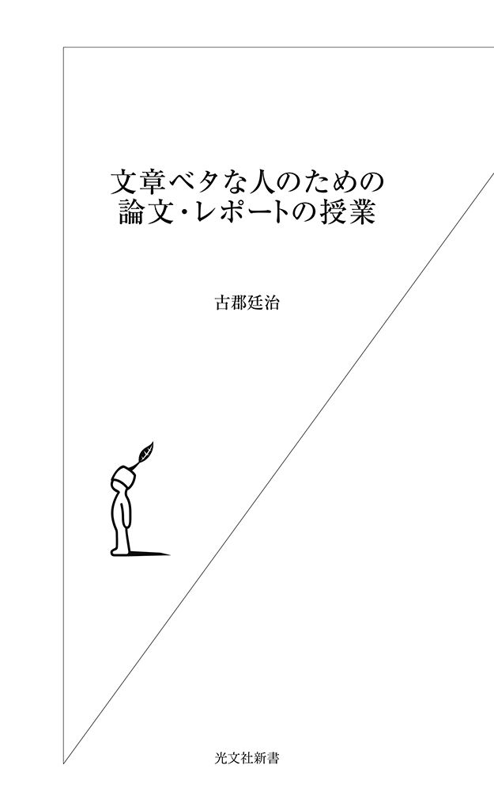
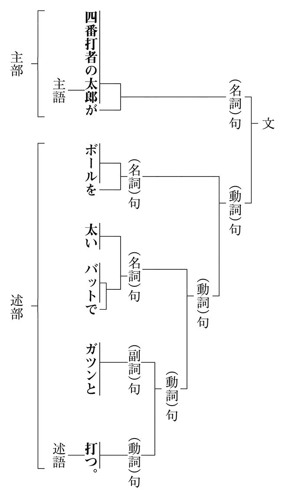
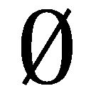
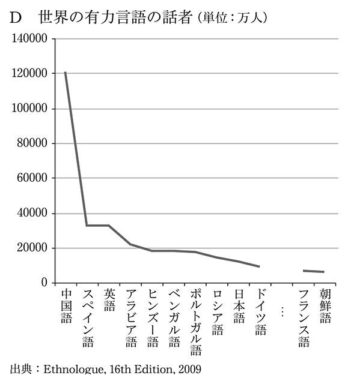

| 文章ベタな人のための論文・レポートの授業 (光文社新書) | |
| 古郡 廷治 | |
| (2014) | |

学生にも社会人にも何はさておき「文章力」が問われています。何事も「文書が成ってはじめて仕事（任務）が終わる」からです。
学生がどんなによい研究、調査や実験を行ったとしても、また、社会人がどんなにいい企画・立案、商談や契約をしたとしても、それを上手に文書にする術をもっていないならば、成し遂げたことを人に認めてもらうことも、自分の能力を正当に評価してもらうこともできなくなってしまうでしょう。
どんな文書にも、それにふさわしい文の書き方、構成法、語句や文字の選択の仕方があります。
本書では、
・ 大学生や社会人に不可欠な〝作文〟の基本
と、
・ 論文・レポート、報告書等の構成法、文章の書き方、語句の選び方
を、実際に学生が書いた多くの文例を示すことによって具体的に述べてみました。
章順に読んでいただくと、実践的な文章力を身につけることに役立つはずです。しかし、論文やレポートが目前の執筆課題となっている方には、第１章に目を通した後、第６章以降の章に飛び、それから第２章から第５章を読んでいただいても結構です。
また、興味が一般の文章、会社で使うような文章を書くことにある方には、まず第１章から第５章までを読み、それから第８章と第９章に進み、後の章は興味が湧いたときに読んでいただければと思います。
本書の出版には光文社の古川遊也氏に大変お世話になりました。幸いにして、本書が多くの方の参考に資することができたとするならば、それはひとえに、ともすると硬くなってしまう表現や狭い分野に依存した用語を使ってしまいがちになる私の悪弊を見抜き、読者との間の距離を縮めるのに意を注いでくださった古川氏のおかげです。ここに記して氏への信頼と感謝の念を表したいと思います。
平成二六年四月
筆者
目 次
文を書くことは、メールなども含めるとだれもが日常的にやっている行為です。けれども、ただ書くのではなく、しかるべき文章を書くとなると、とくに論文やレポートの場合、ことはそう簡単ではありません。さあ、書こうという段になって、だれもが途端にそのむずかしさ、苦しさを味わわされることになります。
実際、大学生は論文やレポートの課題で苦労しています。その指導者である教員も諸々の書類、学会や雑誌に載せる論文を書くのに呻吟しているに違いありません。社会人は報告書、業務日誌、説明書、企画書などを書くのに頭を痛めているでしょう。そんな傍観的なことをいっている私は、いま、この文章を書くのに四苦八苦しているところです。
論文は、文字通り、何かを論じる文章ですが、これには学会誌や大学の紀要などで学問、芸術を論じるものと、商業的な雑誌や各種団体の機関誌上などで何らかの事象について論じるものとがあります。
学問、芸術を論じる論文のことを学術論文といいます。これには研究論文、調査論文、解説論文などがあります。ある特定分野での学問的成果・結果を発表したもの（たとえば、「高齢者の万引きの増加とその経済社会的要因」）が研究論文となります。アンケート、インタビュー、統計データ、文献、その他によって調査・分析したもの（たとえば、「失業率の国際比較―実情と将来展望」）が調査論文となります。あることに関する理論、文献、歴史、システム、手法・技法などを解説、説明、対照したりしたもの（たとえば、「市販の日英翻訳ソフトの手法と性能」）が解説論文となります。
研究論文の中に、学位論文（卒業論文、修士論文、博士論文）があります。これは学生や研究者が学位（学士号、修士号、博士号）を取得する目的で書く論文です。
しかし、各種の論文が明確な境界線をもっているわけではありません。学術論文と他の論文の区別は、まず、何をもって「学術的」というかに依存します。調査論文や解説論文の中には、研究論文といっていいものもあります。逆に研究論文の中に、調査論文や解説論文、その他の論文と見た方がいいものもあります。たとえば、学術論文と銘打っても、事実や実態だけを記述したものなら、それは論文というより報告書といった方がいいものとなるでしょう。
レポート（report）とは、「小論（文）」や「報告書」のことをいいます。本教室では「レポート」を主に「小論」の意味で使いますが、英語のレポート（report）には「小論」の意味はありません。「小論」は英語ではエッセイ（essay）といいます。が、日本語で「エッセイ」というと、「小論」より「随筆」の意味になります。
小論は大学入試や授業での課題（レポート）としてお馴染のものです。文字通り、小さな論文です。分量、内容、形式において論文というほどには大げさなものではない文章といっていいかと思います。
報告書は、事実や実情・実態、行動や活動のありのままの姿を記して知らせる文章（書）です。論文とは違って、報告書には普通、著者（編者）の見解や主張は入りません。ただし、中には、事実や実態に独自の分析や評価を加え、報告書というよりは研究論文と呼んだ方がいいと思われるものもあります。
もっとも一般的な報告書として「○○報告書」というものがあります。企業には、出張報告書、事業報告書、業務報告書、決算報告書、年次報告書......などなどがあります。政府機関は、「○○白書」という名称の報告書を刊行しています。通商白書、厚生労働白書、警察白書、犯罪白書、観光白書......といった具合です。
大学生も報告書はよく書きます。たとえば、授業やゼミ活動の一環として社会問題や自然環境に関する統計データを収集したり、アンケート調査をしたり、インタビューなどを行ったりして、その結果を報告書にまとめています。
文章は、大きく分けると二種類あります。感性の文章と理性の文章です。小説、随筆、詩歌などは前者に、本教室で扱う論文、レポート、報告書、企画書などは後者に属します。読む側からすると、感性の文章は中身を鑑賞するためのもの、理性の文章は知識や情報を得るためのものといえます。論文やレポートを書くときには、それぞれの文章がもっている特徴をよく認識しておくことが大事です。
感性の文章の意味は、作品を介して著者と読者の間で創られます。これには一意性がありません。かりに著者がある特定のことを伝えようとしたとしても、それがそのまま一意に読者に伝わるとは限りません。「汚れつちまつた悲しみに......」（中原中也）という詩の最初の四行をとってこのことを考えてみたいと思います。
汚れつちまつた悲しみに
今日も小雪の降りかかる
汚れつちまつた悲しみに
今日も風さえ吹きすぎる
この詩で、作者が伝えようとしたことは何か。おそらくみなさんにはよくわからないか、わかった場合でも、個々人がそれぞれ別々の解釈をすると思います。
構造的に見ると、「汚れつちまつた悲しみ」は「悲しみ」が「汚れつちまつた」ということになりそうですが、これは、そうともとれるし、作者の人生の何かが「汚れつちまつた」、その「悲しみ」という意味にもとれます。しかし、そんなことはどうでも、この詩には人の心に響くものがあるのです。
感性の文章のよしあしは、読者が感情移入できるか、共感を覚えるか、感動するかによって決まります。私はこの詩にわけもなく感動しました。おそらくみなさんも感動したことだろうと思います。でも、その感動は私のものとは同じではなかったでしょう。感性の文章には「誤解」はありません。読者がこう読んだといえば、それが感性の文章の意味なのです。
感性の文章では、多くの人の共感を得た作品を「名文」と呼んでいます。しかし、あなたにとっての名文と私にとっての名文が同じとは限りません。あなたが感動したものがあなたにとっての名文であり、私が感動したものが私にとっての名文だからです。
私は、漫画家の赤塚不二夫が亡くなったときのタモリの弔辞にいたく感動しました。これは弔辞中の名文といえると思います。長いのでここに紹介はしませんが、その代わりに『友を偲ぶ』（遠藤周作、光文社）の中から、別の弔辞の名文を一つあげてみたいと思います。
［感性の文章例］
・ 梶山季之はたくさんの仕事をして、走って行ってしまった。つまり、君は向うへ行き、ぼくはこちらにいるらしいが、あまりに急なことなので、実感がない。
君は、野放図なところのある男と思われていたようで、じじつ、そういう面もあったが、律義で配慮の行き届いた、きわめて男らしい人物であった。
人間は、誰もが、自分がこの世を去ったときのことを考えるときがある、とおもう。何年か前に、君はこう書いていた。......自分の通夜は賑かにしてほしいが、葬式の必要はない......。しかし、人生では、何度かの儀式はやむをえないことを、覚悟していた筈だ。
外国のどこかの国では、人間が生れたときには、誕生の鐘を鳴らす、と聞いている。赤ん坊は、これを断ることはできない。
君の弔辞を読むことになろうとは、まったく予想していなかった。
冥福を祈る。
一九七五年五月十七日
この弔辞は吉行淳之介が梶山季之にささげたものです。「......」は略したのではなく、原文がそうなっています。わずか四〇〇字ほどの簡単な文章ですが、これで友を悼む気持ちが実によく伝わってきます。
感性の文章とは違って、理性の文章は知識や情報、論理を伝えるものです。このような文章の要諦は「一意性」にあります。
理性の文章の意味は著者が決めます。それがそのまま読者に伝わることが大事です。この関係が崩れたときは「誤解」を生みます。著者は誤解を生まない文章を書くことが重要です。
理性の文章のよしあしは、感動にではなく、一意性を保証するための用語の適切性、文章の論理性、意味の明快性にあります。しかし、これがむずかしいのです。そのことをある学生が書いたゼミの報告書の一端に見ておきたいと思います。
・ 近年、国内の規模が小さくなったこともあって、我が国の産業は、新興国市場を含めた海外に、その事業の拡大を求める必要が出ている。グローバル化の波がどっと押し寄せているのである。こうしたなか、企業の海外移転に伴い、真にグローバルに通用する人材である「グローバル人材」という術語を耳にすることが増えた。経済産業省も「産学官でグローバル人材育成を」と唱えているほどである。
理性の文章として、この文章には幾多の難点があります。まず、「必要が出ている」「どっと」「企業の海外移転」「術語」「耳にする」などは、いずれも不適切な用語です。「必要」は「出る」ものではありません。「企業」は「移転」するものではないでしょう。「グローバル人材」も「術語」とは呼べないものです。「どっと」や「耳にする」は、報告書で使うには俗語的に過ぎる語句です。
また、この文章は明快性を欠いています。脈絡がなく、論理性にも問題があります。全体の論理の展開は、
わが国の産業は......必要が出ている → グローバル化の波が押し寄せている → 「グローバル人材」という術後を耳にする機会が増えた → 経済産業省も......を唱えている
となりますが、文内、文間の〝場面展開〟に無理があります。そこに論理上の自然な流れ、つまり文と文が結びつくための因果関係がないのです。少し説明しましょう。
まず、書き出しで、国内の（産業）規模が小さくなったことをいい、それが原因となって企業に海外進出の必要性が求められるといっています。しかし、これは論理の飛躍です。企業の海外進出は、国内産業の規模の問題ではなく、おそらく国際競争の激化がもたらしたものだろうからです。日本の産業に海外進出の必要があることをいって、それでグローバル化の波が押し寄せているということにも、互いに関連したこととはいえ、因果関係があるとは思えません。「グローバル人材」という言葉を耳にすることに、経済産業省のグローバル人材の育成を唱えていることを結びつけるのにも無理があります。
では、どうしてこんな文章を書いてしまったのでしょうか。それは、これを書いた学生にグローバリゼーションに関する知識がなかったからではありません。問題は、学生に論文やレポートの文章がどんなものなのかの認識と、文や文章はどう書くべきかに関しての、これも知識ではなく、自覚と訓練が欠けているところにあるのです。
世の中には、話はうまいのに文章を書かせるとまるでダメな人がいます。反対に、文章はうまいのに話すのはまったくダメという人もいます。なぜでしょうか。このことは、伝達上での話し言葉と書き言葉の違いを考えるとよくわかります。
話して伝えるということを「会話」で考えてみましょう。会話は、話し手と聞き手が同じ空間と時間の中にいて、顔を見合わせて行うものです。伝えたいことは言語とともに、それに付随する顔の表情、声の大小、強弱、間、身振り、服装、持ち物などの非言語の手段によって補完されたり補強されたり、つくられたりします。
聞き手は、わからないこと、いいたいことがあったら、そこで聞いたこと、見たことに反応し、言語、非言語のメッセージをつくって、話し手にフィードバック（応答）をかけます。こうして、聞き手は話し手、話し手は聞き手にもなります。
一方、書くことを論文で考えてみましょう。この場合の伝達は、書き手と読み手は別々の空間と時間の中にいて、「文章」によって行うものです。これには非言語のメッセージは付随しません。
文章では、書き手は読み手のもとへ一方向のメッセージを〝発送〟します。ここには話し手と聞き手にあるようなフィードバック機能もありません。
会話のメッセージは、現場で、即興でつくられるものです。そのため、話し言葉には、「あー」とか「うー」といった間投詞が入ったり、「まあ」「あのう」とか「だから」といった接続用語が入ったりします。当然、それは構造が不完全なものとなり、表現が冗長にもなります。
・ あとは、あのう、もう一つはですね。あのう、なんていうんでしょうかね。あのう、感覚的なものとか、そういうのを、あのう、結構、なんていうんですかね、研ぎ澄ませておくっていうんですかね。それが、あのう、大事というか、なんですね。
これはある著名人のインタビューの断片をそのまま文字に起こしたものですが、文法という観点からみると、文にも、文章にもなってはいません。にもかかわらず、これが腑に落ちる、実に味わい深い談話となっていました。
会話では、人を引き付けることが大切です。それを通じて人間関係を築くことも大事です。会話や談話、講演等のよしあし、うまい下手は、話の内容だけでなく、話し手の外的信頼性（風貌、声調、服装、人格や教養）に大きく依存します。文章としては冗長で、構造的に不完全なこの談話が説得力をもっていた理由の多くも、そこからきたものだったのです。
文章に起こせば、この談話は、
・ もう一つは、感覚的なものを研ぎ澄ませておくことが大事だということです。
と、たった一行の、何とも味気ない文になってしまいます。
文章も人を引き付けることは大切です。しかし、そのために書き手が読み手との人間関係を築く必要はありません。どんなにシャイでも、無口でも、顔が悪くても、変な服装をしていても、一向にかまわないのです。
文章によるメッセージは、読み手とは別の空間にいて、時間をかけてつくります。しかし、会話でのようなフィードバックがないので、よく伝わるように端的に、明晰に、完全なかたちにする必要があります。そうしないと、文章は書かないも同じことになってしまうのです。
前章で、論文やレポートの文章が他の文章とは違うものだということを見ました。本章では、論文やレポートに使う文のかたちについて考えていくことにしたいと思います。
書くことは、会話などとは違って、即興のものでも簡単にフィードバックがかかるようなものでもありません。意味をきちんと伝えるには、効果的、効率的に伝えることのできる単語列、文を書く必要があります。
論文やレポートの文を書くには、単語の並べ方、文のかたちについての知識をもっていなければなりません。けれども、みなさんはそれを新しく学ぶ必要はないのです。すでに学んできたことを再確認しておけばいいのです。
文は、単語を並べてつくります。単語には、意味をもつもの（自立語、あるいは内容語）と意味をもたないもの（付属語、あるいは機能語）があります。後者は前者に付随して文をつくる役割を果たす単語です。
意味をもつ単語には、名詞、動詞、形容詞、副詞、その他があります。ご存知のように、名詞は、物的・心的な対象を表す単語、動詞は対象間の状態や関係を述べる単語（述語）、形容詞は名詞の質量などの属性（修飾）を表す単語、副詞は動詞の様態を表す単語です。意味をもたない単語には、意味をもつ単語に特定の役割を与える助詞と、それに様相・様態を与える助動詞があります。
単語は、文をつくるための部品といえます。その単語を規則に従って並べると文ができます。この規則を記述したものが文法です。
いま、「打つ」という行為を文で表現するとしましょう。
「打つ」という行為が成り立つには、最低、二つの対象が必要です。打つ主体と打たれるモノです。それを「太郎」と「ボール」とすると、これらの単語から、
＊ 打つ太郎ボール。
＊ 打つボール太郎。
＊ 太郎ボール打つ。
＊ 太郎打つボール。
＊ ボール打つ太郎。
＊ ボール太郎打つ。
という六つの単語列をつくることができます。しかし、これらは文とはいえません（頭にある＊は単語列が文になっていないことを示す標識です）。文にするには、何らかの方法で太郎が打つ人であり、ボールが打たれるモノであることを示す必要があります。
その役目を果たすのが付属語です。対象に「は（が）」という付属語をつければ、その対象が「打つ」人となり、「を」という付属語をつければその対象が「打たれる」モノとなります。こうして、「打つ、太郎、ボール、は、を」の五つの単語から、次の単語列をつくることができます。
＊ 打つ太郎はボールを。
＊ 打つボールを太郎は。
太郎はボールを打つ。
＊ 太郎は打つボールを。
＊ ボールを打つ太郎は。
ボールを太郎は打つ。
私たちは、この単語列の中から、直感的に三番目と最後の単語列を文として認めています。これが文法的な文ということになります。文法は予めこうだと定められているものではなく、後づけで私たちが書く文がどんな単語列になっているかの形式化を試みたものです。
・ 太郎はボールをバットで打った。
も文法に適った文です。ここで、「で」という付属語は、「バット」が「打つ」に使われる〝道具〟であることを示す標識です。「た」は、「打つ」が過去に起こったことを示す標識です。
右の文は、その基本的な意味を変えることなく、
・ ボールをバットで太郎は打った。
・ バットで太郎はボールを打った。
と書いても、文法的な文となります。
意味をもつ単語は単独で、あるいは機能語と結びついて意味上でひとかたまりの要素（句）となり、それがまた他の要素と係り受け（修飾）の関係をもって上位の要素を形成します。この過程を繰り返すと最上位の句に到達します。これが文です。
次の図は、文の句構造を示したものです。ここで句の名称は、その句の中で中心的役割を担っている単語の種類の名（品詞名）をとったものです。

別の見方をすれば、文は主部と述部に分かれます。このとき、主部の中心になる単語を主語、述部の中心になる単語を述語と呼びます。言い換えると、主語は述語が表現する状態、動作、性質等の主体となる単語、述語は主語の状態、動作、性質を叙述する単語です。
句構造を知っておくと、平たくいえば文法構造を心得ていると、よい文を書くのに大変役立ちます。逆に、これに鈍感だと往々にして意味のとりづらい文や、意味不明の文を書いてしまうことになります。
次の文を考えてみます。
・ この美しい花子さんが自慢していた町はいつか私も住んでみたいといっていたのです。
これは、一見、何の問題もない文です。意味も何となくわかります。しかし、よく読んでみると、「美しい」のが「花子さん」なのか「町」なのか、曖昧ですね。「いつか」が「住んでみたい」にかかるのか、「いっていた」にかかるのかもよくわからないでしょう。
それに主語と述語の関係が乱れていることにも気づきます。「町は......いっていたのです」はどう考えても変です。「いう」という述語には、「いう人」と「いわれること」が必要だからです。「町」はものをいう対象にはなりません。
日本語では、単語と機能語のセットを文末以外のどこにでもおくことができます。しかし、他の言語だとそうはいきません。たとえば、英語の、
・John hit a ball with the bat.（ジョンはバットでボールを打った）
の語順を変え、
・The ball hit John with a bat.（ボールはジョンをバットで打った）
にすると、文法的には間違っていませんが、現実にはありえない文となります。また、
・John hit with a bat the ball.（？）
にすると、意味をなさない文となってしまいます。
こう見てみると、日本語は語順に〝鈍感〟な言語だということがわかります。機能語のおかげで、動作や状態を示す単語が最後にきさえすれば、あとの要素はどこにでもおくことができるのです。これに比べると、英語は語順に敏感な言語です。いくつかの前置詞を除くと、機能語が果たす役割を語順に負わせているので、日本語のようには語順を自由に変えることはできないのです。
文は基本的には一つの主語と一つの述語をもちます。これを単文といいます。「太郎がボールを打つ」は単文で、「太郎」が主語、「打つ」が述語です。ここで、「を」が付随した「ボール」を目的語といいます。
「私は太郎に本をあげた」には、目的語が二つあります。ここで、「を」という標識をとる対象（本）を直接目的語、「に」という標識をとる対象（太郎）を間接目的語といいます。同じことを「私は本を太郎にあげた」と書くこともできます。一方、英語の「I gave Taro a book.」を「I gave a book Taro.」と書くわけにはいきません。語順を変えてしまうと、意味をなさない文となってしまうからです。
一見、複雑そうに見えますが、
・ みすぼらしい小柄な男が、花売りのかわいい五、六歳の少女にお金をきたない手で渡した。
も、「太郎がボールを打つ」とまったく同じかたちの単文です。この文では、「男」には「みすぼらしい」と「小柄な」という属性（修飾語）がついています。同様に、たくさんの属性が「少女」にもかかっています。
二つ以上の文を合体させて一つの文にすると、重文ができます。重文は、文を接続語（単語や文を結びつける語句）で結合したものです。たとえば、
・ 太郎は東京へいった。次郎は大阪へいった。
という二つの単文から、
・ 太郎は東京にいき、次郎は大阪へいった。
・ 太郎は東京にいったが、次郎は大阪へいった。
という重文ができます。最初の文は、「いく」（動詞）の連用形を使って二つの文を一つの重文にしたものです。二番目の文は、機能語（接続助詞）の「が」を使って二つの文を重文にしたものです。
文の中に別の文を入れ込むと複文ができます。たとえば、
・ この川にはかわうそがいる。次郎はそういった。太郎はそれをついに発見した。
という三つの単文の、最初の二つから、
・ 次郎は、この川にはかわうそがいる、といった。
という複文ができます。さらに、三つ全部を使うと、
・ 太郎は、次郎がこの川にいるといった、かわうそをついに発見した。
という複文ができます。この文のかたちを図示すると次のようになります。
単文、重文、複文の二つ以上を組み合わせて一つの文にすると複合文ができます。次の文を見てみます。
・ 人間の知的交流には、すべての人に理解でき、かつ、正確な概念を伝えることのできる、そんな言葉の使い方が必要である。
これは、「人間の知的交流にはＸが必要である」という単文のＸのところに「Ｙができ、Ｚができる」という重文を入れ込んだものです。
文には意味があります。しかし、文法に適ってはいても意味のない文があります。逆に、文法的な文でなくても意味のある文もあります。次の例を見てみます。
・ 太郎が次郎を見る。 （文法的、意味有）
・ 太郎が心を見る。 （文法的、意味無）
・ 太郎、次郎を見る。 （非文法的、意味有）
・ 太郎が見る心を。 （非文法的、意味無）
最初の文は文法に適い、〝正当な〟意味をもっています。二番目の文は文法的には完全なものですが、意味をなしていません。「心」は「病む」対象ではあっても「見る」対象にはなり得ないものだからです。三番目の文は、非文法的ですが、意味は通ります。「太郎」に付随すべき機能語が欠けてはいるものの、大方の人はこの文を読んで「太郎は次郎を見る」と理解するはずだからです。しかし、これは日本語の文法では文としては認めがたい文です。四番目の文は、文法が破たんし、意味も破たんした「文にならない文」、つまり「非文」です。
論文やレポートでは、文法に適った文、意味のある文、そのうえで、一意性をもった文を書く必要があります。意味のない文を書くことは論外ですが、たとえば、
・ 警官は車で逃げる犯人を追いかけた。
は文法的な文で意味もありますが、一意性を欠いています。句構造と意味の双方で
・ 警官は（車で逃げる犯人を）追いかけた。
とも、
・ 警官は車で（逃げる犯人を）追いかけた。
ともとれるからです。こんなかたちの文を書いていると、文意を効果的に伝えることに失敗してしまいます。
文は、基本のかたちを変えることなく、様相・様態を変えることができます。「太郎がボールを打つ」という文に様相・様態をつけると、たとえば、次のような文ができます。
・ 太郎はボールを打ちます。 （丁寧）
・ 太郎はボールを打つのだ。 （断定）
・ 太郎はボールを打つだろう。 （推量）
・ 太郎はボールを打つらしい。 （伝聞）
・ 太郎はボールを打った。 （過去）
・ 太郎はボールを打たない。 （否定）
・ ボールは太郎に打たれる。 （受身）
論文やレポートなどの文では、一般に文末に「です・ます」や「だ」は使いません。たとえば、「この結果は期待した通りのものだ」と断言したり、「この結果は期待した通りのものです」と丁寧に述べたりするような書き方はしないでしょう。単刀直入に「この結果は期待した通りのものである（ものとなった）」と、「ある・いる・なる」などを使った、いわゆる「である調」の文を書くのが普通です。
論文やレポートなどの文は、直截、簡潔、明晰であることを旨とします。推量体、伝聞体、断定体、丁寧体の文を使うこともそうはありません。否定文や受身文も無暗に使いません。主に肯定、能動の文を書きます。
論文やレポートでは、実際、どんな文を書くべきなのでしょうか。本章ではまさにそれをメインテーマに掲げ、書くべき文、書いてはならない文を具体的に示したいと思います。
論文やレポートの文を書くために、もっとも大事な第一の原則は、構造の完全な文を書くということです。
文は、構造上絶対に必要な要素を欠いたり、並べ方を間違えたりすると、意味がとりづらくなったり、不明になったりしてしまいます。前に使った例でいうと、「打つ」には、文法的に、最低、「打つ人」と「打たれるモノ」が必要です。したがって、「彼が打つ」だけでは文として意味をなしません。一方、「歩く」には、最低限「歩く対象」が必要です。したがって、「太郎は歩く」「犬が歩く」で十分に文法的な文となります。
最近、
・ オリンピックが東京に決定しました。
というような表現をよく見かけるようになりました。しかし「決定する」は、最低、二つの対象（決定する対象と決定される対象）を必要としています。たとえば、
・ 会社が賃上げを決定する。
というようにです。決定に関わる主体も入れるなら、
・ ＩＯＣが二〇二〇年のオリンピックを東京に決定しました。
というように三つの要素が要ります。その意味からすると、
・ オリンピックが東京に決定しました。
は不完全でおかしな文です。ただ、文法は人々の経験から規則を導き出したものなので、この表現も一般化していけば、それで文法的にも完全な文となっていきます（すでにそうなっているといえなくもありません）。
同じようなことは、「発売する」や「実現する」にもいえます。双方とも、完全な文にするには、最低でも、「だれが」と、「何を」が必要です。しかし、このごろは、
・ 二〇一四年版が発売しました。
とか、
・ プロジェクションマッピングが実現しました。
というような文をよく見かけるようになっています。
非文法的な文（不完全な文）を書くことが推奨できないのは、文の意味がとりづらくなったり、不明になったりするからです。次の文を考えてみます。
・ 政治改革によって政権の交代を可能にする仕組みができた。しかし、使いこなすほどには民主主義の何たるかを知ってはいないのである。
この文章中の文では、「使いこなす」と、「知っている」という二つの述語に不可欠の要素が欠落しています。「使いこなす」には、「だれが」と、「何を」の二つの要素が必要です。しかし、その「だれ」が、「何」を、「使いこなす」のかが不明です。
「知っている」も「だれが」と、「何を」を明示する必要がありますが、この文にはその「だれ」に当たる要素がありません。こうなると、文は一意性を失ってしまいます。一体、「だれ」（国民、議会、議員？）が「何」（民主主義、仕組み？）を使いこなすというのでしょうか。「だれ」が民主主義の何たるかを知ってはいないというのでしょうか。以下のように完全な文を書けば、意味は明確になります。
・ 政治改革によって政権の交代を可能にする仕組みができた。しかし、その仕組みを使いこなすほどには、国民は民主主義の何たるかを知ってはいないのである。
さらに次の例文を考えてみましょう。［ ］内が、一意的で意味が通る文です。
・ 今回の会費改定は、前にも報告いたしましたが、主な理由といたしましては「住民活動」の諸事業を推進するため、特に地域活動の拠点として、市内の九地区に地域センターを設置し、多くの方の参加のもとに、地域福祉活動を進めるための財源としてお願いするものでございます。［今回の会費改定は、よりいい地域福祉活動を推進するためのものです。前にも報告いたしましたが、この改定をもとに、地域活動の拠点として、市内の九地区に地域センターを設置し、多くの方々の参加を得て、地域福祉活動を進めていきたいと思っております。ご理解とご協力をお願いいたします。］
この文は、基本的には、「ＸがＹにＺをお願いする」という文です。しかし、「Ｙに」と「Ｚを」（間接目的語と直接目的語）に当たる部分が欠落した不完全な文です。本来なら、「今回の会費改定は、......のため、みなさんに増額負担をお願いするものでございます」とすべきところを、目的語を明示せずに、「今回の会費改定は、......の財源としてお願いするものでございます」としてしまっているのです。このような文を書くと、仮に意味がとれたとしても、理解するまでに余分な時間を要することになってしまいます。
次にあげる例文も、みな不完全な文です。これらも、カッコ内のようにすると、完全な文となり一意性と明晰性が出ます。
・ 会社は従来の人事管理システムでは他人の仕事を正確かつ公正に評価することはしなかったが、今回システムが変更したことで、それが必要となったのである。［会社は従来の人事管理システムでは他人の仕事を正確かつ公正に評価することはしなかったが、今回（会社が）システムを変更したことで、それが必要となったのである。］
・ 本研究では、英日機械翻訳で訳語をどう選択するかの問題をとりあげる。とくに、小説などの文章では、その場の雰囲気や人物の人柄を表現する重要な要件である。［本研究では、英日機械翻訳で訳語をどう選択するかの問題をとりあげる。小説などの文章では、訳語の選択はその場の雰囲気や人物の人柄を表現するために、とくに重要である。］
しかし、ここまで述べてきたことと矛盾するようですが、文章中では、場合によって完全な文より不完全な文の方がいいこともあります。たとえば、
・ 私はデパートに行きました。私は時計を買いました。
と完全な文を書く人はいないでしょう。この場合は、二番目の文の主語は省略して、
・ 私はデパートに行きました。時計を買いました。
と文法的には不完全な文を書いた方が簡単に理解できます。これは、
・ 私はデパートに行き、時計を買いました。
という完全な文（重文）にすることもできます。
次の文例はどれも不完全ですが、これはこれで何の問題もありません。
・ 火鉢という言葉。もう死語だ。いつごろから使わなくなったのだろう。［火鉢という言葉がある。これはもう死語だ。私たちはいつごろからこの言葉を使わなくなったのだろう。］
最初の文には述部が欠けています。二番目の文は主語、最後の文は「使う」のに不可欠な対象を二つ（「だれ」が、という対象（主語）と、「何」を、という対象（目的語）を欠いています。しかし、論文やレポートの文とは違って、この種の軽い文章では、カッコ内のように完全な文で書くと、逆にしつこくなったり、理屈っぽくなったりしてしまいます。
私がよく使う文例をもう一つあげておきます。
・I raised my daughter in the American fashion. I believe in America. America has made my fortune. I gave my daughter her freedom and yet taught her never to dishonor her family. (Mario Puzo,The Godfather, G. P. Putnam's Sons, 1969)
［私は私の娘をアメリカ式に育てました。私はアメリカを信じているんです。私はアメリカで成功しました。私は私の娘に自由を与えましたが、決して彼女の家を汚すようなことはするなと教えました。］
この英文は直訳するとカッコ内のようになりますが、日本語の小説としてはこれでは落第です。日本語で書くなら、文はむしろ不完全なものにすべきです。少なくとも、傍線を付した部分は不要です。
論文やレポートの文章では、まずは「完全な文を書く」ことを心がけることが大事です。その後で、一意性、文章の流れ、読みやすさなどを考え、不必要な要素は省略して書くようにしたいものです。
論文やレポートの文を書くための第二の原則は、係り受け関係の明確な文を書くということです。
文は、主語と述語が呼応して完成します。ところが、多くの人にとって、これを守ることが思いのほかむずかしいこととなっています。簡単な例で見てみましょう。
・ 著者は、長年この分野で活躍してきた研究者であり、これを大学の教科書としても使ってきており、多くの実例も含まれていて、学生の入門書としてベストである。
この例文では、「ＸはＹである」の主語（Ｘ）が「著者」、述語（Ｙである）が「ベストである」となって呼応関係が破たんしています。
主述が乱れている文は、他にいくらでもあげることができます。
・ コンピュータの性能は日進月歩を続け、それに反比例して低価格化している。
・ 本書の強みは、単なる理論の展開に止まらず、それを地道な実証を行って現実の社会と結びつけ、なおかつ、やさしい用語で説明しているので、一般の学生が読んでわかるようになっている。
・ 同報告書では、日本企業の強みである高品質な製品・サービスの供給体制を実現するために、企業の強みやその基盤となる企業理念を現地法人等に浸透させることが重要であり、そのためにはグローバルな環境でリーダーシップを発揮できる日本人社員が必要不可欠であるともいわれている。
係り受け関係では、主語と呼応すべき述語が欠けていることも多々あります。その端的な例が体言止めの文です。たとえば、「これは一〇個で一〇〇〇円ですね。では、一つでは？」というときの「一つでは？」には「いくらですか」の述部がありません。もちろん、この文はそれで一向にかまいませんが、論文やレポートの文章ではそうはいかないのです。
・ 事務処理をコンピュータに移行するには、いまの処理方法は人間に合わせたもの、伝票様式も人間寄りのものである。
この文には主部と呼応する述部が欠落していて、「コンピュータに移行するには～だ」の「～だ」に当たる要素がありません。主部だけの、いわば「宙吊りの文」となってしまっています。
以下にあげるのは、大学生の卒業研究（論文）の中からとった主語と述語の対応が破たんしてしまっている文例です。
・ 人名の判別とは、人名辞書にあるデータと照合しているため、文章中ではそれが人名でない場合がある。
・ もう一つ問題をあげるとすれば、この方法では、データが少なかったため、有効な処理ができなかった場合がある。
・ このプログラムの主要部は、入力データが読み込み、その処理の過程で得られる情報をもとに、ダイジェストを生成する。
主語と述語の呼応関係の破たんとともに、内部の係り受け関係が破たんしているか、もしくは曖昧になっている文もよく見かけます。
・ 簡単に仕事ができると思っては困るのである。
・ 私はＸさんと同じように本当に仕事のできる人は少ないと思います。
最初の文では、「簡単に」が「仕事ができる」にかかるのか、「思っては」にかかるのか曖昧です。二番目の文では、Ｘさんのような有能で本当に仕事のできる人が少ない、と私が考えているのか、Ｘさんもそう考えているのと同じように、本当に仕事のできる人は少ないものだと私が考えているのか、文中の係り受け関係が曖昧です。
このような難点を回避する一つの方策は、修飾関係で結ばれる語句をできるだけ近くにおくようにすることです。たとえば、右の例文では、
・ 仕事が簡単にできると思っては困るのである。
・ 私は本当に仕事のできるＸさんのような人は少ないと思います。
とすれば修飾関係が曖昧でなくなり、意味も明確となるでしょう。
係り受けの曖昧性を回避するもう一つの方法は、読点を使うことです。読点は、①読むときに息継ぎが必要になるところ、②論理上、文の要素が集まって〝ひとかたまり〟の概念を表すところに使います。加えて、読点には、③読みやすさや文の構造を明確にするという役割もあります。
・ いい話は、いい始めと、いい終わりがあり、中間が概して短い。
・ 昨日の午後、明後日は何があっても必ず行くと彼はいっていた。
・ 警官は、自転車でピストルを構えて、犯人が逃げていくのを追いかけた。
・ 警官は、自転車でピストルを構えて犯人が逃げていくのを、追いかけた。
・ 警官は、自転車で、ピストルを構えて犯人が逃げていくのを追いかけた。
最初の文の読点の打ち方は、①および②に従ったもの、二番目の文では③に従ったものです。「昨日の午後明後日は......」では読みづらいはずです。
三番目の文は読点なしで書くと修飾関係が曖昧になってしまいます。読点を使うことで、自転車に乗っているのも、ピストルをもっているのも警官だとわかります。しかし、同じ文でも、四番目の文のように読点を打つと、自転車に乗っているのもピストルをもっているのも犯人ということになります。最後の文では、自転車に乗っているのは警官で、ピストルをもっているのは犯人ということになります。
論文やレポートなどの文を書くための第三の原則は、短い文を書くということです。文は一般に四〇字から一〇〇字くらい、行にして二、三行以内のものにするのがいいとされています。
構造に破たんがなく、理解するのに不当な時間を要しないものであれば、本来、文は長くても短くてもかまいません。
次の二つの文（章）は、同じことを一方が構造の単純な文の連続で、他方が一文で表してみたものです。両者ともどこにも問題はなく、理解も簡単にできる文章となっています。したがって、このどちらの書き方をすべきかは、個人の文体の問題であり、だれがどこで何のために使うかの問題でもあります。
・ わが国は、他の国に比べ製造業で高い技術力を誇っている。しかし、地域に合った製品をつくるという点での立ち遅れが目立っている。国際的に活躍できる人材の育成をしてこなかったこともある。そんなことから、とくに新興国諸国での国際競争に苦戦している。
・ わが国は、他の国に比べ製造業で高い技術力を誇りながら、地域に合った製品をつくるという点で立ち遅れており、国際的に活躍できる人材の育成をしてこなかったこともあって、とくに新興国諸国における国際競争で苦戦している。
一般に、構造の単純な文ばかりで書くと、文章が単調になったり、〝ごつごつ〟したものとなったりして落ち着きを失います。逆に複雑な構造をした文を使って書くと、意味がとりづらくなるだけでなく、「主述の不一致」のところでも見たように、しばしば構造上、意味上、あるいはその双方に破たんをきたした文章ができてしまいます。
長い文には三つのタイプがあります。頭でっかちの文、胴長の文、足長の文です。
［頭でっかちの文］
・ 激しい国際競争に打ち勝つために、同年次平等主義に基づく昇進や昇給に歯止めをかけ、能力と業績に基づく昇給や昇進・昇格への転換を目指して制度を変え、同時に、従業員のチャレンジ精神を喚起し、能力を向上させるための人材育成・活用、管理職やキャリアに対する個人の意思を重視する社内公募制、挑戦する目標を明確にするための目標管理制、困難な課題への挑戦を奨励する加点主義の人事考課、管理職や専門職の業績を重視する年俸制等の人事に関する諸制度が普及してきた。
［胴長の文］
・ 本論文では、複文をとりあげ、翻訳の前処理系として複文中の節間の意味関係を考慮して、翻訳しやすい表現に書き換えを行い、書き換えを行う際に必要となる節間の意味関係を文内の特徴情報から自動的に認識する意味関係判別モデルを開発し、その手法をもとに行った実験結果を報告する。
［足長の文］
・ かつては高いことで有名だった我が国の家計貯蓄率も、近年においては五％を割り込んでおり、可処分所得も減少し、貯蓄を切り崩してやりくりしている家庭もあって、既に先進国の中で最低の水準となっている。
これらの例文には構造上の乱れはありません。しかし、いずれも長すぎる文で理解を不必要にむずかしくしています。
「ＸはＹをＺする」という文型でいうと、頭でっかちの文はＸ（主語）の部分、胴長の文はＹ（目的語）の部分、足長の文はＺ（述語）の部分がそれぞれ長くなっています。言い換えると、頭でっかちの文は、主語にかかる要素が長い文です。胴長の文は、目的語にかかる要素が多く、主語と述語の間に、いってみればつめものが多い文です。足長の文は、主語と目的語が短く、述語にかかる要素が長い文です。
最初の例文は、主語にかかる要素が多すぎ、主語がどこにあるのか、それが何なのかがわかりにくい文となっています（主語は、最後の行の「諸制度」で、その前の文節がすべてこの主語に係っています）。
二番目の例文は、主語と述語の間が空きすぎて、「本論文で」何を「報告する」のかの「何を」の部分がわかりにくくなってしまっています。
三番目の例文は、述語の「水準となっている」にかかっていく連用修飾（節）の要素がたくさんあって、意味がとりづらくなっています。
構造が複雑で理解がむずかしい文は、主語―述語、主語―目的語―述語の構造が単純になるような文の連続にして書き変えるべきです。これを二番目の文を例にして行ってみると、たとえば、次のような文の連続にすることができます。こうすれば、門外漢にも、内容はわからないにしても、何を書こうとしているかの意図はわかるようになるはずです。
・ 本論文では、第一に、複文の主節と従属節中に現れる特徴情報から二節間の意味関係を自動的に認識する意味関係判別モデルを開発する。第二に、意味関係判別モデルを援用し、原文（複文）を機械翻訳システムで処理しやすい表現に書き換えるための前処理系を構築する。第三に、この前処理系を機械翻訳システムに付加して試みた複文の翻訳結果を報告する。
論文やレポートの文を書くための第四の原則は、肯定文で書くということです。
文には表明の仕方により肯定文と否定文があります。肯定文では、「である」こと（イエス）を、否定文では「でない」こと（ノー）を表明します。言い換えると、肯定文は、述語の関係が成り立つことを、否定文は、その関係が成り立たないことを表現します。たとえば、
塩はありますか。
と聞かれ、
あります。 （イエス）
ありません。 （ノー）
といえば、肯定文では「イエス」を、否定文では「ノー」を表明したことになります。「あります」は、塩があることを、「ありません」は塩がないことを表します。
肯定文は、述語の関係が成立すること以外の何ものも表明しません。これに対し、否定文は述語の関係が成立しないこと以外のことも表明することがあります。
たとえば、「私はリンゴを買います」は、リンゴを買うこと以外は何も意味しませんが、その否定文の「私はリンゴを買いません」は、「リンゴは買わずに梨を買います」ということを意味することもあります。肯定文を白とすれば、否定文は黒と考えがちですが、そうとは限らないのです。
否定文はいったことを曖昧にしたり、間接的にしたりします。「私はリンゴを買わないのではない」といえば、否定の否定で肯定になるのかというと、そうとは限りません。そういっても、依然としてリンゴは買わないという意味にも、リンゴは買わないで他のものを買うという意味にもなり得ます。
否定文は、「行く？」に対し、「行かない」のように、ノーを表明するときには、断定的で、一意性を強くもった表現となります。しかし、それ以外のときは、肯定文より理解しづらいものとなります。文意を曖昧にし、ときに表明を消極的なものにもします。
否定文は、文を〝ひねり〟ます。だからこそ否定文を使うこともあります。「彼の演奏は上手だ」といえば、簡単に理解できます。しかし、「彼の演奏は上手ではない」や「彼の演奏は上手とはいえない」は、「彼の演奏は下手だ」になるのかというと、そこに何か含みを残した表現となります。
以前、女性問題を暴露されたときの報道で記者の指摘に対し、
・ 全部間違っているわけではない。
といった政治家がいました。この間は、
・ 私は、それが必ずしも適切ではないということではないのではないかと思いますね。
と発言した政治家もいました。これらは一体何を意味したものなのでしょうか。指摘を全面的に認めた、部分的に認めた、あるいはそれ以外のことをいったのでしょうか。いずれにせよ、このような表現をする政治家は否定文の効用をよく心得ているか、言葉の使い方を知らないのかのどちらかとなります。
論文やレポートの文章では、同じことを肯定文で表せる場合には、否定文は使わないようにすべきです。否定文は、イエス・ノーをはっきりさせるとき以外、文意に曖昧性をもちこみ、表明を消極的なものにもします。
論理の文章には、明晰で、説得力があり、力強さを備えたものであることが必要です。次にあげる例文も、あえて否定文にする必要がないのであれば、たとえば、括弧内にある肯定文で書いた方がいい文になるでしょう。
・ 金融引き締めは日本にとってはもっともよくない政策です。［金融引き締めは日本にとっては最悪の政策です。］
・ 人間はミスをしないことはないのです。［人間はミスをします。］
・ アメリカのイラクへの軍事介入がテロを誘発しているといえなくもないのである。［アメリカのイラクへの軍事介入がテロを誘発しているといえる（あるいは、いってよい）。］
・ 韓国や日本では出生率は下げ止まっていないが、先進国の中には出生率が上昇に転じた国もある。［韓国や日本では出生率の低下が続いているが、先進国の中には出生率が上昇に転じた国もある。］
・ メール、企画書等、何でもコンピュータでつくってしまう今日でも、文章教育の必要性がなくなることはない。［メール、企画書など、何でもコンピュータでつくってしまう今日でも、文章教育は必要（あるいは、不可欠）である。］
否定文は戦略的にも問題があります。論文やレポート、企画書などの文章では、「できない」「しない」「わからない」というより、「できた」「した」「わかった」という書き方をする方が得策だからです。たとえば、
・ コンピュータに要約文をつくらせることは簡単ではない。コンピュータが、自分で文章の内容を理解できないことには要約はつくれないからである。人間は文章を読み内容をつかんだうえで要約するが、コンピュータには、この「つかむ」という作業ができない。したがって、本論文での実験結果からも自動要約システムは実用レベルに達したとはいえないのである。
と書くより、
・ コンピュータに要約文をつくらせるのはむずかしい。コンピュータが要約をつくるには、コンピュータ自身が文章の内容を把握することが必要である。人間は文章を読み内容をつかんだうえで要約するが、これをコンピュータに行わせるのは至難の業である。したがって、本論文での実験結果からも、自動要約システムを実用に供するには、なお解決すべき点が多いことがわかる。
と書いた方が、積極的で、説得力があり、著者の自信のほどが前面に出た文章となると思います。
論文やレポートの文を書くための第五の原則は、能動文で書くということです。
受身文では、能動態の文で機能語の「を」や「に」を伴っている要素を主語にし、述語の様態として「れる（られる）」を使います。
・ 太郎が次郎を殴る。 （能動文）
の、「次郎を」（目的語）を主語にすると、
・ 次郎が太郎に殴られる。 （受身文）
という受身形の文ができます。
受身形の表現は、文の焦点を変えたり、否定文と同様、意味を間接的にしたりします。この文では、能動形のときに「太郎」にあった焦点が、受身にしたときは「次郎」に移ります。
能動文は、意味の表明を直接的、受身文は間接的（婉曲）にします。
・ この本では、郵政民営化の是非が論じられている。
という受身文は、
・ この本では、郵政民営化の是非を論じている。
と能動文にすると、表明したことがそのものずばり直截的なものとなります。
受身文や否定文と同様、推量態の文も消極的で、力強さを欠くものです。
たとえば、これらの文体の入り混じった、
・ アメリカの軍事行動には疑問視される点が多々あるのではないかと思われる。反意を抱いている国が少なからずあるのも不思議ではないと考えられる。イラクはアメリカの国益ゆえに破壊されたといわれるのも、ある程度当たっていると思われる。
・ アメリカの軍事行動には疑問視される点が多々あるようである。反意を抱いている国が少なからずあるのも不思議ではないだろう。イラクがアメリカの国益ゆえに破壊されたといわれるのも、ある程度は正しいだろう。
のような文章を読むと、「思われる」のではなく、「思う」のは何か、「だろう」ではなく、「である」のは何かと思ってしまいます。こういう婉曲な言い方をされると、自分の意見をいうのを避けているようにも、いっていることに自信がないようにも、核心を避けているようにも見えます。
最初の文章は、たとえば、
・ アメリカの軍事行動には疑問視される点が多々ある。反意を抱いている国が少なからずあるのも不思議ではない。イラクがアメリカの国益ゆえに破壊されたといわれるのにも、ある程度は正しい点がある（だろう）。
のように書いた方が、より説得力が出ると思います。ただし、本当に「思われる」「だろう」「らしい」などを使って書かなければならない文も当然、存在します。右のように書き換えておきながら無責任ですが、そこまで断定的にいってしまっていいものかどうかは、私には判断のできかねるところです。
文が単に単語を並べたものではないのと同様、文章もただ文を連ねたものではありません。論文やレポートの文章は、文が有機的に結ばれて段落となり、段落の連続が何らかの論理の展開をもって統合されて完成するものです。
では、段落はどんなかたちをもった文の集まりなのでしょうか。論文やレポートの文章にはどんな論理構造があるのでしょうか。
本章では、そのことについて考えてみたいと思います。
文を連ねて段落ができます。段落を連ねて文章ができます。段落（パラグラフ）は、それ自体も文章として、文章の論理的な単位（部品）を形成します。私たちは段落を連ね、論理を展開し、論文やレポートを書きます。
段落は主題をもちます。それを表明する文を主題文といいます。段落のそれ以外の文は、主題（文）の説明をしたり、敷衍をしたり、例示をしたりします。段落の中では、前後する文は文法的にも、内容的にも密接な関係をもって結びついています。
一般に文の主語は文頭にきます。同様に、段落の主題文は、普通、段落の先頭にきます。次にあげる文章の段落では、最初の文が主題文となっています。主題は、東京が化け物のような巨大都市であるということにあります。
・ 東京には巨大都市の化け物をみる思いがする。東京は単に大きいばかりでなく、区画に何の統一もない都市である。海と山は方向を定めるには遠くにありすぎ、河川は小さくコンクリートの広がりの網目以外のなにものでもない。アジアやヨーロッパの大都市が建物の様式やその使われ方で確認できる区画をもっているのに、東京にはそれもない。ここではどこへ行っても古いものと新しいもの、工場と住宅と道路が混在している。
次にあげる段落では最後の文が主題文となっています。この段落の主題は語学が苦手だということです。
・ 中学、高校とも英語の成績は悪かった。いまでも英語は話せない。大学ではドイツ語をとったが、それもお情けの可だった。とにかく私は語学が苦手だ。
最初の段落では主題文以外の文は、東京が化け物のような巨大都市であることの例証をしています。二番目の段落では、語学が苦手であることの程度を学校での成績で例示・説明しています。
段落は主題を変えるときに立てます。あるいは読みやすさのため、長い段落は複数の段落に分割することもあります。
一方、主題（文）は段落に必須のものとは限りません。軽い文章にはそれがありません。いちいち主題をもたせていると、やはり文章が形式張って硬くなってしまうからです。次にあげる例文では主題は表に出す必要も、問題にする必要もないといえます。
・ 僕が子どものころは、夏になると、近くの川で泳いだものでした。いまはそんなことはしなくなってしまいました。そういえば、草熱がむんむんとした麦畑も、もう見なくなってしまいました。田圃は全部埋められ、そこに野菜がつくられています。この間、川に行ったら、「遊泳禁止」と看板が出ていました。
これに対し論文やレポートでは、段落に主題をもたせた方が明確で〝締まった〟文章ができます。次の段落には主題はありませんが、仮にこれが論文の文章だったとすれば、後の文章のように冒頭で主題を明確にすると、読みやすく、かつ、引き締まった文章となります。
・ 一九八一年現在、六五歳以上の一人住まいの老人は過去一〇年間で四八％増加し、五一〇万人から七五〇万人になった。二五歳未満の単身者世帯は三倍になり、一七〇万人を超えた。二五歳から三四歳では四倍の三五〇万人になった。ニューヨークでは、その住民の三〇％以上が単身者世帯である。
・ アメリカでは単身者世帯が急増している。一九八一年現在、六五歳以上の一人住まいの老人は過去一〇年間で四八％増加し、五一〇万人から七五〇万人になった。二五歳未満の単身者世帯は三倍になり、一七〇万人を超えた。二五歳から三四歳では四倍の三五〇万人になった。ニューヨークでは、その三〇％以上が単身者世帯である。
ところで、文章の意味は、文そのものが表現している意味の総和ではありません。それ以上のものがあります。書き手は、伝達効率をよくするため、読者がすでに知っていることは端折って書きます。読み手は、その了解のもとに「行間を読んで」文章を理解します。その過程を考えてみると、論文やレポートの文章をどう書くべきかのヒントを得ることができます。
「行間を読む」ということは推論と同義です。みなさんは世界知識（これまで蓄積してきた知識や経験）を使って推論し、文章の理解をしています。次の、対になった簡単な文例によって理解の過程を考えてみましょう。
① 太郎は早朝大学に行った。一限の授業に出た。
② 太郎は早朝大学に行った。朝練をした。
③ 太郎は早朝大学に行った。卒業旅行の航空券を買った。
④ 太郎は早朝大学に行った。ボーリングをした。
この一連の例文では、番号を追うごとにその理解がしづらくなっていきます。つまり、推論がしにくくなり、理解により長い時間がかかるようになります。だれでも①の意味は一瞬にしてわかります。しかし、④になると、しばらく考えてみても理解ができないのではないかと思います。人によっては、これは無意味な文章だと思うことでしょう。
①では、太郎は一限の授業を聴きたいために早く大学に行ったんだなと私たちは理解します。これに要する推論時間はほとんどゼロです。②は、①の文章より多少、長い推論時間を要します。しかし、太郎が運動部か何かに入っていて、その練習をしに早く大学に行ったという理解に達するだろうと思います。
③は、さらに長い推論時間を要します。その結果、たぶん太郎は大学に行って、生協で航空券を買ったのだろうと推測するでしょう。しかし、④では、文と文の間にギャップが大きすぎて、その間を〝橋渡し〟する推論ができないだろうと思います。
もし、お年寄りも読者対象にしたものであれば、③の文章にも問題があります。お年寄りには、その経験からして、大学で航空券を買えるという世界知識の共有を期待することはできないと思われるからです。
・ 太郎は早朝大学に行った。生協で航空券を買った。
と書けば、お年寄りでも、「ああ、今日では生協でもそういうものが買えるのか」と推論し、この文章を理解することでしょう。あるいは、
・ 太郎は早朝大学に行った。生協で旅行の斡旋もしているので、航空券を買った。
とすれば、推論をすることもなく、この文章を理解するはずです。しかし、これが大学生を読者対象とした文章であれば、生協が航空券を売っていることは周知の事実となっていると思われますので、こんなふうに書くと余計な要素の入った冗長な文章ということになってしまいます。
④に関しては、だれでも、
・ 太郎は学校をさぼった。ボーリングをした。
という文章は理解できます。けれども、何らかの説明がない限り、大学に行くということと、大学でボーリングをするということは結びつけられるもの、推論できるものではありません。
ただし、④がアメリカの大学についての文章であり、読者対象がアメリカ人だったとすれば、この説明なしで推論が成り立ちます。アメリカの大学ならキャンパス内に娯楽施設としてボーリング場をもっているところがあっても何の不思議もないことだからです。
書くことは、裏を返せば、読むことです。当然、論文やレポートでは読者対象が容易に橋渡しの推論ができ、誤解を生まない文章を書くべきです。しかし、私も含め、多くの人にとってこれが意外にむずかしいことなのです。みなさんも、ときに③や④のような文章を書いてしまっていることがあると思います。
誤解には、読者に起因するものと著者に起因するものがあります。読者に起因する誤解は二つあります。一つは、読者が文章を読むときに、もっていることが当然期待される世界知識を著者と共有していない場合に生まれる誤解です。
もう一つは、読者が文章を正当に理解しながら、著者の意図とはわざと違った理解をする場合に起こる誤解です。後者によって生まれる誤解は「曲解」といわれるものとなります。
これも例で見てみましょう。
・ 一つの民族の用いている言葉の中には、それによって物を言おうとするとき、どういうふうに並べていくか、自ずからの法則がある。我々が話していることの中にもそれがある。それはめいめいの中に無意識に習得されていて、普通はつかみどころがないものである。これを専門家がとりあげて整理し組織して示してくれるとき、そういうものがあると知るわけだ。こうして組織されたものが文法である。
・ 秋の旅行のご案内、ありがとうございます。もうすぐですね。ｘｘ温泉は紅葉も見られますし、みなさんも喜ぶだろうと思っています。ところで、前回の会費がｘ万円足りなくなってしまったままになっております。幹事の失態ですので、私が立て替え払いをしておきました。今回は予算通りにいけばいいと思っています。
最初の文章は、一般の大学生、あるいはみなさんには、読んで何の問題もなく理解できると想定されているものです。もし、理解できないとしたら、それは著者にはなく、読者の方に問題があります。大学生なら、著者との間に、この文章の理解に必要な世界知識（それが何であれ）の共有があって当然のことだからです。
後の文章は、一般的に考えて、著者が不足金の返済を放棄したものとは読めません。そういう推論は成り立たないはずです。しかし、この書状を受け取った人がそう理解したとしたら、それは誤解といっても、読者が著者の意図を無視し、自分に都合のいいように意図的な推論（曲解）をした結果です。
著者に起因する誤解も二種類あります。その一つは文章が難しすぎることからくるものです。もう一つは、構造が乱れていたり、論理が破たんしていたりする文章を書いてしまったことからくるものです。それぞれの例を見てみましょう。
・ 一人ひとりの人間にとって、生きるということは、幸福を望み、獲得することと同じだし、幸福を望み、獲得することは、生きることと同じである。
・ 言葉の研究には頂上のない山に登るような覚悟とヘラクレスが難事を成し遂げるほどの努力が必要です。そして、外国語というのは、母国語がわかる程度にしかわからないものです。また、外国語を知らない者は、母国語も知らないことになるのです。
最初の文章では、もし、これが小学生に向けたものであれば、おそらく理解は成り立たないはずです。しかし、その責任は読者にではなく、著者にあります。この文章は小学生にはむずかしすぎます。この種の誤解は著者が読者対象を見誤った文章を書いてしまったときに起こります。
二番目の文章では、その意味が伝わらないか、伝わっても一意性をもっては伝わらないだろうと思います。しかし、この原因も、読者にではなく論理が破たんしている段落を書いてしまった著者にあります。
著者は、最初の二文で「ＷにはＸが必要だ。ＹはＺである。」と、それぞれの文でまったく関連のないこと、つまり、ギャップが大きすぎて推論が成り立たないことを書いています。最後の文は、前の文と関連のないことをいっているだけではありません。この文では、「外国語を知らない者は母国語も知らない」と、どう考えても論理矛盾のあることをいっています。これでは読者にこの文章の理解ができるはずもありません。
文章は、その中身が効率的に、あるいは効果的に伝わるように書かれていなければなりません。そのために、書き手はジャンルに依存した〝物語〟の展開の仕方をします。もっとも身近な新聞記事を例にしてそれについて考えてみましょう。
・ ６日午後５時55分ごろ、文京区弥生２丁目の都道を自転車で走行していた○○市○○町４、無職、○○○○さん（72）が対向してきた乗用車にはねられ頭などを強く打ち搬送先の病院で死亡が確認された。ｘｘ署は自動車を運転していた△△県△△市中央８、会社員、△△△△容疑者（38）を自動車運転過失傷害容疑で現行犯逮捕し、容疑を同致死に切り替えて調べている。
これはある日のある新聞記事ですが、交通事故を扱った新聞記事は、他社のものであっても、これと似たり寄ったりのものとなっています。なぜでしょうか。それは、交通事故はこのように書くと、全容をよく表現でき、かつ、読者によく伝わる文章となるからです。
交通事故は、あるところで、だれかが、ある状況のもとで起こすものです。それには人的、物的な被害が伴います。起こった原因があり、事後の処理もあります。読者はそれらのことを知りたいと思って記事を読みます。新聞記者は、その読者に応えるべく次のような要素と枠組みをもった記事を書きます。
・ 場所―事故が起こった地理上の位置（所番地）
・ 関係人物―事故に関係した人とその属性（住所、氏名、年齢、職業、など）
・ 状況―事故の発生状況
・ 被害―人的・物的被害の状況
・ 原因―事故の発生原因
・ 結果―事故の後処理（警察による事故捜査状況や被害者の医療処置）
記事は、これらの要素のどれかを欠いても、不完全なものや読者の期待に沿わないものとなってしまいます。たとえば、この事故を次のように報じたら、みなさんはどこか変で、何とも釈然としないものを感じるだろうと思います。
・ 文京区弥生２丁目の都道を自転車で走行していた○○市の○○○○さんが対向してきた乗用車にはねられ死亡した。車は△△県の△△△△容疑者が運転していた。
論文やレポートになると、ことはそう簡単ではなくなります。その全容を表現するための文章の枠組みには、交通事故の記事のように明確な要素も〝物語〟（論理）の展開の仕方もないからです。
それでも、論文やレポートの文章にもおおまかな枠組みはあります。それは一般に序論・本論・結論といわれているもの、あるいは起・承・転・結といわれているものです。
著者には、伝えたいと思う主題（問題）があります。その中身があります。それによって伝えたいと思うこともあります。論文やレポートでは、それを序論・本論・結論という枠組みの中で〝物語〟化します。
少し具体的にいうと、著者は、何について伝えたいかを序論で述べます。ここでは文章の主題や文章で扱う問題の提起をします。本論で、主題、問題についての論議や分析をします。結論で、主題について何を論じたか、わかったか、分析したか、いいたかったか、どうすればいいか、といったことについて書きます。
論文やレポートの種類によっては、ここに、提言、未解決の問題への対処、今後の課題、主題に関しての将来の展望などがくることもあります。
起承転結で考えると、序論は「起」、本論は「承」、結論は「結」に当たります。「転」では、本論と関係した「たとえば話」をしたり、説明や例示によって本論を補完・補強したりします。この論理の展開の仕方は、よく次の詩を使って説明されます。
（起） 京の五条の糸屋の娘
（承） 姉は一七で妹は一五
（転） 諸国諸大名は弓矢で殺す
（結） 糸屋の娘は目で殺す
この詩は文章の起承転結性を体現したものになっています。〝物語〟を京都の五条通りに糸屋があってそこに娘さんがいた、ということで始め、それを「承」けて、娘さんは二人いて、お姉さんの方が一七歳、妹さんの方が一五歳です、と述べます。その後、突然、大名は弓矢で人を殺す、と一見前と関係のないことをいいますが、最後に糸屋の二人娘は（弓矢ではなく）目力で（男たちを）悩殺するのです、として〝物語〟を締めくくっています。文章はかく書くべきものということになります。
では、それに倣って日本が世界に誇る安全な国だということの小論を書いてみましょう。すると、もちろんかたちのうえでのことですが、たとえば次のような文章ができます（ここで、「転」のところでは、日本が安全であることの例証をしています）。
（起） 日本は人口が密集した国である。それにもかかわらず、世界に誇る安全な国となっている。
（承） 殺人などの凶悪犯罪は少ない。夜の街をひとりで歩いていても、まず心配はいらない。水道水は飲めるし、食品も安心して食べられる。
（転） アメリカでは年に二万人近くの殺人事件が起こっている。日本の年間の殺人は一〇〇〇人程度である。日本を旅行した人からは、落とした財布がみつかったとか、その辺に荷物をおいてもとられることはなかったといったこともよく聞く。
（結） どうすればこういう安全な社会をつくれるのだろうか。我々には、この点で日本の社会に学ぶべきものがたくさんあるのではないだろうか。
文章を書くときには、段落の最初の文を一字分、字下げして書きます。こうして、たとえば（起）（承）（転）（結）をつけてここであげた小論の文章は、四つの段落を使って序論・本論・結論の論理を展開したことになります。
日本語は段落の先頭を一字、字下げしますが、英語では二字から五字くらい字下げして書きます。ただし、英語では次ページ上の例文に見られるように文章の最初の段落では字下げをしません。二番目以降の段落から字下げします（ここでは二字、字下げ）。
メールなどの文章では、日本語でも英語でも、字下げなしで段落を書くことが多くなっています。ただし、このような文章では、次ページ下の例文に見られるように、段落を画すため、段落と段落の間に一行、空行をおいて書くのが普通です。
［英文での字下げ例］
Indian Camp
At the lake shore there was another rowboat drawn up. The two Indians stood waiting.
Nick and his father got in the stern of the boat and the Indians shoved it off and one of them got in to row. ...
［字下げなしのメールの文章例］
昨日は失礼いたしました。今度会うときは遅れないようにします。
ところで、例の件は先方からの返事待ちということでいいのでしょうか。何か一方的にお願いしたことなので心苦しく思っています。
いつか、また、お会いできればと思います。今度はもう少し暖かくなってからの方がいいですね。
前章では、文章の構造を述べ、書くことと表裏一体の関係にある読むことから論文やレポートの文章を考えてみました。本章では、とくに段落内の文に焦点を当て、理解しやすく誤解を与えない文章を書くための原則をあげ、その書き方を具体例で示したいと思います。
論文やレポートの文章を書くための、もっとも大事な第一の原則は、文間に結束性のある段落を書くということです。
文は、ただ並んでいるのではなく、他の文と何らかの結びつきをもって並んでいます。逆にいうと、文がかたちのうえで、内容の点で他の文と結束して文章（段落）ができます。
文間の結束には明示的な装置と非明示の装置があります。次の例を見てみましょう。
・ この文は文法的である。しかし、意味のない文である。
・ 太郎は次郎を殴った。次郎は泣いた。
これらの対の文からなる文章は、いずれもすんなりと理解できるものです。ここで、最初の文間は、「しかし」という有形の接続用語によって結びつけられています。仮にこれを、
・ この文は文法的である。これは意味のない文である。
と書くと、その結束性がとたんに崩れてしまいます。こうすると、文が意味的にうまくつながらなくなってしまいます。
二番目の文間には、「しかし」のような明示的な装置は使われていません。それでもこの文章は構造的、論理的に破たんしていません。これは、原因と結果という無形の装置で二つの文が結ばれているからです。太郎が殴った（原因）ので、次郎は泣いた（結果）のです。
文に結束性をもたせる有形の装置には接続詞その他の接続用語と、照応詞があります。次の例を見てみます。
・ 太郎は弁当を買った。それから出社した。
・ 太郎は高級車を買った。けれども、お金には苦労していた。
接続用語は、前後の文、前の節や句と後ろの節や句、単語と単語を結ぶ装置です。ここでは、「それから」と「けれども」が、文と文を結んでいます。
接続用語には、「順接」と「逆接」の二種類があります。「それから」は順接、「けれども」は逆接の接続用語です。
順接の接続用語は、前の文を受けてそれに順ずるような内容をもつ後の文（単語、句）に結びつけます。逆接の接続用語は、文を受けてそれに反するような内容を表す文（単語、句）に結びつけます。それぞれの接続用語には次のようなものがあります。
順接の接続用語 ― また、つまり、たとえば、すなわち、もちろん、だから、結局のところ、ということは、言い換えれば、なんとなれば......
逆接の接続用語 ― しかし、しかしながら、だが、これに反し、これとは裏腹に、にもかかわらず......
今度は次の例文を見てみます。
・ 太郎と次郎は仲がいい。彼らは大学の同窓生である。
・ 太郎は次郎に体罰を与えた。それは禁止されていることだった。
この例文では、「彼ら」（照応詞）が前の文の「太郎と次郎」（先行詞）を参照し、「それ」（照応詞）が「体罰を与えた」（先行詞）を参照（照応）しています。前の文と後続の文は、これで結束したものになっています。
照応には直接照応と間接照応があります。直接照応では、直前の例文にあるように、照応詞に先行詞の代替（イコールの関係）となる語句を使います（太郎と次郎＝彼ら、体罰を与えた＝それ）。
・ 山田君は田中君に忠告した。彼はそれを受け入れた。
・ 太郎は山に登った。 雲海を眺めた。
これらは直接照応の例です。前の文では、田中君＝彼、忠告＝それ、という関係になっています。このように照応詞が代名詞の場合の照応関係を代名詞参照といいます。また、後の文のように照応詞が省略されている照応関係は、とくにゼロ（）参照といいます（「雲海を眺めた」という文は主部（「彼は」）を省略したものです）。すなわち太郎＝です。
間接照応では、照応詞に先行詞とイコールの関係をもつ語句ではなく、それと関連する語句を使って文間を結束させます。
・大きな車があった。座席が革だった。（全体と部分）
はよく結束した文ですが、照応詞の「座席」が先行詞の「車」を参照することで二つの文を有機的に繋いでいます。この先行詞と照応詞は、イコールの関係にはなく、全体と部分の関係をもったものとなります。
・ 太郎は一年生である。学校では腕白で通っているが、家ではおとなしい男の子である。
この例では、「一年生」と「学校」、「太郎」と「男の子」は関連語句を使った照応関係にあります。それで二つの文が有機的に結ばれています。
間接照応をとる関連語句の範囲は広く、曖昧でもあります。この例文では、「腕白」と「男の子」、「学校」と「家」も互いに照応する語句だともいえます。ただ、文章を書くうえで大事なことは、何と何が関連語句であるかを決めることではなく、そんな方法を使って、文と文は結びついているものだということと、それを意識し適切な用語を使った文章を書くべきだということにあります。
次の文章の文間には結束性があります（自明のことと思いますのでその説明は省きます）。それゆえに、これは破たんのない文章となっています。
・ 書き手は伝えたいことの一部だけを文章にし、伝達の効率を図る。読み手は当然、文章が首尾一貫していることを期待する。書き手と読み手は、協調的な作業として文章を書き文章を読む。その協調が崩れると誤解が生まれる。
次の文章では、いいたいことはわかるものの、文間の結束が不安定になっています。そのことは、各文の主要部を書き出してみるとよく見えてきます。
・ 安楽死とは、助かる見込みの無い病人を、本人の希望に従って、苦痛の少ない方法で死なせることである。また、昔から賛否両論の意見があり、とても難しい問題である。つい最近も、アメリカで関連ニュースが流れた。
① 安楽死とは、......病人を、苦痛の少ない方法で、死なせることである。
② また、（安楽死は）......とても難しい問題である。
③ つい最近も、アメリカで（安楽死の）関連ニュースが流れたところだ。
著者は、そのままでは一つの主題のもとには結束しがたい別々のことを①と②でいっています。①の「安楽死は......である」という定義（文）は、②の「（安楽死は）......難しい問題である」という文とは自然な〝流れ〟をもって結びつくものではありません。ここではおそらく無意識のうちに「また」という順接の接続用語を使ってそれを無理に繋げてしまっているのでしょう。もし、②を「これは、その是非を決するのが難しい問題である」とでもすれば、①と②は、「安楽死」のもとに、文脈上の結束性を自然なかたちで保ったものとなります。
①で安楽死を定義し、②でその安楽死の是非を決するのは難しい問題だといっても、③で「最近（安楽死の）関連ニュースが流れた」と述べるのは、急に別の次元のことを言い出したことになって、文脈上で唐突に過ぎるように思います。
論文やレポートの文章を書くうえでの第二の原則は、主題のある段落を書く、すなわち一段落一主題の段落を書くということです。
主題をもたない段落は何について述べているのかわからないものになりがちです。一方、主題が複数あると、段落は往々にしてその焦点を失ったものとなってしまいます。後者の例を見ましょう。
・ 私がアメリカにいる間に日米関係は様変わりしてしまった。昨今のアメリカの対日感情には友好国のものとしては大変厳しいものがある。湾岸戦争で日本がとった行動はそれを助長してしまっていると思う。私は在米中に英語が一向にうまくならなかった。それには、私に課せられていた役目が良好な日米関係を保つために現地の日本企業を駆け回ることだったという事情もある。
この段落には二つの主題文（傍線部分）があります。しかし、これでは、著者が「日米関係」のことについて何か述べたいのか、自身の「英語能力」について何か述べたいのかがわからない文章となってしまいます。
次の段落にも複数の主題があります。そのうえで、ここでは焦点が主題間を移動し、変転しています。
・ 近年、地球規模での環境の悪化に伴い森林、河川、野生生物、生態系等の自然資源保全への社会的な関心は高まっている。自然資源管理のあり方は地球温暖化、廃棄物、エネルギー、環境汚染等の諸問題とともに持続可能な社会づくりの重要な課題である。持続可能な社会の構築に向けては一般市民の活動、自治体や企業の施策のみならず、環境に配慮した社会的な意思決定を行う仕組みが必要である。
著者は最初の文で「自然資源保全への社会的な関心」を主題として提示しています。しかし、次の文で、それを「自然資源管理のあり方」に変えてしまっています。さらに最後の文で、「環境に配慮した社会的な意思決定を行う仕組み」に変えてしまっています。
このように主題が変転する段落を書くと、全体としては整合性をもったものになったとしても、すんなりと理解するのが困難な文章になってしまうものです。ですから、論文やレポートを書くときには、まずは一段落一主題の文章を心がけるようにしたいと思います。
論文やレポートの文章を書くうえでの第三の原則は、論理展開のいい文章を書くということです。論理展開は、文字通り、文章の主題をどう〝物語〟っていくかの問題です。
次の例文には一応の一貫した論理展開があります。
・ 文章は形式も大事である。もちろん、第一に大事なのは中身だが、それさえよければ包装はどうでもいいということにはならない。上手に包めば中身が引き立ち、下手に包めば、それこそ文字通り下手をすると、中身が壊れてしまうだろう。
服装は人をつくらないが人となりは表すものである。機会に応じ、人には人の、論文には論文の〝服装〟がある。しかし、書くときに、そのことにあまり注意を払わない学生が多い。
だれもが、それにふさわしい服装で面接を受けないことには就職の糸口が開けないことをよく知っている。だから、然るべき服装を整えて面接に臨む。それなのに、学生は論文の服装は整えることなく文章を書いている。就職の場合とは違って、その重要性をだれも教えてくれなかったからである。
学生は、どこかでいつか文章の作法を学んでおく必要がある。論文やレポートを書くのに必要だし、社会に出てからも文章を書かねばならない機会は多いからである。
この文章は、文章作法を学んでおくことの必要性を説いています。傍線を付した文が各段落の主題文です。これを繋いでみると、おおよその論理展開が見えてきます。
文章には形式も大事である。→服装は人をつくらないが人となりは表すものである。→それなのに、学生は論文の服装は整えることなく文章を書いている。→学生は、どこかでいつか文章の作法を学んでおく必要がある。
次の文章は、第１章で紹介した学生の、執筆中のある時点での文章です。前の例文と比較してみると、どこがどう悪いのかがよくわかります。
・ 近年、日本国内の市場規模が縮小したことにより、我が国の企業は、新興国市場を含めた海外市場において、その事業活動の発展を求める必要性が高まるなど、経済のグローバル化が着実に進んでいます。こうしたなか、企業の海外発展に伴い、真にグローバルに通用する人材である「グローバル人材」が必要とされています。
実際に、「グローバル人材」という言葉は、二〇一一年現在、生活していくうえで目にしたり、耳にしたりする機会が増えています。例として、経済産業省は「産学官でグローバル人材の育成を（二〇一〇年四月二三日付）」を、日本経団連は「グローバル人材の育成に向けた提言（二〇一一年六月一四日）付」など、政府や経済界が報告書を挙げるほど注目されています。
しかしながら、日本人の語学力は世界的にみても低水準であることに加え、二〇代の出国率が低下するなど、若者のグローバル意識は求められるレベルにあるとはいい切れません。これまでも各大学・企業において、「グローバル人材」の育成にむけた様々な取り組みが行なわれています。しかし、社会で求められる「グローバル人材」の人材像が必ずしも明確になっておらず、求められる人材が十分に育っているとは言い難いのが現状でしょう。
そこで、私たち○○ゼミでは、「グローバル人材」の育成について分析してみることにしました。具体的には、企業が求めている「グローバル人材」像や学生のグローバル意識を企業訪問やアンケート調査によって明らかにし、そこから出てきた問題点を解決するための方策を検討してみました。それがこの報告書です。
この文章では、まず、各段落の主題がどの文にあるのか明確ではありません。一つの段落に複数の主題が入っていると思われるものもあります。仮に、傍線を付したものが各段落の主題だとし、それを繋げてみると、
「グローバル人材」が必要とされている。→「グローバル人材」という言葉を目にしたり、耳にしたりする機会が増えている。→若者のグローバル意識は求められるレベルにない。→我々は「グローバル人材」の育成について分析する。
となります。これで、「グローバル人材」について何らかの分析を試みた文章であることはぼんやりとわかります。しかし、段落内の文の結束性、段落間の論理展開が乱れていて、具体的に何をいおうとしているのかは不明瞭です。
同じく学生の書いた「友達」についての次の例になると、もう論理の展開は支離滅裂なものとなってしまっています。
・ 人生において、友達という存在は必要不可欠である。なぜなら、人が生まれて初めて人間関係を育んでいく他人が友達であり、人は友達との関わりの中でコミュニケーションというものを学んでいくからである。身内との関係では通用していたことが、他人との関係では通用しないということを、友達という関係で初めて知ることになるのだ。そうして人は他人との関わり方を学び、時には自分を抑えることや、他人の意見を受け入れる必要があることを知る。
近年、些細なことで殺人を犯す人が急増している。その犯人の多くが「小さいころから大人しい子だった」「友達があまりいなかった」と証言されることが多い。彼らは幼いころに満足な友達関係を築くことができず、我慢するということを十分に学んでこなかったのではないだろうか。そのため、自分の思い通りにならないことがあるとすぐに短絡的な行動を取ってしまう。凶悪犯罪を抑制するためにしなければならないのは、防犯カメラの設置でも警察のパトロール強化でもない。友達と仲良くするという子供のころの道徳教育ではないか。
友達という存在が人生に不可欠だという理由は他にもある。なぜなら友達というのは、とても身近な話し相手、遊び相手になりえるからである。人はひとりでは生きてはいけない。感情を共有する相手を欲し、共有することで満足する。その相手が友達である。また、友達は自分が持っていない情報を提供してくれる相手でもある。友達によって知識を増やすこともできる。
しかし現代社会では、友達という関係が希薄になっているのではないだろうか。インターネットや携帯電話が普及したことにより、直接顔を合わせなくても容易にコミュニケーションが取れるようになった。ある意味では、他人と関わり合う機会はとても増えた。しかし、無機質な文字だけの会話に思いをはせ、インターネット上でしか交流したことのない他人を果たして友達と呼ぶのだろうか。平気で嘘をつくこともできるし、他人との関係を気にして我慢する必要もないやり取りを果たしてコミュニケーションと呼んでいいのだろうか。
「これからの世の中はパソコンが使えないと困る」という理由で、小さいころからパソコンを使う子供が増えている。実際、インターネットのチャットや掲示板を利用している小中学生は非常に多い。防犯の意味も兼ねて携帯電話を持つ子供も多い。しかし人として本当に必要なのは、パソコンが使える能力でも携帯電話でメールをうつ能力でもなく、実際の他人と関わっていく能力なのではないだろうか。
人格が形成される子供時代の貴重な時間に、できるだけ多くの友達を作ってほしいと切に願う。
この文章から主題と思われる文をとり出して見ると、次のようになります。
友達という存在は必要不可欠である。→些細なことで殺人を犯す人が急増している。→友達が不可欠な理由は他にもある。→現代社会では、友達という関係が希薄になっている。→パソコンを使う子供が増えている。→子供時代に、多くの友達を作ってほしい。
この文章では、それぞれの段落が他と関連のない独立の主題を提起しています。これでは一連の段落を書いただけの、文章とはいい難い文章です。
文には事実を述べるものと何らかの判断をするものがあります。たとえば、
・ 富士山が世界遺産となった。地域振興にはいいが環境破壊が進む恐れがある。
といったとき、最初の文では事実を、後の文では意見（評価）を述べています。論文やレポートの文章では、事実を述べているところに評価を交えた文や、どこまでが評価なのかわからない文は避けて書くと論理展開が明快になります。
・ この国では、労働時間が長いことが問題となっている。しかし、法定労働時間が来年度から週四〇時間に移行する。この報告書によれば、それによって余暇に使える時間は以前より一〇％ほど増える。当然、家族で過ごす時間も増えるのである。ここには、残業の抑制も盛り込まれているので、一方には家計所得にマイナスの影響が出るとの憂慮も見られる。しかし、方向性としては労働者にとってメリットの方が大きい政策である。
この段落は、事実を述べてきて途中から評価を行っています。これでも理解はできますが、よく見ると、「家族で過ごす時間も増えるのである」が、報告書からの事実なのか、著者の評価なのかちょっとわかりづらいものとなっています。仮に著者の評価とした場合、事実を述べる段落と評価を述べる段落を別にし、たとえば、次のように書けば論理のすっきりした文章になると思います。
・ この国では、労働時間が長いことが問題となっている。しかし、法定労働時間が来年度から週四〇時間に移行する。残業も一日の上限が二時間、月に三〇時間までとされる。この報告書によれば、これによって余暇に使える時間は以前より一〇％ほど増える。
この政策が実施されれば、当然、家族で過ごす時間も増えるだろう。ここには、残業の抑制も盛り込まれたことから、一方には家計所得にマイナスの影響が出るとの憂慮も見られる。しかし、この政策は方向性としては労働者にとってメリットの方が大きいものである。
文章には〝遊び〟があることも大事です。しかし、論文やレポートの文章にこれは不要です。文章は、もって回ったいい方、重複する表現、不必要な文や段落は避け、必要不可欠の要素だけを使って書くべきものです。
次の文では、傍線を施した部分が重複したり不必要なものとなったりしています。改良版が括弧内の文章です。最後の文章は、これはこれでいいようにも見えますが、論文やレポートの文章だとすると、傍線の部分は本論から外れた、いわば道草している文です。
・ 湾岸戦争はアメリカという国が自国の論理といったものを押し付けただけということもできるのである。［湾岸戦争はアメリカが自国の論理を押し付けただけのものである。］
・ 製造業を中心に海外現地法人も増加を続けており、売上高同様に中国、その他の現地法人の増加が顕著になっている。［海外現地法人は、製造業を中心に、売上高同様に中国、その他の地域で顕著な増加を続けている。］
・ 日本の社会は閉鎖的な社会で、非正規職員が地位の高いポストにつくことはない。［日本は、非正規職員が高い地位につくことはない閉鎖的な社会である。］
・ オリンピックが東京に来るのは喜ばしいことだが、それで東日本大震災のことが忘れ去られてしまうのではないかと危惧を抱いている人がいる。私が被災地を回ってインタビューした人の一人は「ここで生まれたのに、先祖のもとに帰ることも許されなくなってしまった」と嘆いていた。別の人は「東電と政府にだまされた」と憤っていた。私にはオリンピック招致が、原発政策を知らぬ間に前進させてしまうのではないかとの恐れもある。オリンピックはこなくても、ましてや原発はなくても、人は豊かに生きていける。その豊かさに必要なことは経済発展よりも、安全に暮らせる社会、人間らしく生きていける社会だと思う。それが本当の「豊かな」国というものではないか。
論文やレポートの文章を書くための第四の原則は、釣り合いのとれた文章を書くということです。
論文やレポートなどでは、均整な文体、構造、抽象度をもった文（章）を書くことが大事です。そうしないと、文章が落ち着きを失い、読みづらいものになってしまいます。
一般の文章は統一した文体を使って書くべきものです。これはとくに文末表現で気をつけたいことです。
・ 少子化は社会や経済に大きな影響を及ぼしている。社会保障制度、とりわけ公的年金制度への影響は深刻なものがある。現在の年金制度は「賦課方式」。ご承知のように、現役世代が納めた保険料が高齢者の年金給付に使われる制度です。少子化、高齢化が進むと、当然のこととして給付を受ける人の方が多くなるので、この制度は財政的に成り立たなくなってしまうのである。［少子化は社会や経済に大きな影響を及ぼしています。社会保障制度、とりわけ公的年金制度への影響は深刻なものがあります。現在の年金制度は「賦課方式」となっています。これは、ご承知のように現役世代が納めた保険料が高齢者の年金給付に使われる制度です。少子化、高齢化が進むと、当然のこととして給付を受ける人の方が多くなりますので、この制度は財政的に成り立たなくなってしまうのです。］
この文章には落ち着きがありません。「である」調で書かれていますが、中間部分で、一か所に「です・ます」調、一か所に体言止めを使っています。一般を対象にした文章と思われますので、全体を「です・ます」調にすると、括弧内のようなものとなります。
もし、論文であれば、「ご承知のように」のような敬語、あるいは口語体の表現は削除し、体言止めのところは完全な文にし、「です・ます」調のところは「である」調に変えるべきです。
文章には、対句的表現、あるいは決まり文句的表現が使われますが、それを端折ってしまった文を書く人がたくさんいます。
・ 文章を読んだり書くことは最大の知的作業である。
［文章を読んだり書いたりすることは最大の知的作業である。］
・ 都心の温度と八王子は二度以上違っている。
［都心（の温度）と八王子の温度は二度以上違っている。］
・ やせようと思うなら、食事制限をすることよりも、運動です。
［やせようと思うなら、食事制限をすることよりも、運動をすることが必要です。］
どれも例文の意味するところはよくわかります。しかし、いずれも落ち着きのない文です。これらの文は、括弧内の文章のように書くと、構造的にバランスがとれ、落ち着いたものとなります。
理性の文章では、名詞と動詞を中心とする文を使い、「主語―（目的語）―述語」のような基本的な構文を崩すことなく文を書くことが大事です。
・ 一向に勉強する気配のない次郎を太郎は殴った。
と書くより、
・ 太郎は一向に勉強する気配のない次郎を殴った。
と、主語を先頭にもってきた方が文の座りがよくなります。それをしたうえで、「長い文の分割」のところで触れたように、各要素間のバランスのいい文を書くことが大事です。
文（章）は内容面の抽象度を一定にする必要があります。次の文（章）を考えてみます。
・ この夏はイギリスと、フランスと、ニューヨークに行った。［この夏はロンドンと、パリと、ニューヨークに行った。］
・ 個人主義の国と集団主義の国がある。アメリカは個人主義、日本は集団主義の国といってよい。
アメリカでは何をやるにも個人に責任を課す。私が殺人を犯したとすれば、その責任は私がとるべきものである。そのことで私の親や兄弟が責任を問われることはない。
日本ではそうはいかない。私のやったことは、賞に値することでも犯罪でも、私のものだけでなく、親や兄弟のものでもある。この間、あるキャスターの子息が不祥事を起こした。そのことで彼は自分の番組の出演自粛に追い込まれている。子息はもう三〇代の大人である。そんなことだから、殺人でも起こそうものなら、その親はマスコミに追いかけられて大変である。最近では、社会保険料を納めない人に、親の財産を差し押さえるという通知が来たそうである。それでいて、日本では何かというと自己責任の重要性をあげつらうのである。
しかし、では個人主義の国の方がいいのかというと、そこにはまた別の問題がある。......
最初の文は、括弧内のように意味のレベルを等しくした文にすべきです（国名→都市名）。二番目の文章は、日本とアメリカを対比したことを述べていますが、「日本ではそうはいかない」で始まる段落で、日本のことだけ詳しく述べすぎています。この段落は他の段落に比べると、文章の速度、あるいは抽象度が低いものとなっています。よって、傍線を施した部分を削除するか、逆に、第二段落でアメリカについても具体的なことを述べるかして、抽象度を一定にすべきです。
論文やレポートの文章を書くための第五の原則は、接続用語を乱用しない文章を書くということです。
接続用語や照応詞は、単語と単語、句と句、文と文を結びつけるための接着剤といえます。これは便利な装置ですが、それだけに、つい安易に使ってしまう傾向があります。しかし、それで何をしたかというと、多くの場合、結びつかない文を無理やりに結びつけてしまったり、文章の意味をとりづらいものにしてしまったりしているのです。
軽い文章には接続用語がよく使われます。それが文章にリズムとわかりやすさを与えるからです。
・ 私はよく女房にかみつく。だって、頭にくることが多いからだ。でも、怒るのは大人げないなと思うこともある。というのも、怒る大本となっていることが大体はくだらないことだからである。では、どうするのが一番いいのか。
ここには省いてしまってもいい接続用語があります。たとえば、「だって」や「というのも」は使わなくても一向に構わないものです。しかし、それを使って文を繋ぐことで文章にある種のリズムと読みやすさを与えています。
一方、論文やレポートは、簡潔、明快を旨とします。意味をとりづらくしてしまうような照応詞の乱用も避けるべきものです。次にあげる例文には接続用語の乱用が見られます。
・ 話し手は聞き手に情報を与える。とすれば言語行為は伝達である。ならば、言葉を理解するということは、......
・ 書き手は読み手にわかりやすく書く。そして、その努力をしない文章は読者を失う。
・ 労働時間は減った。すなわち、ｘ年を境にしてその後は減少傾向にある。
・ 辞書を引く作業は検索にほかならない。また、辞書は単語のデータベースである。
・ 老人問題をはじめとする各種公共問題に対するニーズの高度化、多様化の中で、公共的意思決定を合理化しようとする問題は、極めて重要な課題となっている。また、現在は計画化の時代であるといわれており、その社会は計画化社会と呼ばれることもある。もちろん、計画を行う場合、社会的資源に対する公的制御の可能性の増大という問題があり、さまざまな逆機能が顕在化する。
最初の文章では、文と文の間が全部接続用語で結ばれています。これは小学生が作文の時間にすべての文を「そして」で繋いだ文章を書くのに似ています。とにかく、〝うるさい〟文章です。
二番目と三番目は、どちらも接続用語を不必要に使った文章です。「そして」はまったく不要です。「すなわち」は、「そこで」や「それゆえ」と同様の意味合いをもった接続用語で、本来、前の文を敷衍したり説明したりするものであって、別のことをいうためのものとは違います。
四番目の文の接続用語「また」も、前の文と類似したことを後の文で述べるためのものです。この文のように別のことをいうためのものとは違います。三番目の文章の「すなわち」はそれでも間違っているとまではいえませんが、四番目の「また」の使用は明らかに誤用です。著者はこの接続用語を使うことによって結びつかない文を無理に結びつけてしまっているのです。最後の文章の「また」と「もちろん」も同じことです。ここでも、本来、結びつかない文をこの接続用語を使って無理に結束させ（ようとし）てしまっています。
会話ではよく次のようなことをいいます。
・ この間は、ほら、あの人がかんかんに怒ってさ。佐藤さんがあれでしょ。また、しくじってそれが頭にきたらしいのね。
こんな会話は、話している人の間では何となくわかるものですが、実際に「あの人」や「あれ」で何を指しているのか、話者同士ですら一致した対象をもっているとは限りません。論文やレポートではこういうことがあっては困ります。ところが、接続用語の場合と同様、これに類した文章をよく見かけます。
・ 日本にもそれらの研究を行う学者はいる。ただ、それらがすぐに消え去ってしまうのが残念である。それでも最近、一年間の論文の総目録をつくり、これらを資料として出版するようになった。しかし、その次の段階として、そういうことを活かし、それらを分野別にした資料をつくってもらいたいと思う。
この文章は、明らかに照応詞を使いすぎています。しかも、それらがどの要素を指しているのかも不明確です。たとえば、「そういうことを」といい、「それらを」といっても、その先行詞が具体的に何なのかを特定するのは困難です。
照応詞や接続用語は必要不可欠の場合、使った方がいい場合、使う必要はない場合があります。
・ 太郎は原発に反対した。それは思い切った発言だった。
・ 太郎はその登山には反対だった。それには命の危険があるからだった。
・ 私は彼に行かないことを奨めた。にもかかわらず、行ってしまった。
・ 体重もあり、また元気でもある。
最初の文の「それは」は必要不可欠といっていいものです。三番目の文の「にもかかわらず」も前後の二文を結束させるのには不可欠です。しかし、残りの二つの文の「それには」と「また」は使っても使わなくても構わないでしょう。使えばニュアンスに多少の違いが出てきます。みなさんは、こういったことを認識、自覚したうえで文章を書くことが大事です。
文章は、「だれが、何を、どうして（何の目的で）、だれに、どう」伝えるかということの、「どう」の一手段です。仮にあなたが、怒りを、気持ちを晴らすために、友人に、伝えようとしたら、それは、直接に、または間接に、平手（動作）で、口（話し言葉）で、文章（書き言葉）で伝えることができます。
文章で伝えるとき、そこに書法と作法の問題があります。書法は、どんな構造をした文や文章を、どんな要素からなる型（形式）にはめて書くかの問題です。一方、作法は、それにどう組織や人間関係を反映させるかの問題です。論文やレポートでは主に前者が肝心ですが、通信文（手紙やメール）のようなものでは、むしろ後者の方が大事です。たとえば、次のようなメールの文章を考えてみます。
お疲れ様です。ゼミ４年の斎藤です。夜分にすいません。
やっと卒業論文が完成しました。（笑）
来週から春休みになるので、ちょっとバイトが入っています。なので、明後日までに添削をしていただけると大変助かります。
第３章の評価の部分は自分なりにまとめてみたものですが、こういう結論は問題ありですかね？
よろしくお願いします。
このメールの目的は明確です。しかし、「お疲れ様です」「......完成しました。（笑）」「問題ありですかね？」などは、説明は省きますが、作法的に当を得たものとは思えません。
ビジネスでは、人間や組織の関係に配慮した文章を書く必要があります。単に「何を」が明確に伝わるだけでは不十分なのです。その点で、この文章の場合、依頼者が被依頼者に対し〝納入〟期限を勝手に中一日に設定し、それで「助かります」としているのは、作法的な行きすぎもはなはだしいものといえます。
本章ではいよいよ論文やレポートを書く準備段階の話をしたいと思います。どんな文章も、
・ 書きたいこと
・ 適切な論理展開
・ ふさわしい型
・ 適切な用語・用字
があって成り立ちます。ここまでは、二点目の「適切な論理展開」に関しての話をしてきたことになります。本章では、論文やレポートを書くために必要な「書きたいこと」と、「ふさわしい型」について考えていきます。
論文やレポートでは、まず何を書いたらいいかが問題となります。書きたいことがなければ文章はありません。「書きたいことがあって文章がある」のです。それが見つかり文章を書く段になったら、次に、どんな形式をもった文章にするかが問題となります。ちょうど、手紙やメールに一定の形式があるように、論文やレポートにもそれなりの形式があります。形式、つまり、「型があって文章がある」のです。
何かを書くためには、まず、テーマ（主題）を見つける必要があります。その後で、あるいはその間に、知識や情報の収集を行い、構想を練り、書くべきことの題目（トピック）を絞ります。題目が決まったら、それを〝物語〟として構成するための筋書き（アウトライン）が必要となります。
・ 主題の選択 ― テーマを選ぶ
・ 題目の決定 ― 情報を集め構想を練りトピックを決める
・ 筋書きの策定 ― アウトラインをつくる
論文やレポートのテーマは、与えられる場合と、自ら見つけなければならない場合とがあります。授業の一環としての小論や報告書ではテーマは担当者から与えられるでしょう。学位論文その他の論文では、多くの場合、自らテーマを見つけ出すことになると思います。
テーマの選択には留意すべき次のような要点があります。
・ 目的 ― 文章は目的に適っていなければ無意味です。
・ 興味 ― 興味のない文章を書くのは苦痛以外の何ものでもありません。
・ 有意義性 ― 書くに値するテーマでなければ書いても無駄になります。
・ スコープ（範囲） ― テーマは一般的（広）すぎても特殊（狭）すぎても困ります。
・ 時間 ― 文章は締め切までに仕上げる必要があります。
文章には目的があります。その直接の目的は、授業で課された小論であればいい成績を得ることに、学位論文なら直接的には学位を取得することにあります。目的を達成するためにはそのために最適なテーマを見つけることが大切です。
好きなことにならだれでも没頭できます。論文やレポートでは、ただでさえ難儀な作業に、興味がある、または、もてそうなテーマを見つけ出さないことには、苦痛だけが倍加する結果を招いてしまいます。
テーマには有意義性が必要です。たとえば、女性の社会進出の是非をテーマに選んだとすると、それはもう当たり前のことになってしまっていて、いまさら論ずるには値しないことになるでしょう。一方、日本に女性の管理職が少ないことの社会的背景をテーマに選んだとすれば、それをどう論じるかは知りませんが、現実の問題としての有意義性は高いものとなるでしょう。
有意義性には分野に依存した問題もあります。たとえば、「車と社会について」という社会学のレポートが課されたとき、消費増税が車の販売・消費者行動にどんな影響を及ぼすかを分析・考察した文章を書いたとしたら、内容がどんなにすばらしいものであっても、経済学の問題としてならともかく、社会学のレポートとしては有意義性を欠いたものとなってしまうに違いありません。社会学の問題としてなら、車と地球温暖化や交通事故などを選んだ方が有意義性が高くなると思います。
テーマは広すぎても狭すぎても問題となります。広すぎると、書いたことが総花的になって論じたことに裏付け（説得力）を与えるのがむずかしくなってしまいます。かといって狭すぎると、十分な裏付けを与えられたところで、論じたことに一般性、普遍性を欠いてしまうだろうと思います。
すべてのことは時間の中で起こります。工事には工期があります。文章には締切りがあります。それを失してしまったら文章は書かないも同じことになってしまいます。たとえば、論文やレポートのテーマには、目的、有意義性などを考えたうえで、与えられた時間の中で書きあげられるものを選ぶ必要があります。
テーマを決めたら、あるいはその過程で、書きたいと思うことに関する事実を集め、他者の考えを聞き、著作物等に目を通して、大事なことはノートにとっておく必要があります。そのためには、論文や報告書、雑誌や新聞を読み、同僚や指導者と議論し、学位論文などを書くのであれば、研究会や学会などにも参加して、知識を深める必要があります。並行して、何をどう書くかの構想を練り、大きなテーマなら焦点を絞り、書くべき題目（トピック）を特定します。
昔は、この知識、データ、情報を獲得することが大変な作業でした。多くの時間を要したのです。しかし、いまは何ごとも電子化の時代です。インターネット上の検索エンジン（GoogleやYahoo）で、キーワードを使って情報検索すれば、どんなテーマに関してもたくさんの情報を得ることができます。たとえば、「学術データベース」というキーワードで検索しただけでも無数の情報源を見つけることができます。政府、大学、研究機関、学会等が所有している諸々の報告書、論文、データ等も簡単にネット上で得ることができます。
大学や公共の図書館に行けば、書籍、学術論文、雑誌、新聞、その他の文献を閲覧することができます。そこにないものは文献検索ツールを使って探し出し、コピーしたりすることもできます。こうして、今日では情報を探すことより、得られた情報の中から、本当に必要で、価値あるものを選び出すことの方がむしろむずかしい問題となっています。
書くべきテーマ、あるいは題目に関し、十分な構想が得られたら、次にやるべきことはその文章化をどうするか考えることです。そのための有効な手段として筋書き（アウトライン）をつくることがあります。
料理に例えると、知識や情報の収集は食材をそろえる作業です。アウトラインはそれを調理するのに使うレシピのようなものです。食材をそろえずに手元にあるものだけで調理をすると、自分はともかく、他人も満足させることのできる料理をつくるのはむずかしいだろうと思います。食材は集めても、レシピなしで調理した料理では、その道の達人によるものならいざ知らず、これも多くの人を満足させることはできないでしょう。
同じことは文章についてもいえます。知識、情報、データなしには論文やレポートは書けません。十分な資料に当たっても、それを整理することなしに書いては、やはり、いい論文やレポートは書けないでしょう。料理とは違って、文章は書いている途中で前の段階に戻ったり、最悪の場合は最初に戻ってつくり直すこともできますが、そういうやり方で書いた文章は、おそらくまとまりの悪いものになったり、うまく書けた場合でも法外に時間のかかったものとなってしまうだろうと思います。
アウトラインは、箇条書き、章・節立て、筋書きなどにしてつくることができます。小論の場合には、全体の流れを箇条書きや筋書きにしてみるのがいいと思います。学位論文や学術雑誌論文では、章立てや節立てのアウトラインを考え、各章、各節にどんなことを書くかをメモ書きして入れてみるのも一つの手です。
書くことは創造の過程です。文章は書きながら生まれてくる新たなアイデアや着想の影響を受けます。アウトラインは、文章を規定しますが、それによって書き出した文章がアウトラインの修正を求めます。その繰り返しの中で文章はより洗練されたものになっていきます。
論文やレポートには経験則になっている形式（構成要素）があります。それに当てはめて書くと、著者には書きやすく、読者には読みやすい文章ができます。〝型があって文章がある〟のです。学術論文（学位論文や専門誌・学会誌論文）は、大略、次のような要素からなっています（角括弧に入れた要素はある場合と、ない場合とがあります）。
本文は論文の本体です。その他はそれに付帯する要素となります。少々、細かくなりますが、以下、最初に本文とそれを構成する要素とその書法を、次に本文に付帯する各要素の形式とその書法を述べておきます。
本文には、大まかにいうと序論部、本論部、結論部があります。工学系の論文であれば、ここに、たとえば、どんな目的で、何に関し、どんなデータを使い、どんな実験をし、どんな結果を得たか、それが何を意味するか、何に使えるかといったことを書きます。社会科学系の論文であれば、たとえば、ここで問題（の所在）を提起し、それについて論じ、あるいは分析し、事実や実態を明らかにして、問題解決の方策を述べたり政策への提言をしたりします。
学位論文は、書籍のように、本文をいくつかの章とその下の節や小節に分けて書きます。専門誌・学会誌などの論文は、一般に章は立てずにいくつかの節を設けて書きます。
論文は、普通、「はじめに」という名称の章や節で始め、その後に、研究の中身に依存したいくつかの章・節を立て、最後を「おわりに」という章・節で締めくくります。専門誌・学会誌等では、「投稿規定」や「執筆要領」によって、あらかじめ論文の節立てと、節に使う柱（見出し）を規定しています。
いま、仮にフランス語、オランダ語、ドイツ語の三つの言語を公用語としているベルギーの言語政策をめぐっての論文を書くとします。すると、たとえば、「はじめに」から「おわりに」に至る形式構造として次のような節・小節立てを考えてみることができます（これは単に形式の問題としての節・小節立ての例示です）。
１ はじめに （あるいは、序、序論、など）
２ 言語政策の歴史的背景
フランス語とオランダ語のせめぎ合い／複数言語による国の統合
３ 地域社会の言語教育
オランダ語地域の言語教育／フランス語地域の言語教育
４ 複数言語主義と政治経済
複数言語主義がもたらした政治空白／複数言語と経済効率
５ おわりに （あるいは、結論、むすび、結語、など）
序論部は、章・節立ての構造でいうと、大体「はじめに」に相当します。ここで、まず、問題を提起します。研究の目的や目標（新しい理論や原理の論究、装置、技術、システムの開発や改良、応用など）について述べます。理論的な論文なら何を論ずるか、実験・実証の論文なら、どんな実験を行い、どんなことを実証する（したい）かといったことを書きます。さらにここでは、必要に応じ、論文の背景、守備範囲、制約条件や他者が成し遂げた関連研究などに言及しておきます。
本論部には、成し遂げたことの内容、成果を書きます。仮に円安が日本の経済に与える影響を分析した論文だとすれば、たとえば、どんなデータを使い、どんな分析を行い、どんな結果を得たかといったことを書きます。著者は、使用データの妥当性や信頼性、分析方法の独自性、新規性（革新性）、有意性、優位性などについても触れ、必要なら、これらの点についてここで他の関連研究との比較検討を行います。
結論部では行った研究の総括をします。円安の論文の例でいえば、どんな分析をし、どんな結果を得たか、それが日本経済にとって何を意味するか、どんな影響を与えるか、といった知見を述べることになるでしょう。分野によっては、ここで研究成果の実用性や応用性を述べたり、考察、提案、提言をしたりすることもあり得ます。
結論部では、研究の成果だけでなく、その限界にも触れます。ここには、なし得なかったことや未解決の問題なども述べます。ただし、できなかったことを並べすぎるのは戦略としてはよくないことです。だれでも、しなかったこと、できなかったことより成し遂げたことを評価するものだからです。
論文は、文字通り「文」が中心をなしますが、本文の中のどこかに図や表も使います。図表は次のことを考えたうえで使うべきものです。
・ その情報は図表を使って伝えるべきものか。
・ どんな種類の図表を使って伝えるのがいいか。
・ 本文中のどこに入れて使うのがいいか。
図表は目に訴えます。テレビでは、よく何らかの調査結果を示すのに円グラフや帯グラフを使っています。たとえば、「消費税を一〇％にあげるのに賛成か」という調査結果を、「賛成」「反対」「わからない」に分けて円グラフで示しています。こうすると、意見分布状況が一目でわかります。
しかし、これを論文で使うのは費用、紙幅、それに表現上の無駄です。論「文」は第一義的には頭に訴えるものです。この情報なら多くのスペースを使って図にすることはありません。「消費税を一〇％にあげることに賛成はｘ％、反対はｙ％、わからないと答えた人はｚ％である」と、一、二行で明確に、効果的に書けるからです。
図表を用いる場合、図にするのがいいか、表にするのがいいかの問題があります。たとえば、世界にある有力言語の話者数は、文章で説明するより、図表で表現した方が簡便で、実情把握もよくできます。では、この情報は図にするのがいいか、表にしたほうがいいか。図ならどんな図に、表ならどんな表にすべきか。
仮に表にする方がいいとし、次のページの（Ａ）をつくったとします。しかし、これでは罫線が多すぎ、また太すぎて、おそらく表と文章の見た目のバランスを崩してしまうのではないかと思います。各項目を罫線で囲んだ表は、不連続のデータ（...の行）を表示するのには適していない点もあります。見た目を考えると、セルの大きさ（幅）にこれほどの違いをもたせるのはどうかとも思います。では、（Ｂ）のようにしたらどうでしょうか。こうすると、不連続のデータの問題もセルの大きさの問題もなくなり、すっきりした表となります。簡単な表をつくるにも、標題のつけ方、その位置、各要素（セル）の縦横の大きさ、罫線の種類、数、太さ、全体としての文章とのバランスなど、考慮すべき点が多々あるのです。
ところで、この情報は、そもそも表にするのが最適だったのでしょうか。これを図で表現してみると、たとえば、（Ｃ）や（Ｄ）のようになります。（Ｃ）の棒グラフは、同じ事象に関しての量的差異を区分（年齢層、国、など）ごとに表示するのに適しています。これで各言語の話者数と相対的な数の違いが一目でわかります。一方、折れ線グラフは同じ事象が時とともに変化していく様子を表示するのに便利です。たとえば、年度ごとの貿易収支を折れ線グラフで示せば、その経年変化がよくわかるでしょう。各言語の話者数の表示には（Ｄ）よりも（Ｃ）を使う方が適切です。

図表には本文中のどこに入れるかの問題もあります。たとえば、二ページにわたるような大きな図表は、参照しやすくするために、表面と裏面に入れるのではなく、全体を一瞥できるように見開きのページに入れるべきです。小さな図表の場合は、ページの上部に入れるのがいいか、下部に入れるのがいいか、文章と文章の間に入れるのがいいかを考えてみる必要もあります。
論文では、独創性、新規性、有意（優位）性、等価性などを明確にするため、関連する文献の紹介をしたり、特別の章（節、小節）を設け他者の業績（文献）と方法・手法などの比較（類似点や相違点、利点や欠点）を行ったりします。
・ スタイル（文体）をチェックするプログラムは実用には遠いものである（山田 二〇〇四）。その評価はユーザがだれか、どんな文章を解析対象にしているかによっても違ったものとなっている（佐藤 二〇〇六、古川 二〇〇七）。
・ スタイル（文体）をチェックするプログラムは実用には遠いものである１。その評価はユーザがだれか、どんな文章を解析対象にしているかによっても違ったものとなっている２、３。
この例文は、文体をチェックしてくれるプログラムが実用にはほど遠いことと、そういうプログラムの性能評価はそれをどんな人が使うかと、どんな文章の文体をチェックしてくれるのかによっても違うことを述べていますが、そのことを裏付けるために他者の書いた論文を参照しています。
最初の例では、能力の裏付けを二〇〇四年に山田という人が書いた論文で、評価の裏付けを二〇〇六年に佐藤、二〇〇七年に古川という人が書いた論文を参照することで行っています。
最初の例では、論文の参照の仕方（タグ付け）に著者名と発表年が使われています。後の例では、添え字（横書きの論文では上付きの添え字）によるタグが使われています。こうして参照される文献の情報（著者名、論文名、雑誌（本）名、発表年、など）は、本文末（論文末）に「参考文献」のリストにして、最初の場合なら著者名順、後の場合なら参照番号順に列挙して入れます（参考文献リストの書き方については後ほど述べます）。
論文では、他の文献から文章を引用して使うことがあります。そのとき、引用する文章が二、三行までくらいの短いものであれば、本文中に日本語の場合はカギ括弧（「......」）をつけて、英語の場合なら二重の引用符（"......"）をつけて入れます。
長い文章を引用するときは、引用文の前後に空白行をおき、引用文を本文より字下げしたものとして入れるか、そうしない場合はフォントのサイズを落とし、ときには行間を本文より詰めて入れます。たとえば、
・ 本、雑誌、出版物などからの引用では、引用したページの下に脚注をつけるか、論文の最後に文献リストをつけるかして出典を明示する（もともとは、引用箇所の近くに明示するのが原則である）１。
というようになります。この例では、引用文が載っている文献を、「参考文献」のリストに、
１ 古郡廷治『論文・レポートのまとめ方』ちくま新書、一九九七
というようなかたちで入れることになります。
著者自らで作成したものでない図表を引用した場合、前の（Ａ）に見られるように、図表そのもの、あるいはそれをつくるのに用いた出典・出所を図表の下に本文より小さいサイズのフォントを用いて入れます。日本語の例だと、たとえば、
出所：文部科学省『教育白書』（二〇一二年度版）
のようにします。また、図表に関し、とくに明記しておきたいことがあれば、「注」を設け、図表の下部に入れます。
脚注は、本文の用語に特別の説明や参考文献をページ末および章・節・小節（項）末に入れておきたいときに使う「注記」です。これは、参考文献と同じような要領で、本文と一線を画す区切り（たとえば、棒線）をつけて書き入れます。
次の例で考えてみます。
・ この調査によると、白人の年俸の中位値＊はｘ万ドルである。それに対しチカーノの中位値はその六割程度となっている＊＊。
この文章では、脚注のタグに上付きのアステリスクが使われています（ここではもとは横書きの文章を縦書きにしています）。本文と罫線で区切られたページ下部に本文より小さなフォントを使い、たとえばこの脚注なら、
＊ メジアン。数値を大きさの順に並べたとき、ちょうど順番が真ん中になる数値。
＊＊ 実際にはもっと低いだろう。統計に反映されていないチカーノの労働者が多いからである。
といったようなものとなります。脚注のタグには、一般に数字やアルファベットを使います。
結局のところ、参考文献、引用、脚注は、
・ 書いたことに権威を与える
・ 自分でやったことと他の人がやったことを区別する
・ 読者に関連情報を提供する
ために使うものです。
本文に付帯する要素として、「タイトル（論文名）」「謝辞」「目次」「図表の一覧」「要約・概要」「参照（参考）文献」「付録」などがあります。
学位論文では、タイトルは表紙のページにつけます。ここには、論文名、その後に著者名、著者の所属大学、学部、学科名などを書き、下部に提出年月を入れるのが一般的です。その他、本文前のページには、謝辞、概要（要約）、目次、図の一覧、表の一覧などがつきます。
その順序には論文の提出先の大学によって多少の違いがあります。その他の学術論文では原稿を書くときには最初のページにタイトル、著者名、所属、メールアドレスなどが入りますが、出版されるときには、最初のページにこれらの情報と要約が入り、続いて本文も入ってきます。
学位論文に限らず、論文名はできるだけ名が体を表す具体的なものにすべきです。たとえば、「○○の基礎的研究」とか、「○○の一考察」といった茫洋とした名称ではなく、論文の内容を端的に、簡潔・明快に表した名詞句を使うのがいいでしょう。
・ 日英機械翻訳システムにおける複文前処理システムの研究
という論文名があったとすると、これは、「ｘにおけるｙの研究」という名詞句でできたものとなっています。しかし、「○○の研究」というタイトルでは包括的すぎる感じがします。そこで、内容をより明確に表す、
・ 日英機械翻訳システムの性能を改善するための複文前処理システムの実装
に変えてみます。こうすると、「ｗのｘをｙするためのｚの実装」という名詞句には、「性能を改善するための」という副詞句が入り、タイトルとしては冗長で、もたついたものになってしまいます。前の題名の方がすっきりしています。しかし、前のでは、前処理システムについてのどんな研究をしたのかが不明瞭です。この論文の場合、多少のもたつきはあっても内容をより的確に表現した後の題名の方がいいでしょう。
学位論文を書くときには、指導や議論・討論をしてくれた指導者、同僚、資金やデータを提供してくれた機関、精神的な支えとなってくれた家族や友人などがいたはずです。そういう人や機関には謝辞を入れて感謝の意を表すべきです。もちろん、その他の論文を書いたときにも謝辞が必要になることはあります。
謝辞は、心がこもったものであれば書式や書法は問いません。一般の書籍では、それは「まえがき」か「あとがき」に入っています。学位論文では、本文の前か、本文後に「謝辞」の項を設け、そこに入れます。その他の学術論文では、謝辞が必要な場合は執筆要領によって本文末に入れるか、論文名か著者名にタグをつけてそのページの下部に入れるようになっています。
ごく短い謝辞の一例をあげておきます。
・ 本研究は、文部科学省科学研究費補助金（課題名「......」）を得て行ったものである。執筆過程では、ｘ氏（ｘｘ大学ｘｘ学部教授）から方法論上での有益なコメントを、論文査読者からは、内容、表現、構成に関し、細部にわたるチェックと多くの提案をいただいた。記して感謝の意を表します。
「要約」（「あらまし」「概要」）は、論文の鳥瞰図として極めて大事な要素です。情報が氾濫している今日では、読者は要約と、それに付随する数個の、文字通り論文の鍵となる「キーワード」を見て、その論文を読むか読まないかの判断をします。
要約の長さは四〇〇字から長くて八〇〇字くらいまでです。著者はここで、問題は何か、それをどう解決したか、分析ならどんな方法・手法を使ったか、どんな結果、結論を得たかといったことを単刀直入に一段落で書きます。要約では、説明文、タグ付きの参考文献、図表などの使用は避けます。
情報工学の論文についていた要約とキーワードの一例をあげておきます。
要約 本稿は、中国語単語分割の過程で生ずる複数の単語結合候補の中から、正しい単語結合を決定するための手法と、その手法をもとに行った実験結果を報告する。ここでは、最初に双方向最大一致法によって単語結合候補を検出する。次に、コーパスからの等計量を使い、候補中の単語間の単語関連度を計算する。その際、希薄性の問題に対処するため、インターネット上にあるデータを使用する。最後に、単語関連度と文脈を考慮して正しい単語結合を選択する。本手法を評価するために行った実験では、八四・一％の正解率を得た。この結果は関連論文での実験結果を大幅に上回るものである。
キーワード：中国語、単語分割、曖昧性、双方向最大一致法、インターネットコーパス、単語関連度
学位論文は全体をいくつかの章（四つから七つくらい）に分けて書きます。これには、要約より長めの「概要」をつけることもあります。その長さは、大学、分野によっても違いますが、一般には工学系で二〇〇〇字程度、文科系で六〇〇〇字くらいまでだと思います。
学位論文の概要では、章ごとの内容を順に述べます。その形式は、たとえば次のようなものとなります。
本論文は、......
（何を目的に、どんな研究をし、何を達成したか、など。「はじめに」に相当）
第１章（で）は、......
（問題の所在とその解決法、成果、次章以下の各章の概略、など）
第２章（で）は、......
（関連研究、文献、本論文との類似点、相違点、など）
第３章（で）は、......
（問題解決の理論、モデル、実験・実証方法、使用データ、など）
第４章（で）は、......
（問題解決の実践、理論の帰結、実験とその結果、理論や結果の評価、など）
第５章（で）は、......
（論文のまとめ、結論や今後の課題、など）
本研究（で）は、......
（論文の目的、達成したことの意義、価値などの総括。「おわりに」に相当）
「目次」は、式次第のようなもので、章・節立てを明示したものです。これを見ると、論文全体のおおよその〝物語〟がわかります。目次は、ページ数が少ない雑誌論文にはつけない方が一般的です。
学位論文では、たくさんの図表を使うことがあります。そのときは、「図の一覧」「表の一覧」といった項目を設け、図表とそれが使われている場所（章や節、あるいはページ）を一瞥できるようにしておきます。
付録には、論文の本論に入れるには細部にわたりすぎることや、大事なことだが本文に入れると煩雑になってしまう理論、流れを削いでしまうデータや図表、付加的な実験結果、式の展開、調査票などを入れます。
学術論文には参考文献がつきます。雑誌類は執筆要領によってその書式を定めています。
参考文献には、単行本、論文、政府・団体の刊行物、報告書、雑誌記事、新聞記事、インターネット（ウェブ）上にある文書やジャーナルの論文などがあります。以下に、それぞれの場合の参考文献の一般的な書式をあげてみます。いずれの場合も、文献情報が複数行になる場合には、二行目以降を字下げします。
単行本や学術雑誌論文の文献情報には次の要素を入れます。著者名は人数によって書き方が変わります（括弧内の要素はつけない場合もあります）。
・ 単行本の「参考文献」内の書法（例）
山田太郎『経済学入門』太陽書店、一九七八
山田太郎（一九七八）：『経済学入門』太陽書店
山田太郎、佐藤一郎（一九七八）『経済学入門』太陽書店
総務省『地方財政白書』、平成二四年版
Chomsky, N. (1965).Aspects of the Theory of Syntax. MIT Press
Darwin, CR.The Expression of the Emotions in Man and Animals. London, John Murray: 1872
Huntington, S. P. (2004)Who Are We? The Challenges to America's National Identity, Simon & Schuster,（鈴木主税訳『分断されるアメリカ』集英社、二〇〇四）
・ 学術雑誌論文の「参考文献」内の書法（例）
山田太郎「コーポレイトガバナンスと雇用調整」『経済学研究雑誌』: Vol.59, No.3
Trimbur, J. (2006) Linguistic Memory and the Politics of U.S. English,College English, Vol. 68, No. 6
Katz, J. J. and Fodor, J. A.: The Structure of a Semantic Theory,Language, 39(2): 170--210, 1963
書名（および雑誌名）と論文名をどう区別して書くかは、人や掲載雑誌によって異なりますが、和文文献の場合、書名は『書名（または雑誌名）』と二重のカギ括弧の中に入れ、論文名は「論文名」と一重のカギ括弧の中に入れて書くのがもっとも一般的です。英文文献では、前者は斜体（イタリック）で、後者は立体で書くというのが普通です。
参考文献の各要素の区切りをどう画すかも、人や掲載雑誌によって異なっています。要素間をカンマやピリオドで区切る場合もあれば、混乱がない場合は区切り符号は使わない場合もあります。
参考文献の書法は、著者名を先頭にすることを除けばあとは順不動です。報告書の場合などでは、その発行機関が著者名として最初にくることも、報告書名が最初にくることもあります。
学術雑誌の場合、文献情報の書法は投稿規定・執筆要領によって決められているはずです。学位論文の場合、提出先の大学で規定を設けていないときは個人で書法を決めます。このとき、もっとも大事なことは必ず要素の順番、表記の仕方を統一し、それを順守することです。
たとえば、書名を二重のカギ括弧（『書名』）に入れて書いたら、別の文献で一重のカギ括弧（「書名」）にしたり、括弧のない表記にしたりはしないことです。発行年を著者名の後に括弧つき（著者名（発行年））で入れたら、別のところで文献情報の最後にしたりはしないようにします。
文献情報のやっかいな問題に名前の書き方があります。同一著者でも、英語の場合だと、
Adams D. Fisher
Fisher, AD
Fisher, A. D.
Fisher, Adams D.
などと書けます。だれの名前でもまず統一した表記をすることが大切です。複数の著者がいる場合は、普通、三人までなら列挙しますが、それ以上いるときは、和文では、「山田太郎ほか」といった筆頭著者名に、英文では、筆頭著者名か、最初の三名までは列挙し、その後は「et al.（and othersの意）」で略すのが普通です。
Haydon JE,et al. Computational Semantics,......
Haydon JE, Jones, TF, Sanders, MC,et al. Computational Semantics,......
編著は、「編」や「ed.」（editorの略、複数の編者の場合はeds.）を使い、次のように表記します。さらに単行本に収められた論文の場合は、たとえば、その後に例示したようにします。
山田太郎（編）『日本の政治』......
Crawford, J.(ed.)Language Loyalties Univ. of Chicago Press, 1992
山田太郎「主力銀行の危機管理」佐藤一郎（編）『日本の銀行システム』、第二章
Kachru, B. B. (1985) Standards, codification and sociolinguistic realism: The English language in the outer circle, In R. Quirk, H. G. Widdowson, and Y. Cantu (eds.)English in the world: Teaching and learning the language and literatures, Cambridge Univ. Press.
政府・団体の刊行物、新聞や一般雑誌の文献には、著者名があるものとないものがあります。それらの文献情報は、たとえば次のようにして参考文献リストに入れます。
文部科学省『科学技術白書』平成24年版
「英語の憂鬱」中央公論、二〇一三年一一月号
古郡廷治「大学改革にゆとりの視点を」朝日新聞、一九九三年八月三一日
German President: English should be language of EU,THE TIMES, Feb. 23, 2013
Vargas, J. A. My life as an Undocumented Immigrant,The New York Times Magazine, June 22, 2011
インターネット上にある情報を参照したときの文献情報は、英文なら、次にあげる例のようなかたちで、和文の場合は「アクセス：二〇一三年一一月四日」といったようにして、その情報を検索した日にちをつけておきます。ネット上の情報は削除も含め、変更がありますので、アクセス日をつけておくのは極めて重要なことです。
Cohen, L. (2012) The French Identity Crisis: Fending Off the Franglais Invasion, http://digitalcommons.iwu.edu/french_honproj/5/ (visited on Oct. 10, 2013)
http://elections.nytimes.com/2012/results/president/exit-polls (accessed: Sept. 20, 2012)
ここで、後にあげた文献情報はネット上での情報のある場所（ホームページ）のＵＲＬ（Universal Resource Locater）と、情報をアクセスした日にちだけとなっています。このようなＵＲＬだけの文献を参照するときは、参考文献のリストを番号付きのものにするか、そうでなければ、本文中で参照した場所に括弧つきでＵＲＬを入れるか、脚注を使う必要があります。
・ ニューヨークタイムズの出口調査によると、二〇一二年の大統領選では、黒人の九三％、ラテン系アメリカ人の七一％、アジア系アメリカ人の七三％がオバマ候補に投票している１。
・ ニューヨークタイムズの出口調査によると、二〇一二年の大統領選では、黒人の九三％、ラテン系アメリカ人の七一％、アジア系アメリカ人の七三％がオバマ候補に投票している（http://elections.nytimes.com/2012/results/president/exit-polls）。
ＵＲＬが長すぎて行内にうまく収まらない場合は、
・......七三％がオバマ候補に投票している（http://elections.nytimes.com/2012/results/president/exit-polls）。これらの人々が選挙戦を左右したのである。
のように、改行は「／」の後で行います。
ネット上の情報源には、書き方とは別に、使用上で注意しておきたいことがあります。インターネットはだれでも情報を流せる民主的なメディアですが、そこにあるのは〝垂れ流し〟の情報です。組織や専門家が査読し、検証し、編集したものではありませんので、信頼性に問題があります。調査報告などでも、どこで調査したものか、だれがどう調査したものかを注意深く検討してから参照する必要があります。
文献情報の書き方には、他にたくさんの考慮すべき問題があります。しかし、細かいことはさておき、もっとも重要なことは、すでにいってきたことですが、一定の書き方を定め、あるいは投稿論文の場合なら、掲載誌の執筆要領にある指示に従って揺れのない、統一した書き方をすることです。
読者は参考文献の中に興味を誘うもの、読むに値すると思われるものがあれば、それを手に入れようとします。ですから、情報が不十分だったり、間違っていたりして、文献を見つけることができなかったり、探し出せてもそこまでに法外な時間がかかってしまったりするようなことがあってはなりません。
ところが、実際にはしばしばそれ以上のことが起こっています。雑な論文や、厳密な査読・校正を経ていない論文の中には、本文中で参照している文献の情報が「参考文献」リストになかったり、逆に本文中で参照していない文献がリストの中にあったりすることが多々あります。これでは、読者への情報提供に支障をきたすだけでなく、論文そのものの信頼性も失ってしまいます。（ただし、一般向けの論文や学生のレポートのようなものでは、その主題と直接に関係した、あるいは執筆に当たって情報を得た書籍、論文、その他の資料を本文中で参照することなく「参考文献」として本文末に付しておくことがあります）
専門誌・学会誌には、形式と内容に関する「投稿規定」や「執筆要領」があります。たとえば、ある学術雑誌の投稿規定・執筆要領を見ると、四ページほどを使って、次のような事項とその書き方、論文の内容、質、長さなどがこと細かに定められています。投稿者は、当然のこととして、規定に従った論文（ノート、解説、報告）を書くことになります。
投稿原稿の種類（原著論文、解説論文、研究ノート、調査報告、......）
原稿の構成（原著論文の場合だと、「タイトル」「要旨」「キーワード」「はじめに」（または「まえがき」）、「研究の方法」「研究の結果」「考察」「おわりに」（または「結論」）、「謝辞」「文献」
執筆要領（原稿の長さ、横書き、ページ当たり行数、行当たり文字数、仮名遣い、数字や外国語の表記法、記号の使い方、図表の書き方、文献の記述様式、など......）
最近は、郵送による紙媒体（ハードコピー）とメールによる電子ファイル双方の原稿の送付を求める雑誌も増えてきました。さらに進み、投稿規定・執筆要領に従って、ウェブ上でアクセスした所定のフォーマットに構成要素のそれぞれを書き入れていけば、そのまま電子投稿ができるようになっている雑誌もあります。
新聞や雑誌等の解説・論説的な小論には、タイトル（見出し）と本文だけのものと、本文はいくつかの小見出しで区切って書いているものとがあります。これらの小論には、序論、本論、結論になるような明確な論理構造をもたせる必要はありません。それをすると、読者対象にはかえって文章が硬く、形式張ったものとなってしまうことがあります。
一方、大学生が授業の一環として提出する小論では手習いとして、また、論壇的な小論では「論」を張るために、起承転結性のある文章を書くことが求められます。このような小論では、最初に、問題を提示し（序論）、次に、それを支持したり、証明・例証したり、説明したりします（本論）。最後に、問題に対して支持・主張したかったことのまとめをします（結論）。
授業の一環としての小論やレポートの提出の際には、論文の投稿規定・執筆要領のような詳細な提出要領を用意している担当者がいます。一方、たとえば、「災害と危機管理に関し、三〇〇〇字以内の小論を書き、ｘ月ｘ日までにハードコピーでｘ号館ｘ室のｘｘに提出せよ。電子ファイルにしたものをxxx@xyz.x-univ.ac.jpに送付してもよい」といったことのみによって課題の提出を求める担当者もいると思います。この場合には、次のような点に配慮してレポートを提出することが大事です。
ハードコピー（紙媒体）で提出するときは、表紙をつけ、そこに授業科目名、小論のタイトル、提出者（氏名、学科学年、学籍番号）、提出先（科目名、担当教員名）、提出日（ｘ年ｘ月ｘ日）、などの情報をつけておきます。そうすれば、受け取った側に、提出された小論を整理し、採点するのに不当な手間をかけることがなくなります。
電子ファイルで送付する場合は、最低でも、だれが、だれに、何のために、何を送るのかを明記した通信文を添え、小論名、提出者名、本文の入った添付ファイルを送付する必要があります。ところが実際には、メールの簡便さゆえにか、通信文をつけずに、小論の添付ファイルだけを送ったり、通信文はあっても、小論名と本文だけの添付ファイルを送ったりする学生が多いものです。これでは、コミュニケーション上の作法に欠けるだけでなく、担当者に著者と小論を照合するための過重な負担を強いてしまうことにもなってしまいます。
学位論文のテーマで何よりも大事なことは、自分が初めて取り組むような新しいものではなく、何らかの知識をもっている領域のもので、かつ、興味がもてるものを選ぶことです。
学位論文は一定年限で書き上げなければなりません。そのことを考えると、論文のテーマには〝キュート〟（cute）な問題を見つけることが大事です。「キュート」とは、小さいけれども光っているもの、重要なことなのに案外だれも追究してこなかったこと、そこを攻めれば独自性のある研究ができると思われること、そんなことを意味します。
ただ、そのような問題を見つけ出すには、運が味方することもありますが、それ相応の知識、探究心、洞察力を備えている必要もあります。
どんなに大事な研究課題でも、成果を出すのに一〇年もかかるようなものでは学位論文のテーマとしては不適切です。逆に、研究にとりかかるのは簡単でも、大きすぎるテーマを選ぶと、まとめあげるのに苦労してしまいます。それでは、書き上げることができたとしても、往々にして底の浅い、独創性に欠けた論文となってしまうでしょう。
学位論文は専門誌・学会誌の論文とは違って長さがあるものです。研究者としての出発点を画するものなので、自分の研究成果を述べるだけでなく、それと関連する分野の知見を歴史や他者の業績などとの関係で述べておくことも求められます。その点で、自分の研究していることと関連する論文の文献調査も、「先行研究」や「関連研究」といった柱を設けて行います。また付録に、論文で使用したデータ、数式類、調査資料、その他をつけておくようなこともします。
本章では、最初に、論文やレポートを書くときの心得を述べておきます。次に、小論を設計することを考え、小論の実例を見ておきたいと思います。最後に、学術論文の設計を考えてみます。
論文やレポートを設計、執筆するときには、その準備段階で、書くときに、書いた後で配慮すべきいくつかのことがあります。まず、そのことを原則のかたちで述べておきたいと思います。
論文やレポートを書くのはそれだけで苦行です。そのため、著者は往々にしてその読者のことを忘れてしまいます。しかし、どんな文章も読者あってのものです。
新聞には一般大衆、教科書には学生という読者がいます。学位論文には指導教授や論文審査委員という読者がいます。携帯電話機の説明書のようなものなら、その読者は一般消費者となります。文章は、それぞれの読者対象を意識し、その読者に向けて書く必要があります。
大学の授業評価では、よく「教科書が理解できない」というコメントを寄せる学生がいます。もし、これが大半の学生の意見だとすれば、非は学生にではなく教科書を書いた側にあります。このようなことは、教員が教科書の読者を忘れ、高度すぎる専門書を指定したときや、複数の著者が共同で書き、全体としての〝物語〟性を欠いた教科書を使ったときなどに起こります。
電子機器の説明書でも、大学の教科書でも、学術論文でも、第一に、その読者を意識した文章を書くことが大事です。そうしないことには、どんなに内容のあるものであっても、本来の目的を達成することができなくなってしまいます。
ことを成すときに三つのタイプの人がいます。走った後で考える人、考えながら走る人、考えた後で走る人です。論文は考えた後で走るべきもの、つまりは、万端の準備のうえに十分に想を練ってから書くべきものです。
もし、それをしないでいい論文を書いた人がいたとすれば、それはすでに頭の中に書くべきことが入っていた人です。話がうまかったといわれるマーク・トウェイン（アメリカの小説家、一八三五―一九一〇）でさえ、「私には三分の即興の話をするのに三週間が必要である」といっています。
十分な準備をしないで書き出し、書きながら考えたりしていると、うまくまとめられなかったり、書きあげるのに長い時間がかかってしまったりします。十分に想を練って書いてさえ、書きながら考えなくてはならないことがたくさん出てきます。
十分な準備をして書き始めても途中で行き詰まってしまうことがあります。それはどこかで何かが間違っている証拠です。そのときは、思い切って発想の転換を図る必要があります。そうすると、いま書いていることは無駄になってしまうかもしれませんが、行き詰まりを突破するには、しばしば、それしかないことがあります。
一方、何を書くのも苦しいもの、食いついたことから離れるな、ということもあります。行き詰まったときに、簡単にテーマまで変えたりしてしまうと、そのテーマもまた変えたくなってしまうものです。一つ捨てるつもりでいると二つ捨てることにもなってしまうのです。
文章には、内容とは別に〝みてくれ〟が大事です。文章を書くときには、図表、写真、イラストを使うか、使うとすれば、どこにどう入れるか、そんなことが無視できない要件となります。
文書設計には、縦書きにするか、横書きにするか、章立てをどうするか、ページ当たり、行当たりの文字数をいくつにするか、どんなフォントを使うかといった問題もあります。フォントだけを考えてみても、何種類のフォントを使うか、どの大きさのフォントを使うかを考える必要があります。
会話に間が大事なように、文章には余白が大事です。文字がぎっしり詰まっている文章は読む意欲を削いでしまいます。ときに改行し、ときに行を空け、章・節立てをしっかりとし、イラストや図表をうまく使った文書設計をする必要があります。
今日では文書設計はコンピュータを使って行います。便利になったものですが、その弊害もあります。ここで、とくに目立つのは、不必要に多くの字体や大小のフォントを使った文書と、同じく不必要に多くの図表やイラストを使った文書があることです。
字体とそのサイズはどちらも数種類に収めるべきです。たくさん使っても、それで中身がよくなるわけでも、読みやすくなるわけでもありません。見てくれが悪くなることはあってもよくなることはないでしょう。
たとえば雑誌論文なら、字体には、明朝体（立体と斜体）、ゴシック体（太字）を使い、その大きさは、タイトル（一四ポイントの太字）、本文（一二ポイント）、節の柱（一二ポイントの太字）、脚注（一〇ポイント）といったように、せいぜい三つ、四つくらいの種類と大きさで書くべきです。図表の数は、論文の長さにもよりますが、多い場合でも六つか七つくらいに抑えるべきです。論文は、文字通り、論「文」なのです。
論文には質が問われます。文章自体には明快性、簡潔性、一貫性、一意性などが、内容には、説得性、独創性、新規性、革新性などが問われます。一言でいえば、すでに人が成し遂げたこと、論じられていることを書いたのでは、解説論文ならともかく研究論文としての価値はありません。
独創的な研究には、能力だけでなく、努力と多くの時間を要します。私たちは、ときにその一方、または双方を欠いています。このこともあって、他人が成し遂げたことの一部、ときには全部を自分のものとして使ってしまう人が出てきます。競争の激しい今日の社会では、その結果が「盗用」「盗作」事件となって、よく世間を騒がせています。
盗用には、人の文章をそのまま自分のものとして使う例、他人の文章と同じことを多少言い換えて使う例、他人の理論や実験結果を自分のものとして使う例、その他、諸々のものがあります。
その一方、どこまでが盗用に当たるのかの線引きにはむずかしい点もあります。たとえば、新聞記者が専門家のところに行って得た論文、その他の文書を加工して記事にしたとき、それが盗用に当たるかどうかの白黒をつけるのはそう簡単なことではありません。しかし、とにかく研究論文では、「君子危うきに近寄らず」が大事です。盗用、盗作の可能性が疑われるようなことは決してしないことです。引用、脚注、参照文献等を使うことによって、自分の言葉と他人の言葉、自分が達成したことと他人が達成したことを明確に区別することが大切です。
文章は九〇％を仕上げるのに総時間の一〇％を要し、最後の一〇％を仕上げるのに総時間の九〇％を要すものです。ところが、私たちの多くは、しばしば九〇％を仕上げた段階で文章を読者に渡してしまいます。
文章には「完成」という言葉はありません。あるのは、そこで書くのを切り上げたということです。いってしまえば、締切りや提出期限によって、文章は無理やり完成を求められます。
文章を書く作業には精神の高揚が伴います。書いているときはその中に入ってしまって周りが見えなくなっています。当然、そこからくる弊害もあります。そこで、書き終わったときには、いったん寝かせておく時間が必要です。興奮が冷めた後で読み返してみると、書きあげた時点では気付かなかった誤字、脱字、欠点や欠陥が見えてくるものです。
論文は、〝窓を閉めて〟書き、〝窓を開けて〟同僚や指導者に読んでもらうことが大事です。距離をおいて見ることのできる人には、著者が見過ごしてしまった点（誤字や脱字）、気がつかなかった点（思い込み、偏見、論理矛盾など）がよく見えるものです。こうした文章を推敲し、書き換えを繰り返す過程が必要です。
小論には、何かを記述するもの、叙述する（物語る）もの、評論・論評するもの、論議・論述するもの、などがあります。みなさんの中には、たとえば、「言語と民族について論ぜよ（述べよ）」といった論議的な、あるいは記述的な小論を書かされた人がいたかもしれません。社会の下層で人生に喘いでいる人々の実情を観察し、現代社会の谷間に落ちた人たちの人生について、論議はせずに、人物描写、場面、山場をもった叙述的な小論を書いたことのある人もいたかもしれません。あるいは、小説や映画の世界のことを語って、評論的な小論を書いたことのある人もいたのではないでしょうか。
論議的な小論では、短刀直入に問題提起（定義）をし、それに関する論議（比較、対照、分析、論議、説得など）を行い、結論を導きます。その結論では、たぶん、論議を通して提言したいこと、主張したいこと、あるいは得られた結果などをまとめることになると思います。
よく小説は、最初の三行と最後の三行が大事だといいます。いい話には、いいはじめといい終わりがあるともいいます。一〇〇〇字、二〇〇〇字程度の短い、論議的な小論文は、それに倣った書き方をします。
まず、冒頭の段落で主題（問題）の提示をします。ここでは読者の心をつかむことが大事です。後続の段落で論理の展開をします。そして、最後の一つ、二つの段落で主題に関して論議したことをまとめます。ここでは、小論の主題に関していってきたことの重要性や、それに関してとるべき行動や、残された課題などを述べたり、読者に考えるきっかけを与えたり、ときには読者に問題の核心に触れた質問を浴びせたりして終わらせます（たとえば、第４章の小論の「結」参照）。
論議的な小論のテーマには、賛否両論あるようなものを選びます。いいか悪いかの価値判断が分かれるような問題、事実が間違っているかいないかの問題、あることが起こるか起こらないかの問題などを選び、立ち位置を明確にし、問題に対し自分の解を与えます。
そうはいってみてもイメージが湧きづらいと思いますので、具体例を示します。まずは、短く、かつ、本教室のみなさんには有益であろう「外来語の乱用を避ける日本語教育を」というタイトルのついた小論を一つあげておきたいと思います（小論の各段落の最後につけた数字はそれが何番目の段落かを示したものです）。
先ごろ、国立国語研究所が意味の分かりにくい外来語を整理し、日本語による言い換え語の提案をした。たとえば、「ガイドライン」を「指針」にするといった具合にである。①
しかし、外来語問題への対処としては、これはどこか違う気がする。外来語の問題は、その氾濫、乱用が日本語を乱し、日本人の思想表現をいい加減なもの、貧弱なものにしてしまっているところにあると思うからである。国語研究所の提案は、この病根を絶つためにはほとんど無力なものだ。②
かつてある首相が「日本は、高学歴社会であり、相当にインテリジェントなソサエティーである」といった。これは日本語ではない。日本語だというなら、「ミーはスクールにゴーする」も、立派な日本語になってしまうだろう。③
次の文章はさらにひどい日本語である。「わが国の産業には、そのアプローチにおいて、今日でも諸外国に優れたファクターとパフォーマンスがある」。これは外来語による思考停止の典型例だ。アプローチ、ファクター、パフォーマンス。表現したいことがまったく不明瞭である。④
文章を書くことの一つに、「意味が明確な単語を使う」ということがある。外来語の使用は多くの場合、この原則に反する。できれば使わない方がよい。使う場合には日本語として定着しているものに限るべきである。⑤
しかし、そう決めたとしても、言葉が実際に使われるときには、そのとおりにはなかなか使われないものだ。残念ながら効果のほどは疑問である。⑥
では、外来語の弊害に打つ手はないのか。一見迂遠のようだが、これにはしっかりとした日本語教育をすることだ。正しい日本語で文章を書くこと、意味の明確な単語を使うことなどを、小さいころから学ばせることである。⑦
人間は言葉によって考え、表現し、人格をつくる。そしてそれは、借り物ではない言葉でやるしかない。日本人が日本人であるためにも、あるいは国際人になるためにさえ、〝純正の〟日本語で、きちんと考える術を身につけることが大事である。⑧
しっかりとした日本語を身につけた人なら、日本語の文章の中にみだりに外国語を使い、結果として思想の表現・伝達を、それこそ「アバウト」なものにしてしまうことはしなくなるはずである。⑨
これは論議的な小論です。全体が①から⑨の九つの段落で書かれていますが、ここには序論、本論、結論に分けられるような明確な構造はありません。あえていえば、最初の①と②の段落が序論に当たります。著者は、ここで外来語の使用についての問題提起をしています。③から⑥の段落が本論を形成しています。ここで、外来語使用の現実とその問題点を論じています。⑦から⑨の段落が結論ということになるでしょう。ここで、著者は外国語使用問題の解決策と、日本語の文章をきちんとした日本語で書くべきであることを主張しています。みなさんには、これで小論とその論理の展開の仕方の一端を理解しておいていただけたと思います。
今度は、社会と福祉に関する授業をとっていて、「アメリカの医療保険について一五〇〇字内外の小論を書け」というレポートの課題が与えられたと想定してみます。このテーマが与えられたとき、みなさんはどんな小論を書きますか。
まずは、何を書くかを見つけるために関連情報を集める必要があります。手始めにパソコンで「医療保険、社会保障、健康保険、アメリカ」などのキーワードを使った検索をしてみると、それだけであり余るほどの情報を得ることができます。
もし、このテーマで研究論文を書きたいなら、このキーワードに「学会（誌）」を付け加えて検索してみただけでも、主題と関連した内外の書籍や学術論文の数々を簡単に見つけ出すことができます。しかし、もちろん、学部生の授業の小論の課題としては、時間の制約も考えたとき、そこまでの深さを求められてはいないでしょう。
関連文献に当たってみると、たとえばいま、アメリカには時宜を得た社会問題として、オバマ大統領が選挙公約に掲げ、議会は通過しているものの立法化にはまだ至っていない「医療保険制度改革」があることがわかってきます。これに焦点を当てれば、何かいい小論が書けそうです。そこで、この線に沿っての情報を集め、ノートを整理してみます。すると、さらに次のようなことがわかってきます。
・ 先進国では、国民の医療を国が掌握し国民皆保険制度をとっている。その財源を税金で賄っている国（フランスやスウェーデン）と健康保険で賄っている国がある（イギリスや日本）。
・ アメリカはその例外。アメリカは個人が保険会社と医療保険契約を結んで医療を受けている。ただし、被用者の福利厚生のために、医療保険料を負担してくれる企業が多い。自営業者は自分で医療保険に加入する。低所得者や高齢者には、メディケイド、メディケアという制度で国が医療費支援を行っている。しかし、そこには無保険者が四七〇〇万人もいる。
・ オバマ大統領は、選挙公約に医療保険改革を掲げた。国民に健康保険の加入を義務づけ、無保険者をなくし、国民皆保険制度を確立するのが目的。しかし、改革法案（オバマケアといわれている）は上院では通ったが、下院で「修正か延期」の抵抗に遭っている。それで国家予算案がストップするという事態まで招いている。
・ 国民の生存権、健康保持を考えると、他の国同様、アメリカも国民皆保険にすべきではないか。にもかかわらず、アメリカにはそれに反対する人が多い。ギャロップ調査では、国民の法案に対する賛成票と反対票はほとんど拮抗。まさしく自由な国、すべてに自己責任を問う国のようだ。保険加入は個人の問題で国が強制すべきことではないという。国による強制は社会主義だと、小さな政府を標榜する共和党は大反対をしている。
・ アメリカは圧倒的に個人の「自由」を重んじる国。日本などとは違った国民感情がある。この点では、国と個人は依存より対立関係にあるといってよい。個人の自由を最大限尊重する国だから、国は個人の生活には介入しないのが原則―それが建国以来の伝統。他国からみると当然と思われる銃砲規制がうまくいかない理由がここにある。
しかし、この課題のもとで、「アメリカの医療保険制度」と題した小論を書くとなると、タイトルが大きすぎるでしょう。これではごく表層の説明的、記述的なことしか書けないと思います。
小論にするには、的を絞ることが重要です。そこで、得られた情報を整理すると、「アメリカの医療改革―オバマケアの政治課題―」といったタイトルで、次のアウトラインに纏めたようなことが書けそうです。
・ アメリカは他国と比べ、独特な医療保険制度をもっている。
・ いま、オバマ政権は、日本にあるような「国民皆保険制度」（オバマケア）への移行を推進している。が、議会の承認に難航している。
・ 共和党は法案に真っ向から反対。市民の約半数もオバマケアには否定的。では、その背景をなすものは何か。
・ オバマケアは難航している。しかし、それでも国民福祉の観点から制度化すべきものである。そうしないと、もっとも豊かな国で制度の谷間に落ち、最低の生活さえ保証されない人たちがたくさん生まれてしまうのである。
ここまでくれば、残るは、それをどう首尾一貫した文章にするかの問題です。
もう一つ、この教室の主題と関連し、みなさんには読んで有益な情報が得られるだろう小論例をあげておきます。この小論は多少、長めですが、「大学生の国語能力と文章教育の必要性」というタイトルで、次のような節立てのアウトラインをつくった後で書かれたものです。
・ はじめに
問題の所在。学生の国語力が落ちたことに鑑み、文章教育の必要性を提唱する。
・ 日本語の論理性
問題が日本語の非論理性にあるのではなく、論理的に書く訓練の不足にあることを指摘する。
・ 学生の文章の問題点
実例によって、学生の文章表現にどんな欠点があるかを示す。
・ 文章教育の必要性
論理思考・表現力の欠如への対処をどうすればよいかを論じる。
・ おわりに
教育過程での「文章教育」の必要性を説く。
「大学生の国語能力と文章教育の必要性」
はじめに
学生の日本語力のなさがしばしば話題に上る。試験、レポート、卒業論文の文章を見ていると、たしかに国語力は落ちている。中国も同様の問題を抱えているようで、ここでは大学入試での英語の比重を下げ、中国語の比重を上げる施策を打ち出した。
「国語」の問題は、漢字を覚えるとか、文法を学ぶとか、文学を鑑賞するといったことにではなく、論理的思考力や文章能力が欠如していることにあると思われる。人は母語によって思考し、論理を組み立て、文書、文章を書く。このことを考えれば、私たちには言語表現能力を培う国語教育の推進が是非とも必要である。
日本語の論理性
日本語は非論理的な言語だといわれることがある。これは裏を返せば、大抵、英語が論理的な言語だという思い込みに通じている。しかし、言語自体に論理的なものと、非論理的なものがあるわけではない。
英語が論理的だといわれるのは、それを使う人々がその努力をしてきた結果である。英語は一国を超え、多民族によって使われている言語である。英語圏の一つであるアメリカには、民族も文化も違う多くの人々がいる。そこでの伝達では、言葉の曖昧性をできるだけ排除し、論理的にものをいう必要がある。
今日、英語は学問やビジネスの世界共通語となった。ここでも大事なのは論理だ。どんなに立派な研究をしても、それに論理性が欠けていれば、理解されることも、正統な評価を受けることもむずかしい。
日本語はこの島国の言語である。ここは「以心伝心」「沈黙は金」の国である。加えて、ここにはものごとをはっきりいうことをよしとしない文化もある。『ニューズウィーク』誌が日本人のライターを探していたとき、候補となった日本人の文章がどれも論点が不明確で、論理が堂々めぐりをしているものばかりだったという話を聞いたことがある。たしかに日本人の文章には論理性に欠けたものが多々ある。
学生の文章の問題点
学生の言語表現の例で考えてみよう。彼らの文章能力には基本的には三つの問題があるようだ。それは文章構造の問題、論理展開の問題、用語の問題である。
文章構造の問題は端的にいえば文法の問題である。学生の書く文には構造が不完全なものが多い。端折ってしまったり、主語の位置が不適切であったり、修飾語と被修飾語の関係が曖昧であったり、主語と述語の関係が乱れていたりする文が多い。否定文や受身文を多用するのも特徴的である。
・ 本研究では、英日機械翻訳で訳語をどう選択するかの問題をとりあげる。とくに小説などの文章では、その場の雰囲気や人物を表現する重要な要件である。
・ 本研究の目的は、中学生の英語教科書にある程度の英語文を生成するプログラムを書くことである。しかし、相当大きくなったにもかかわらず、今回のプログラムでは、複文の処理はできなかった。疑問詞で始まる疑問文の生成も完全にはできなかった。付加疑問文のような会話に使われる文の生成は対象にしなかった。
これはいずれも卒業研究の書き出し部分である。最初の例では、二文目の「重要な要件である」の主語が不明確になっている。学生は「例外より規則」的に構文が不完全で意味のとりづらい文（章）を書く。
二番目の例には、否定文の乱用がある。「～でない」と書くより、「～である」と肯定文で書く方が明快である。実際、
・ 受験者で受験しなかった者がいない場合にはＢ欄に○をつけてください。
と書くなら、
・ 受験者全員が受験した場合にはＢ欄に○をつけてください。
と書いた方がわかりやすい。前の例文では、何ができなかったかを述べるのではなく、何ができたか、その特徴や長所は何かを書く方が論文の戦法としても優れているはずである。
論理展開上の問題は文章構成の問題である。学生だけでなく、わたしたちの書く文章は段落内においても、文章全体を通しても、結束性を欠いている場合が多い。これも一例で見よう。
・ 言葉の研究には頂上のない山を登るような覚悟とヘラクレスが難事を成し遂げるほどの努力が必要です。そして、外国語というのは、母国語がわかる程度にしかわからないものであり、また、外国語を知らない者は、母国語も知らないことになるのです。言語の理論と体系を身につける一方、常に変わっていく生きた面での言葉の実態を把握していくことも大切なことです。
文と文の間、段落と段落の間には、〝ギャップ〟が存在する。私たちは、そのギャップを埋めながら、言い換えれば、「橋渡し」の推論をしながら文章を理解する。
読者が簡単に推論できることまで書いてしまうと、文章が稚拙になったり、うるさいものになったりする。逆に、橋渡しの推論ができないような文章を書けば、読者には何をいいたいのかわからない文章となる。右の文章は、後者の典型例である。
これを書いた人は、最初、「言葉の研究は大変な難事だ」と述べている。読者は、ではどんなに大変なのだろうと思うはずである。ところが、著者はその推論の方向性を無視し、「外国語は母国語がわかる程度にしかわからないものだ」と何かわけのわからないようなことをいい、さらに、「外国語を知らない者は母国語も知らないことになる」と、論理の展開も推論の方向性もまったく無視したことを述べている。最後に、言葉の勉強の仕方のようなものを説く。これでは、それぞれの文間のギャップが大きすぎて、推論（＝理解）が成り立たないか、成り立ったとしても理解に不当な時間を要してしまうのである。
文（章）には一方で省略も不可欠な要素である。お互いに了解済みのことは書かない方が伝達効率はよくなる。問題はどこまでの省略が許されるかである。高校生仲間が話すときに使っているような省略をした文（章）を書いたのではだれにも通じない。では、どこまでの省略が許されるかだが、これを〝計算〟するには論理思考力と優れた言語感覚が必要である。
用語の問題は的確な語句の選択の問題である。しばしば学生は不用意な用語で文章を書く。これもいくつか例をあげよう。
・ 本研究の目的は、文章表現のなってない小学生にコンピュータを使って作文を教えてやることである。
・ どんなことにも前向きに、積極的に挑戦したいと思います。
・ 失業の現状は以下に述べるありさまである。
・ 成績で学生を判断するのは片手落ちです。
最初の文は、論文の文章に不適切な俗語を使っている。二番目の文は、それ自体では意味の限定ができない空虚な語句を並べている。三番目の文は客観性をもたせるべき論文の文章に、それ自体が価値判断を含んでいる語句を使っている（「ありさま」は、ここではそれ自体で「よくない」という価値判断を含んでいる）。最後の文は、「片手落ち」という言葉を使っているが、これは価値判断をもっとも明白に含んだ不適切な用語である。
文章教育の必要性
今日の世界では、文章を書く必要性がますます高くなっている。約束事は文書にして約束事となる。いま、どんな家電製品を買っても、分厚いマニュアルがついてくる。電話機を買えば、一〇〇ページ近い使用書が入っている。コンピュータのハードウエア、ソフトウエアについてくるマニュアル類の量も膨大である。
どんなにすばらしい性能のソフトウエア、電子機器をつくっても、その使用書に不備があれば、製品の価値は半減する。ときに無価値なものとさえなる。その意味では、「文書がなってはじめて仕事が終わる」のであり、大学生の国語能力を問題にし始めた企業が増えてきたといわれるのも当然のことである。
一方、今日の世界では〝国際化〟が常態となった。モノもヒトも忙しく世界を往来する。情報は瞬時にして世界を駆け巡っている。ここでは「以心伝心」は通じない。明確に考え、明確に思想を言語表現する必要がある。
ところで文章には、内容（思想そのもの）と形式（思想の伝達手法）がある。この関係は人間と服装の関係と似ている。服装は人をつくらない。同様に形式は内容をつくらない。けれども、服装はしばしばその「人となり」を表す。しっかりした文章は概して整った形式を備えているものである。
文章教育は、形式面の諸問題にもっとも効果的に作用する。その構造を教えることは比較的簡単である。しかし、これは文法教育とは違ったものである。ここで教えるべきは、文章表現、論理の展開の仕方であり、これを教えるのは文の構造を教えることよりもはるかにむずかしい。
用語の選択は、やさしいように見えて、実はもっともむずかしい問題である。どの言語もすべての行動、状態、事象、関係などを表現するのに十分な単語をもっていない。言語は有限である。わたしたちは、おそらく高々数千の単語を使ってすべての事象を表現する。それには、ちょうど小説家や詩人がある種の精神的な状況をつくりだすためにもっともふさわしい用語を厳選して使うように、的確な単語で思想の表現をする術の習得が必要である。
的確な用語を選択するには言語感覚を磨くことが大事である。それには、抽象的になるが、たくさん本を読み、文章を書く訓練をすることだ。たとえば、
・ 本稿では○○についての分析をする。
の下線の部分は、「説明をする」「議論を行う」「報告をする」「分析を試みる」......などなどと書ける。そのうちのどれを使うのが最適か。それを決めるには、小説家や詩人と同じように、各々の表現が喚起する意味の違いを〝ききわける〟ことのできる言語感覚が必要である。
おわりに
言語による表現能力が、とくに学生において、低下してきていることは、少し大げさにいえば、国家の一大事といってよい。明確な意思を言葉に託して伝える必要性が高まっている今日、論理的な思考力を養うこと、文章能力を高めることは、学生にとっても、社会人にとっても、殊の外大事なことである。
文章能力は、個人の複合的な知力に負うところが大きいので、その育成は、数についての教育が数学に専売的なものであるようには、国語教育に専売的なものでも、その責を国語教育に負わせるべきものでもない。いま大事なことは、それをあげつらうことではなく、表現力、論理的思考力を培う文章教育（既存の作文教育ではない）を、初等、中等、高等教育を通し、どこかで何らかのかたちにして行うべきだということである。
一般的にいうと、小論は、短いもので一〇〇〇字程度、長いものでは一万字近くになります。これに対し、論文は短いものでも一万字くらい、長いものだと数万字に及びます。学位論文は、分野にもよりますが、短くて一〇〇ページ程度、長いと五〇〇ページくらいになるものもあります。報告書は、一ページのものから統計データや図表を含むものだと優に数百ページになるでしょう。
論文は、その中身が「論議」を主にするタイプのものと、「分析・論証」を主にするタイプのものがあります。商業雑誌に載る論文はほとんど前者です。学術論文では、前者は社会科学分野に、後者は理工学分野に見られるものです。しかし、厳密性や実証性を求める学問的傾向の中で、今日では社会科学や人文科学の分野でも論議するだけでなく、データや観測をもとに実証・論証を行う論文が増えています。
学術論文は、序論部（導入）、本論部（論述）、結論部（総括）に分け、問題を提起し、論議（あるいは分析）を行い、最後に問題と論議のまとめをし、そこから得た結果、結論（と今後の課題）を述べて全体の締めくくりをします。一般には、全体を「はじめに」から「おわりに」に至るいくつかの節とその柱（見出し）に分け、節のもとに項（とその見出し）を立てて書きます。
分析系の論文では、「はじめに」と「おわりに」の間に、「方法」「結果」「評価（議論）」に当たるような節を立てるのが普通です。これらの論文の多くが何らかの方法を使って実験し、結果を出し、それを評価するものだからです。一方、論議系の論文では、「はじめに」と「おわりに」の間に入る節とその柱は、扱っている問題、主題によって大いに異なったものとなります。
次の節立ては、「例文をもとにした英文書作成支援システム」というタイトルの論文の構成例を示したものです。この論文では、本文を六つの節（「現状と評価」が「おわりに」に相当する）に分けて書いています。そのうち、第３節に二つ、第４節に三つの項を立てています。
要約
１ はじめに
２ 文書作成支援ツール
３ システムの概要
３・１ システムの流れ
３・２ 例文検索
４ 例文検索の方法
４・１ 日本語表現と英語表現の対応
４・２ キー概念による例文検索
４・３ 類似事例の利用
５ 英文の作成結果例
６ 現状と評価
参照文献
これは明らかに分析タイプの論文です。何か日本語を英語に翻訳するのに役立ち得るシステムをつくり、その評価をしたもののようにも思われますが、実際に何をした論文かは専門分野を同じくする人でないとわかりません。読者のみなさんには、論文はこんな外形をもって書かれるものであるということがわかれば、それで十分です。
学術論文は、特定の主題について議論、論証、分析、実験、調査などを行い、その結果に何らかの視点に立った評価を加えた文章です。すなわち未解決の問題をとりあげ、それに解を与え、あるいはすでに他者が同じ問題や類似の問題に解を与えていれば、それとの比較検討を行い、自分の解答の普遍性、優位・有効性......などを述べたものともいえます。
論文を書くには、前章で述べたような準備が必要です。しかし、いい論文を書く人は、十を知って十を書くのではなく、十を知って一を、それどころか、百を知って一を書きます。ときに、そういう人は結論を先に書いてから、序論を書き、本論を最後に書くといったこともします。最終的なタイトルは一番後に決めることになるでしょう。
内容に信頼性を与えるために多くの文献を参照します。小論の場合とは違って、いずれも専門色の強いものですので、みなさんには論文そのものを例示してみても何の役にも立たないと思いますので、もう一つ、その枠組み例を示してみたいと思います。
学術論文のテーマは大きすぎないことが大事です。たとえば、「日英機械翻訳システムの研究」を学位論文のテーマに選んだとしたら、大変興味深く感じられますが、あまりにも複雑でとても一人では、また、一定期間内に書けるものではありません。そこで、この分野で学位論文を書くとしたら、テーマを絞り、たとえば、「機械翻訳システムの性能改善の一手法―複文節間の意味関係の認識とその利用―」といったものにする必要があります。次にあげるのは、その枠組み例です。各節のもとには小節が入っているかもしれませんが、ここではそれは示していません。
要約
１ はじめに
２ 複文節間の意味関係
３ 節間の意味関係の認識
４ 複文前処理の一手法
５ 前処理を施した複文の翻訳実験と結果
６ おわりに
謝辞
参照文献
付録
今日の世界は急速に英語化しています。そこで、この論文を英語論文にしたとします。すると、タイトルと、それに続く節は次のように書けます。
Recognition and Utilization of Clausal Relations in Complex Sentences to Improving the Performance of Machine Translation Systems
Abstract
1 Introduction
2 Clausal Relations in Complex Sentences
3 Recognition of the Clausal Relations
4 Pre-Editing Procedure for Complex Sentences
5 Translation Experiments and Results with and without Pre-Editing Complex Sentences
6 Conclusion
Acknowledgments
References
Appendix
日本語で書く場合も英語で書く場合も基本は同じです。日本語の「はじめに」と「おわりに」は、英語では「Introduction」と「Conclusion」となります。「要約」は「Abstract」、「謝辞」は「Acknowledgments」、「参照文献」は「References」、「付録」は「Appendix」となります。
英語による要約と付随するキーワード、本文の書き出し、引用文と脚注、謝辞の部分を例示してみます。
Abstract
Machine translation systems are inefficient when translating complex sentences. An important reason for this, among others, comes from the fact that the systems translate a complex sentence without taking into account the clausal relation between main clause and subordinate clauses. We devise a method for recognizing and utilizing the clausal relation to make the machine translation systems self-improve their performance. First, we attempt to find the clausal relation between the two clauses in a complex sentence through a machine learning mechanism. Second, utilizing this information, we try to pre-edit or modify the sentence so that the clausal relation is expressed overtly in the modified sentence. Experiments with a machine translation system have shown that our idea and methodology works well in improving its performance.
Keywords: Japanese-English Machine Translation, Complex Sentences, Pre-editing, Machine Learning, Experiment, Performance
1 Introduction
The performance of natural language processing systems is affected by the complexity of sentences they deal with. To avert a possible disaster that may occur in the analysis of grammatical structures and/or their meanings, machine translation (MT) systems suggest to users to take various precautions when writing input sentences. One of the most serious precautions is the one on complex sentences.
The manual ofATLAS, a translation system from Japanese to English (FUJITSU, 2004), states:
Make clausal relation clear. That is, make the logical relation between two clauses explicit. There may be cases where the system fails to produce adequate translations for the sentences whose clausal relation is unclear. The clausal relations between the clauses are cause, consequence, purpose, condition, and others.
It then gives many examples to make avert the problem. For instance, (1.2) shows the suggested form for (1.1)1.
(1.1)タイヤがスリップし、事故が起きた。［Undesirable input］
(1.1') The tire slipped, and the accident happened.
(1.2)タイヤがスリップしたために、事故が起きた。［Desirable input］
(1.2') The accident happened because the tire had slipped.
The Honyaku Professional (TOSHIBA, 2003), another Japanese-into-English translation system, recommends the use of (1.4) instead of (1.3).
(1.3)この地下室は避難所で、いつも食料が蓄えられている。［Undesirable input］
(1.3') In this basement, food is always stored in the shelter.
(1.4)この地下室は避難所であり、いつも食料が蓄えられている。［Desirable input］
(1.4') This basement is a shelter and food is always stored.
English sentences (1.1') and (1.2') are the output fromATLAS and (1.3') and (1.4') are fromThe Honyaku Professional.
The rewriting of input sentences or pre-editing is a widely accepted measure for improving the performance of MT systems: it is apparent that the results from (1.2) and (1.4) are better than those for (1.1) and (1.3). However, pre-editing input sentences is a laborious task and a burden to the users. Our purpose in this paper is to automate the pre-editing process for a class of complex sentences in Japanese. We propose a method to recognize and utilize the clausal relation to help improve the performance of MT systems.
・・・・
2 Clausal Relations in Complex Sentences
・・・・
3 Recognition of the Clausal Relations
・・・・
4 Pre-Editing Procedure for Complex Sentences
・・・・
5 Translation Experiments and Results with and without Pre-Editing Complex Sentences
・・・・
6 Conclusion
・・・・
Acknowledgments
We are indebted to X, Y, and Z for their valuable suggestions and comments during pursuing this research and two anonymous referees for their critical review which helped us greatly improve the paper. We also thank the Academy of Science for financial support.
1 A basic Japanese sentence consists of a number of noun phrases (NPs) with their case markers followed by a verb (V) as its last element. For instance,A man eats steak at the restaurant is"otoko+ga resutoran+de suteiki+wo taberu," where NP1 (otoko=man, ga=subject marker), NP2 (resutoran=restaurant, de=location marker), NP3 (suteiki=steak, wo=object marker), and V (taberu=eat).
これらはいずれも、前章であげた書法に従って書いてみたものです。英文では普通、節の書き出しは字下げしないで始めます。この例でも、「要約」「はじめに」「謝辞」の書き出しは、すべてその慣例に従っています。「はじめに」に見られるように、見出し（柱）の直後の段落を除いて、すべての段落は字下げして書きます。普通、二字から五字の字下げをします。
「はじめに」の二番目の段落の後には引用文が入っています（引用文は、斜体にしたり、フォントサイズを小さくしたりして入れます）。引用文の後の段落の二番目の文の最後には、上付きの参照番号（１）がついています。これは脚注を示すものです。脚注は、対応する参照番号をもって、ページの下段に棒線を施し、これも本文よりは小さいフォントサイズを使って入れています（人文社会科学系の論文では、たくさんの脚注を使うことがあります。そのとき、脚注は、参照番号順にして本文末に入れることもあります）。
この論文では、付録があるとすれば、そこにはシステムの性能を裏付けるものとして、本文でとり上げた文以外の翻訳例を付け加えておくようなことをするだろうと思います。
学生から専門家に至るまで、「不正」の論文やレポートを書く人がいます。そのもっとも極端な例として（学位）論文やレポートを他人に書いてもらうということがあります。実際、インターネットで調べてみれば、代筆をお金で行っている個人や会社が見つかります。うまくいくのかどうかは知りませんが、その相場は、アメリカの場合、一ページ（三〇〇単語程度）当たり三〇ドル程度、日本では一文字当たり一〇円前後となっています。
著者自らが書いた論文の「不正」としてはデータや図表の改ざんがあります。所望の結果を得るために、変数（パラメータ）を都合のいいように操作したり、入力データや出力データを改ざんしたりするわけです。これは往々にして調査や実験を伴った論文に見られます。
論文に限らず書きもの一般でもっとも多い「不正」は盗用です。盗用とは他人の文章や思想を自分のものとして使ってしまうことを意味しますが、そのあからさまな例がコピペ（コピー・アンド・ペースト）――他人の文章をコピーして自分の文章として使ってしまうこと――にあります。すぐにバレてしまいそうなものですが、それでもこれが後を絶たないのは、見つからない場合の方がむしろ普通だからでしょう。
盗用は判別が困難なこともあります。いま、私が文章作法の本の中で用語について語り、「人間の知的交流の唯一の手段は言葉である。そして、この交流を可能にするためには、一つ一つの言葉がすべての人に疑う余地なく、それに相応する正確な概念をひき起すように、言葉を用いなければならない」といったとします。これは括弧付きにしようがしまいが完全なコピペです。トルストイの『人生論』（原卓也訳、新潮文庫、一九七五、一六ページ）にまったく同じ文章があるからです。これを避けるためには、他者の文章（思想）は、カギ括弧に入れたうえで出典（文献）を明示するか、あるいはそうであることが明確になる表現をすべきです。
では、トルストイの言葉をそのままでは使わず、「人間は言葉を唯一の手段として知的交流を行っています。この交流を可能にするためには、一つ一つの言葉が正確な概念を想起させるように使われる必要があります」と書いたとしたらどうでしょうか。こうしても盗作となります。カギ括弧に入れて書いても入れないで書いても、トルストイの文章の多くをそのまま使っているからです。
では、人間はコミュニケーションの手段に言語を使っています。言語によるコミュニケーションを可能にするためには、一つ一つの単語が的確な意味をもつように言語を使う必要があります、と私が書いた場合はどうでしょうか。ここまでくると、盗用か否かの判別は極めて困難になります。少なくとも私の場合、これは盗作でも何でもありません。私自身がそう考えていることだからです。
しかし、もしこれが先のトルストイの本を読んだ結果から書いたものであるとすれば、盗作になるかもしれません。この場合は、盗作を避けるためにトルストイはそういっているとか、そうでなければ文献参照をし、トルストイの著作に触れておくべきでしょう。
盗用は、結局のところ、文章を書く者の倫理観の問題になります。書くときには、とにかく、自分の仕事と他者のやったことを慎重に、明確に区別することが重要です。他者の文章、思想、図、写真、イラストなどをそのまま、あるいは何らかのかたちで引用したり、参照したり、使用したりするときには、その旨が明白になる書き方をする必要があります。
論文やレポートの文章は、簡潔で明快なことを旨とします。そのためには文法や論理の展開だけでなく、適切、かつ、的確な語句を用いて文を書く必要があります。このことを自ら簡潔、明快、的確な語句を使って次のように述べた人がいます。
よい文章は簡潔である。文に不必要な単語を、段落に不必要な文を含んではならない。絵画に不必要な線描が、機械に不必要な部品があってはならないのと同じことだ。これは、短い文を書けということでも、細かいことは省けということでもない。一つ一つの単語が生きた文を書け、ということだ。（W. Strunk, Jr. and E. B. White: The Elements of Style, 4th Edition, London: Longman, 1999）
本章では、論文やレポートに使うべき言葉の選択について述べたいと思います。
文を書くうえでの用語選択の第一原則は、必要不可欠な語句を使うということです。
「一言でいえることに二言使うな」という箴言があります。これは文章にも当てはまります。文では同じ語句を繰り返したり、一語でいえることに二語使ったりはしないことです。次の文例を見てみます。
・ 今日では、コンピュータの性能が飛躍的な向上を遂げたことによって、膨大な知識を必要とする自然言語処理というものもコンピュータで行うといったことが不可能なことではなくなってきた。［今日では、その性能の飛躍的な向上によって、膨大な知識を必要とする自然言語処理もコンピュータで行えるようになってきた。］
・ 湾岸戦争はアメリカが起こしたものであるということができるのである。［湾岸戦争はアメリカが起こしたものである。］
・ パートその他の非正規社員が地位の高いポジションにつくことはない。［パートその他の非正規社員が高い地位につくことはない。］
・ 真にグローバルに世界に通用する人材としての「グローバル人材」が必要とされています。［真に世界に通用する「グローバル人材」が必要とされています。］
最初の文には、単語の重複があり、句に余分な尾ひれがついています。二番目の文は、もってまわった表現をしています。三番目の文は、「馬より落ちて落馬して」式の文です。重複した言葉を避けるとすっきりした表現となります。最後の文は、「グローバルに」と「世界に」は同じことの繰り返しです。「人材としての」と「グローバル人材」も部分的に重複した表現です。それらを取り除いて括弧に入れたような文にすると、同じ内容のことをもっと簡潔に表現することができます。
次の文章は不要な語句のうえに余分な文も使っています。著者がいいたかったことは、たとえば、括弧内に書いた文章でもっと簡潔に表現できるはずです。
・ 若者はどうしても海外に出ていこうとはしない傾向を強くもっています。グローバル意識は求められるレベルにあるとはいいきれません。そこで、これまでも各大学・企業において、「グローバル人材」の育成に向けた様々な育成計画が行われていますが、社会で求められる「グローバル人材」の人材像が必ずしも明確になっておらず、求められる人材が十分に育っているとはいい難いのが現状です。［若者は海外に行きたがらない傾向を強くもっています。そこで、大学や企業は「グローバル人材」の育成に向けた方策をとっていますが、求められている「グローバル人材」像が必ずしも明確にはなっていないことから、その成果を十分にあげているとはいい難いのが現状です。］
・ 暴力はいけないことである。なぜいけないか。それは人に危害を加えるからである。従って、それが肉体的なものであっても、精神的なものであっても、社会から追放されるべきものである。［暴力は、肉体的なものであっても精神的なものであっても、社会から追放されるべきものである。］
文を書くときの用語選択の第二原則は、適切な語句を使うということです。
語句には、話し言葉で使うものと書き言葉で使うものとがあります。一般に、論理の文章には、俗語、卑語、情意語（感情や意思を表明する語句）などは使いません。文の中立性、客観性を損なったり、質を落としてしまったりするからです。
次の例文は、いずれもこれらの語句を含んでいますが、論理の文章としては、たとえば括弧内にあるような文に書き換えた方がいいと思います。
・ 日本人は英語が苦手である。しかし、グローバリゼーションの中にあっては、他に能のない英語馬鹿な連中でも就職には有利である。［日本人は英語が苦手である。しかし、グローバリゼーションの中にあっては、英語しかできないような人でも、就職には有利である。］
・ 教育の意義は、テストで一〇〇点を取れる人間を育成することじゃないのである。［教育の意義は、テストで一〇〇点をとれる人間を育成することではないのである。］
・ 電子メールは、昨日や今日出てきた通信手段ではなく、その原型はとっくの昔にあったものである。［電子メールは昨今出現した通信手段ではなく、その原型はｘｘ年も前からあったものである。］
・ 最初に断っておくが、ｘｘの研究は間違ってはいないが、何の有用性もない、くだらない研究なのである。［最初に指摘しておきたいのは、ｘｘの研究は間違ってはいないが、有用性がなく、評価に値しないものだということである。］
・ 企業が長期雇用に消極的になってきた今日、このばかげた社会保障制度に抜本的改革が求められるのは当然である。［企業が長期雇用に消極的になってきた今日、この時代に即さない社会保障制度に抜本的な改革が求められるのは当然である。］
最初の文の「能のない」「英語馬鹿」「連中」はいずれも口語であり、俗語です。そのうえ、「馬鹿」は卑語です。二番目の文の「じゃない」は完全な口語です。三番目の文の「昨日や今日出てきた」「とっくの昔」は、口語で俗語的表現です。
最後から二つ目の文の「最初に断っておくが」は口語的表現で、そのうえに意思を露わにしたものです。「くだらない」も情意を露わにした俗語です。最後の文の「ばかげた」にも同じことがいえます。
論文やレポートに使う不適切な語句に価値判断を含むものがあります。これには、語句自体が価値判断を内包しているものと、使われ方によってそれを含む言葉になるものとがあります。
・ 小学校から英語を、あるいは英語で、教えようという暴論があります。
・ この改革は日本の終身雇用制度を危機に陥れるものである。
・ 両国の歴史を踏まえたうえで、その経済関係の雲行きを分析する。
・ この改正案は、来年度から実施に移されます。
・ 最近の調査では、男性社員の賃金は女性の二割以上の高さである。
・ 外国の大学から一方的にきた協定案は学長室での議論にゆだねるものとする。
これらの文中で使われている「暴論」「陥れる」「雲行き」「改正案」は、それ自体が価値判断を内包しているとみていい単語です。最初の三つには、悪い意味を内包し、最後の「改正案」はいい意味を内包しています。
小学校からの英語教育を論じて、端から「暴論」というのは、それが悪いことだと決めつけてしまった表現です。もし、英語教育の是非を問題にして論を張るのであれば、「暴論」ではなく、「見解」「意見」「議論」「教育論」などのどれかを使った表現にした方が客観的になります。同様に、「終身雇用制度を危機に陥れる」には、「終身雇用制度に危機をもたらす（あるいは、終身雇用制度を崩壊させる）」、「雲行き」には「動向」のような、より中立性の高い語句を使った方がいいはずです。
一方、「改正案」は、あらかじめ案がよくなっていることを意味してしまっているので、そういいたいのなら別ですが、そうでないなら、「改案」とか、「改定案」のような中立の単語を使った方がいいでしょう。
最後の二つの文の「高さ」と「一方的」は、それ自体はよしあしの価値判断を内包している言葉ではありません。しかし、この文脈では、「高さ」も「一方的」も悪いことを含意しています。これも論理の文章では、たとえば、「男性社員の賃金は女性のそれより二割以上高くなっている」「外国の大学から送られてきた協定案は」というように中立色の強い語句を使って書く方が望ましいと思います。
文を書くうえでの用語選択の第三原則は、的確な語句を使うということです。
「的確な言葉」は「適切な言葉」とはちょっと違います。適切な言葉は、望ましい種類の語句ですが、的確な言葉は、いいたいことを表現するのにもっともふさわしい語句のことです。
的確な語句を使うということを「的確な語句を使用する」という文で考えてみます。この文は、類義語を使って、
・ 的確な言葉を使用する。
・ 的確な用語を使用する。
・ 的確な単語を使用する。
・ 的確な語彙を使用する。
などと書くことができます。テキカクにも「的確、適確、適格」があります。文を書くときには、これらのうちどれを使えば、思った通りのことをもっとも正確に表現できるか、意味を間違えることなく読者に伝えることができるか考えてみる必要があります。
次の文例を見てみます。
・ 会社が労働上の約束を守れないなら、それはブラック企業といわれて当然である。
・ スウェーデンが海外の国の経済問題から強い影響を受ける要因は、自分の経済が貿易に高く依存しているからである。
・ 韓国の人口が減少に転ずるのは二十年後だが、高齢化の発達は日本以上で、政府は強い危機感を持っている。
・ 大学はいま淘汰の競争の中にある。
これらの文にはどれにも言葉の的確性の問題があります。最初の文の「約束」はこの文脈で使うには口語的で、的確性に欠けています。「約束」の代わりに「条件」「契約条項」などが使えます。二番目の文では、「海外の国」には「外国」、「経済問題」には「経済状況」、「要因」には「理由」（または「原因」？）、「自分」には「自国」、「高く」には「大きく」（または「強く」？）を使った方がより的確な表現となると思います。三番目の文では、高齢化は「発達」するものではなく「進展」するもの、最後の文では、大学は淘汰の「競争」の中にあるものではなく「淘汰の最中にある」ものです。説明は省きますが、次の文例の傍線を付した語句も的確性の点で問題があります。
・ 学生は、就職するに当たって、社会がどう展開しているかを考えてみる必要がある。
・ ここでは、本学の現状を他大学との比較も含めて謙虚に点検・評価し、その問題点を洗い出す必要があると考える。
・ 人類は他の生物と異なった複雑な脳を構成して、段階的に進化を成し遂げていった。
文を書くうえでの用語選択の第四原則は、意味に限定のある語句を使うということです。
的確な言葉を選択することは一意性を保証するために大事なことです。そのためには、意味に限定のある語句を使う必要があります。そうしないと、解釈に幅ができて文意が曖昧になってしまいます。文例を見てみます。
・ この問題には、すでに多くの人の賛成が得られている。
・ 恋愛と愛は意味が違い、愛の方が恋愛よりかなり深いものとされる。
・ 論文では乾いた文を書くことが大事である。
・ 職員が情報を共有できれば、コミュニケーションがスムーズになり、組織全体が柔軟なものになってくる。
・ 本学がいろいろな意味で強い大学として生きていくためには、ぜひ前向きな検討を開始すべきである。
文は基本的には名詞と動詞で書くべきものです。形容詞や副詞のように修飾に使われる語句は意味の限定を欠いたり、使う人によって意味合いが大きく異なったりします。
「多くの」といわれても、それがどの程度のものかわかりません。同様に「かなり」「深い」「乾いた」「柔軟な」「いろいろな」「強い」「前向きな」といわれても、それで具体的にどんなことを意味しているのか定かではありません。
たとえば、最初の文の「多くの人」とはどれくらいの人を意味するのでしょうか。むろん、どこまでの精度で書くかは文章の種類、目的、読者対象等によっても違ってきますが、一般的にいえば、単に「多く」と書くより、「過半数」と書いた方が、それより「三分の二」と書いた方が、さらには「七〇％」と書いた方が、より具体的で一意性の強いものとなります。「いろいろな意味」というのではなく、「ｘやｙの意味で」といえば、より具体的になります。
意味に限定のない語句を使った例はもちろん名詞や動詞を中心に書いた文の中にもあります。
・ 自然言語コーパスから意味ネットワークをつくる手法は、他の手法に比べ、言葉の性質や多様性をとらえるのに適したものである。
・ この問題には、政党を挙げて善処することが求められている。
・ 老人問題をはじめとする各種公共問題に対するデマンドの高度化の中で、公共的意思決定を一本化する問題が極めて重要な課題となっている。
・ 教育現場は、こどもたちの個性を育て、そのファカルティを開発するための工夫をすべきである。
いい文はその内容をイメージすることができます。最初の文の「性質」「多様性」「とらえる」から、何かを具体的にイメージすることは困難です。「言葉の性質」や「言葉の多様性」を「とらえる」といわれても、そこから何も具体的なイメージは湧いてきません。二番目の文の「善処する」というのも同じです。これでは「何かをする」といったのと大同小異です。後続の文での「デマンド」「高度化」「一本化する」「ファカルティ」も、それで何を意味しているのか不明です。
意味に限定のある語句を使った文では、その理解に衆目の一致が得られます。すなわち一意性が保証されます。その点で、意味の限定を欠く最たる語句に外来語（カタカナ語）があります。「デマンド」や「ファカルティ」の意味は、理解不能か、理解できたとしても具体的なイメージをもてない茫洋としたものになっていると思います。
次の文章で言葉の選択の問題を総合的に見ておきたいと思います。
・ 日本の企業の中にも、年功序列型ではなく能力や実力によって賃金を払うシステムなるものを取り入れる企業が出現してきた。数字を見ると、従業員の勤務を採点して賃金を払っている会社が思ったよりも多い。会社訪問をしたときにも、そういう会社があった。しかし、能率給は、企業と従業員の双方にとってよくない影響を与えているという分析結果もある。
この文章には、不必要な語句、不適切な語句、不的確な語句、意味の限定のない語句のすべてが使われています。まず、「払う」は口語です。文章では「支払う、与える」の方が適切な語句です。「システムなるもの」の「なるもの」は不必要な語句です。「取り入れる」はこの文章では口語的に過ぎます。「出現」は不的確な語句です。たとえば、「出てきた」とする方がより的確なものとなるでしょう。
「数字を見ると」といわれても、どこのどういう数字なのか不明です。「勤務を採点する」というのは不的確です。「勤務成績、業績、実績」などは「採点」するものではなく、「評価」するものです。「会社訪問をしたときにも、そういう会社があった」は不要な文です。ここでいいたいことは、日本で実力主義、能力主義によって賃金を決定する企業が増えてきていること、しかし、それは必ずしもいい賃金制度ではないということだと思います。ゼミで訪問した会社がどうのこうのということは、本筋からはずれたこととなります（入れたいなら、脚注にでもすべきものでしょう）。
「能率給」は、その定義がなく、唐突に使われています。たぶん、「年功序列型ではなく能力や実力によって賃金を払うシステム」を受けて、「能率給」を使ったのだと思います。しかし、読者対象にもよりますが、そこまでの推論を要求するのは一般には無理があります。「企業と従業員」という表現はバランスを欠いています。この場合は、「企業と労働者」とか、「会社と従業員」といった語句にすべきです。あるいは、両方を一つにまとめて、「労使双方」とでもすべきでしょう。「よくない」は意味に限定を欠くうえに口語的です。「不利益な影響」とか、「負の影響」とでもいえば、多少よくなると思います。
これらを参考にし、例文を書き換えてみると、たとえば、次のような文章となります。
・日本でも、年功序列型ではなく能力や実力に応じた賃金システムを採用する企業が出てきた。各種統計を見ると、従業員の能力を何らかの方法で数値化して賃金を支払っている会社が増えてきている。しかし、能力や実力をもとにした賃金システム（能率給）にすると、労使双方に不利益をもたらすという分析結果もある。
単語は、世界の中の抽象、具象の実体（対象）、その属性、実体間の関係を指示します。たとえば、「白い家」は、ある具象の実体（家）と、それがもっている属性（色）を指し示し（述べ）ます。「殴る」は、実体と他の実体との間に成り立つ物理的な関係を指し示します。
人間の言葉は、動物の鳴き声などとは違って複雑です。一つの単語が一つの実体、属性、関係に対応しているとは限りません。複数の実体、属性、関係を指していることがあります。たとえば、「家」は、ある種の建物や、家族、家系、家柄、その他、複数の実体を指し示します。「学校に行く」「納得が行く」「通知が行く」「養子に行く」などでの「行く」は、それぞれが別々の関係を述べています。「学校に行く」の「行く」は、ある実体がＡからＢに移動することを述べますが、「納得が行く」の「行く」は人が何かを認めることを述べます。
逆に、複数の単語が一つの実体や属性、関係に対応していることもあります。たとえば、「検討」「分析」「実証」......といった別々の名詞が、意味合い（ニュアンス）の違いはありますが、一つの実体を指すことがあります。同様に「述べる」「検討する」「記述する」「いう」などの別々の動詞が、これも意味合いは違ってきますが、一つの関係を述べることがあります。
特定の語句が複数の実体、属性、あるいは関係を指し示すとき、これを多義語といいます。複数の語句が一つの実体、属性、あるいは関係を指し示すと、これを類義語といいます。
日本語は音素が少ないので聞いただけでは判別しにくい同音異義語がたくさんあります。そこで、口話ではそれに対する配慮が必要になります。たとえば、
・ 作家の意図を考察する。
といってもすぐにわかるとは限りません。それより、
・ 書いた人の狙いを考えてみる。
といった方がわかりやすいものとなるでしょう。
・ 日中には余談を許さない問題が多々ある。
・ 日中には予断を許さない問題が多々ある。
と聞いただけでは、どちらがどちらの「ヨダン」なのか、にわかにはわからないと思います。仮に最初の文の意味なら、
・ 日本と中国との間には、先が見えないという意味ではなく、本筋を離れたことをいってはいられないという意味でのヨダンを許さない問題がたくさんあります。
というように噛み砕いて話した方が理解しやすいものとなります。
口話は聴衆が多くなるにつれ、聞き手の属性が多様化し、一方向性の強いものになっていきます。個人的な会話などとは違って公式性も増していきます。このような口話（講義、講演、演説など）では、差別に当たるような言葉、外来語、俗語や卑語などは避ける必要があります。そうしないと、人を傷つけたり、意味が通じなくなったり、話の質を落としてしまったりします。
文章では、言葉の意味は字面でわかります。書くときには同音異義語は問題になりません。しかし、こちらには、たとえば語句の意味に一意性や的確性が欠けたときの問題があります。そんな場合、口話なら聞き直しができます。
・ ビョウインに行く。
といわれたとき、それが「美容院」か「病院」かの区別ができなかったとしたら、「え？ 頭のビヨウイン？ 病気のビョウイン？」と聞き直すことができます。文章だとそうはいかないのです。
文章で、
・ かなりの住民が反対しているので、もっと有意義な計画を立てるべきである。
と書いても、傍点を付した単語の意味が茫洋としていて、的確性、一意性を欠いています。こんなときも、口話なら、「有意義って、ｘｘという意味？」と正確な意味を問い質すことができますが、文章ではそれはできません。
そこで、もちろん状況次第ですが、「かなり」というなら「過半数」、さらに正確な方がいいときは、「五六％」といったように、より具体的な言葉の選択をした方がいいことになるはずです。「有意義」と書くより、「実用性のある」や、「市民に利便性の高い」と書けば、もちろん、これも場合によりけりですが、より的確な表現ができることになります。
日本語にはどんな文字を使って書くかの問題があります。少なくとも三つの文字種（漢字、ひらがな、カタカナ）を使って文を書くからです。これに加えローマ字も使っています。これが便利な反面、正書法上の問題を生んでいます。
本章では、文を書くときにどんな文字を使って書いたらいいかを考えてみます。
文を書くうえでの文字選択の第一原則は、何はさておき、表記を統一するということです。
日本語では、同じ語句、同じ文を異なる文字の列として書くことができます。著者は同一文章内で同じ語句に違った表記をすることがあります。しかし、文章を書くうえでの鉄則は、特別の意図をもった場合を除き、同一概念に、「ひとつの」を「一つの」「１つの」「ヒトツの」というような、ばらばらな表記はしないことです。
「納得が行かない」と書いたら、他のところで「納得がいかない」とはせず、「受付」と書いたら、他のところで「受け付け」「受付け」「受けつけ」「うけ付け」「うけつけ」などとはしないことです。同様に、「ハーバード」と書いたら、他のところで「ハーヴァード」とは書かず、「メール」と書いたら、他のところで「メイル」とはせず、「コンピュータ」と書いたら、他のところで「コンピューター」とは書かないことです。
この鉄則を離れたところでは、表記の問題は個人の好みに帰すべきものとなります。
文を書くうえでの文字選択の第二原則は、漢字の乱用を避けるということです。
文章を書くとき、その中にどれほどの漢字を使うか、何を漢字で表記するか、送り仮名をどうするか、といった問題に直面します。
文章中の漢字の量は新聞や雑誌にその標準を見ることができます。手元にある新聞の社説では漢字の使用量は全文字数の四五％ほどになっています。
一般に、学問書はより多くの漢字を使っています。これも手元にある経済学の本を見ると、全文字数の五〇％強が漢字です。一方、コンピュータに関する本では漢字の使用割合は三〇％ほどになっています（この分野では異常に多くのカタカナ語（外来語、それも英語）が使われています）。
コンピュータが仮名文字しか扱えなかったころ、漢字はやがてなくなってしまうだろうといわれたことがあります。ところが、いまはその逆の現象が起きています。コンピュータでどんな文字も記号も扱えるようになってきたため、ときに不要と思われるほど多くの漢字が入った文書を見ることがあります。その影響もあってか、基本的な漢字を定めた常用漢字の数も徐々に増える傾向にあります。
文章は漢字を使わなくても書けます。しかし、漢字は多すぎても、少なすぎても文を読みづらくします。少なすぎると意味を取りづらくもします。では、漢字を乱用せずに文を書くには、どれほどの漢字を使ったらいいのでしょうか。また、どういう語句を漢字で書くのがいいのでしょうか。
漢字には使用規則はありません。あるのは一般則だけです。それも個人によって違ってきます。以下、私なりの漢字の使用上の一般則（原則）をあげてみたいと思います。ただし、これは何事にも原則はないよりあった方がましというほどのものです。
漢字の使用原則は、大略、次のようになります。
① 指示対象（抽象、具象は問わない）の明確な概念（内容語）は漢字表記する。
② 接続詞や接続用語は仮名表記する（漢字は使わない）。
③ 形式名詞、ある種の形容詞、代名詞、副詞、連体詞、接辞、当て字などは仮名表記する（漢字は使わない）。
④ 仮名の連続が文を読みづらくすると思ったときには、③であっても漢字を使用する。
①の例をあげます。仮名文字で書くと、
・ きのうはははのたんじょうびでした。また、わたしのたんじょうびでもありました。
という文では、「きのう」「はは」「たんじょうび」「わたし」には、明確な指示対象がありますので、これは漢字にします。しかし、②によって、「また」は「又」と漢字にはしないことにしています。
・ 昨日は母の誕生日でした。また、私の誕生日でもありました。
②の語句には次のようなものがあります。
これ迄、全く、却って、最も、更に、確かに、勿論、共に、既に、今、幾つか、例えば、或は、又は、若しくは、即ち、従って、尚、但し、然るに、而も、然し、など。
これらを使った文例をあげます。
・ 更に詳しいことは既にお知らせしたとおりです。→さらに詳しいことはすでにお知らせしたとおりです。
・ 尚、詳しいことは明日お知らせいたします。→なお、詳しいことは明日お知らせいたします。
ただし、ここには例外がたくさんあります。たとえば、「必ず、少し、大いに、互いに、次に、実に、決して」などには漢字を使っています。
③の語句とその用例には、次のようなものがあります。
形式名詞（為、事、筈、際、所、様、時、物、など）
・ 太郎がその様に言った事は、大して大事な筈ではないと思います。→太郎がそのようにいったことは大して大事なはずではないと思います。
当て字（貴方、貴女、お芽出とう、天晴れ、秋桜花、秋刀魚、など）
・ 明けましてお芽出とうございます。→明けましておめでとうございます。
接辞や助詞（程、位、等、達、供、など）
・ 友達が子供の面倒を見てくれています。→友だちが子どもの面倒を見てくれています。
こそあどの代名詞や連体詞（此れ、其れ、此処、或る、其の、此の、など）
・ 或る日のことである。→ある日のことである。
ある種の副詞、形容詞、形容動詞（最早、綺麗、面白い、無い、良い、様々、など）
・ これは面白く無い本です。→これはおもしろくない本です。
本来の意味を表さない動詞、補助動詞（入る、来る、行く、見る、言う、持つ、出来る、居る、有る、など）
・ そう言う事は私には出来ないので納得する訳には行きません。 → そういうことは私にはできないので納得するわけにはいきません。
・ 考えて見たいと思います。 → 考えてみたいと思います。
④の例には次のようなものがあります。
・ あなたはかならずくると私は思っていました。 → あなたは必ずくると私は思っていました。
・ 私にとってもはやしゃけは安い魚とはいえません。→私にとって最早しゃけは安い魚とはいえません。
文を書くうえでの文字選択の第三原則は、これは言葉の選択の問題でもありますが、カタカナ語の乱用を避けるということです。
カタカナは、擬音（声）語（オノマトペ）や擬態語、それ以外の語句に特別の意味をもたせるとき、それに外来語（カタカナ語）の表記に使われています。
私たちは、
・ 風がヒューヒュー吹く。
・ ヨタヨタ歩く。
などと書きます。こう書くのと、「ひゅーひゅー吹く」「よたよた歩く」のとではニュアンスが違ってきます。
私たちは、
・ 彼は本当に立派なセンセイです。
・ 今日、試合に勝ったので気分はサイコウです。
と書くことがあります。「センセイ」「サイコウ」は、原則に従えば、「先生」「最高」と書くべきですが、そう書くのと、仮名で書くのでは意味合いが大きく異なります。「センセイ」には「先生」にはない揶揄的な意味があり、「サイコウ」には「最高」にはない気分の高揚を感じることができます。
外国語、外来語はカタカナで表記します。
・ ハンバーガーとフライドポテトとコーラを買ってきて。
では、カタカナで書いた部分は外来語です。
カタカナ表記する用語のうち、外来語（カタカナ語）には、表音文字としてのカタカナの乱用が見られます。単語その他の語句は言語集団の中で歴史の試練を通して意味が定着しますが、カタカナ語はこの過程を経ていないため、衆目の合意になる意味が与えられていません。つまり、その大方が「意味に限定のある語句」とはならないのです。にもかかわらず、カタカナ語は日常生活、ビジネスや学問の世界に氾濫していて、それが文（章）の一意性に悪影響を与えています。
次の文例は、最初が新聞の折り込み広告、二番目が社会科学の本、三番目が情報工学の本からの抜粋です。
・ テラス付きリビングをセカンドリビングとしても使える引き戸。エレベーターセキュリティを採用し、メインエントランスから各戸まで三重のセキュリティで安全性を強化。ビオトープ、ジョギングコースなども整備され、フリーマーケットなどのイベントも楽しめる空間。
・ 選択と選抜のサイクルはこの逆選択を解消するための一つの方策です。例えば社内公募制であれば事業部人事部はもとより上司も経由せずにダイレクトに募集先の事業部門や本社人事部にエントリーする。そして応募者は事業部門のマネージャーや本社人事部による面接試験などのスクリーニングを経て選抜されることになります。（中略）
キャリア・アンカーの質問を深く内省したうえで、いろいろ経験したが「これこそが自分を貫くテーマ」、あるいは「これこそが労働市場における自分自身の存在意義と使命」というキャリア・ドメインを見つけ、それを基軸にして自らをデザインしていこうとする主題的な意思をもつことが選の最初の課題なのです。
・ インターネットを通じてサービスの形で必要に応じて利用するものである。クラウド事業者としては......などがあげられ、......といったサービスが存在する。クラウドサービスは、データセンタに集約されたコンピュータリソースを大多数のサービス利用者で共有することにより低コストで利用できる。また、クラウドサービスの一つである仮想デスクトップサービスでは、ＯＳやアプリケーションの動作環境をクラウド上のサーバに構築し、サービス利用者はシンクライアント端末を利用してアクセスすることで、デバイスによらずどこからでも同じデスクトップ環境を利用できる。
カタカナ語は、当然、文意をとりづらくします。しかし、使うべきときもあります。では、カタカナ語は、どんなときに、どんなことを表現するのに使うのがいいのでしょうか。これにも規則はありませんが、私はできれば次のような原則に従って使うようにしています。
カタカナ語は、意味に衆目の一致が得られていないものが多いことから、また、日本語の文章は日本語で書くべきことから、私は他に言い換えが可能ならば使わないようにしたいと考えています。不用意に使うと、一意性を損ない、思想の表現を貧弱なものにしてしまいます。
・ ニート人口が増えてくると、このモチベーションをなくした若者に、どのように仕事へのインセンティブを与えるかが問題である。
・ 法人化後にはコーポレート・ガバナンスを考えることも大事だ。
・ モラルハザードは、経済の分野に限ったことではない。一般社会の至るところで見られる現象である。
このような文では、外来語（あるいは、和製英語）を使う前に、まず、日本語で同じ意味のことを表現できないかどうかをよく考えてみる必要があります。もし、日本語で表現することが不可能なときは、外来語が具体的に何を指しているのかを著者自身が明確なイメージを得たうえで使うことが大切です。著者が〝アバウト〟なイメージしか描けない用語に、読者が明確なイメージを描くことは到底できるものではないからです。
外来語は、もし使う場合には、日本語として定着しているものだけを使います。日本語になっているということは、少なくとも著者と読者の間に、意味の合意が得られているということです。たとえば、本の「ページ」は、だれにも理解できるものです。パン、コップ、データ、ペン、エンジン、フィルム、ステーキ、ジッパー、シャツ、ワイン、コンビニ、アイスクリーム......などなどにも、同じことがいえます。
日本語になっている外来語だけを使うというと、外来語はいまある以上には増えないことになってしまいそうですが、それは違います。原則は破られますし、この原則以外の原則によって使う外来語で、やがては定着してしまうものが出てくるからです。
外来語は、日本語で表現するのに該当する用語（概念）がないときに使います。この代表には、地名、人名、国名といった固有名詞があります。独特の文化や風土に根ざした言葉、または日本語にはなく訳すのが困難な、もし訳せたとしても利便性のない専門用語もこれに入ります。
たとえば、「つなみ」は日本語ですが、これはどこの国でも使っている言葉です。「サバンナ」は「草原」ですが、日本でいう草原とは違い、熱帯で見られる草原のことです。また、たとえば、「ウィザード」「アクセス」「インターネット」などは情報系の、「コンサルティング」「リスク」「グループ」はビジネス系の専門用語といっていいものです。これらのカタカナ語は、日本語に訳せないか、無理して日本語にしてみたところで、それで何らかの利便性が得られるというものではありません。
逆に、どんなに使われたところで、日本語での思想の表現に悪影響を与えるというものでもないのです。前掲の情報工学での文章中のカタカナ語にも同じことがいえます。しかし、社会科学系の本と新聞の折り込み広告の中の外来語は、日本語でおき換えた方がいいものが含まれています。
文を書くうえでの文字選択の第四原則は、句読点・括弧類を有効に使うということです。
句読点や括弧類は、文字ではないものの文字選択の問題と考えられます。読点は節や句の区切り記号です。句点は文の終わりを画します。括弧類は、何らかの点で、文の要素を〝浮き立たせる〟ための区切り記号です。
一般に、人文社会系の文章では、句点には（。）、読点には（、）を使います。科学技術系の文章では、句点には（．）、読点には（，）を使います。大まかにいうと、これは縦書きの文章と、横書きの文章での句読点の違いにもなっています。
読点は、第３章でも触れましたが、
① 読むうえで息継ぎを必要とする
② 論理表現上で〝ひとかたまり〟の意味を表す
③ 文構造を明確にする
ことを考慮してつけます。もっとも、そうはいっても、最初の二つの意味は、曖昧模糊としたものです。次の文を考えてみます。
・ 小説家や詩人は読者にある感情を喚起させるために言葉を厳選して使っています。
これで、息継ぎの必要なところに読点を入れてみると、
・ 小説家や詩人は、読者にある感情を喚起させるために、言葉を厳選して使っています。
となるかと思います。この読点の付け方は、同時に、論理的にひとかたまりの意味を表すところとも一致しています。「読者にある感情を喚起させるために」は、「小説家や詩人は、言葉を厳選して使っています」ということの理由となる部分です。
読点は、文の構造を明確にするために使った方がいいことがあります。
・ 電子商取引には、消費者がお店に出向かなくても商品の購入ができるので時間やお店の所在地の制約を受けないという魅力がある。
と書くと、時間やお店の所在地の制約を受けないのは、電子商取引なのか、消費者なのかよくわかりません。
・ 電子商取引には、消費者がお店に出向かなくても商品の購入ができるので、時間やお店の所在地の制約を受けないという魅力がある。
とすれば、時間やお店の所在地の制約を受けないのは、電子商取引であることがわかります。
読点にも、規則はありませんが、一般則はあります。私個人は、次に示すようなときにも読点を使うようにしています。
主語（主部）を述部から分けるため（ただし、特別の理由がなければ短文では使わない）
・ 私は、ニューヨークに転勤を望んだ最大の理由がそこにあったとは知りませんでした。
・ 私は犬である。（「私は、犬である。」とするのは、犬であることを強調するとき）
単語（概念）を羅列するとき
・ 人文・社会科学系では、文学、人類学、社会学、美学、法学、経済学などの科目が設けられています。
接続詞、接続助詞、文頭の副詞句（節）の後など
・ 私は断ります。けれども、彼はいくといっています。
・ 病気をしたため、給料が大幅に下がってしまった。
・ 治安は悪いが、活気のある街である。
挿入句（節）の前後、一連の同列の語句を並べるときなど
・ 日本は、石油資源がないので、輸入に頼らざるを得ないのです。
・ 昨年、アメリカ、日本、中国、韓国の首脳会談があった。
・ 自分のためにも、子どものためにも、親戚縁者のためにも、早くここを出ていく方がいい。
漢字の連続、仮名の連続が文を読みづらくするとき
・ ときにははっきりとものを言うべきです。［ときには、はっきりとものを言うべきです。］
・ どちらがどちらの「ヨダン」なのかにわかにはわからないと思います。［どちらがどちらの「ヨダン」なのか、にわかにはわからないと思います。］
・ 日本の場合欧米の三倍です。［日本の場合、欧米の三倍です。］
読点はたくさん使うと文が切れ切れになります。逆に読点を使わないと文が読みづらくなったり、意味がとれなくなったりします。次の文章を読んでみます。
・ ソフト化の進んだ今日においては国語力が仕事のうえで大いに大事になってきている。一例をあげれば工業製品には必ず説明書やマニュアルがあり、たとえば電話機を購入しても一〇〇ページに近い使用書がついてくるのだが、その使用書がユーザに簡単に理解できるように書かれていないならば製品がどんなに優れたものだったとしてもその価値は半減してしまうのである。
今度は、この文章をもっと短い文にして書き換え、次のようにしたものを読んでみます。
・ ソフト化の進んだ今日においては国語力が仕事のうえで大いに大事になってきている。一例をあげれば工業製品には必ず説明書やマニュアルがある。たとえば電話機を購入しても一〇〇ページに近い使用書がついてくる。しかし、その使用書がユーザに簡単に理解できるように書かれていないならば製品がどんなに優れたものだったとしてもその価値は半減してしまうのである。
さらに、この文章に句読点を増やしてみます。
・ ソフト化の進んだ今日においては、国語力が仕事のうえで大いに大事になってきている。一例をあげれば、工業製品には必ず説明書やマニュアルがある。たとえば、電話機を購入しても、一〇〇ページに近い使用書がついてくる。しかし、その使用書が、ユーザに簡単に理解できるように書かれていないならば、製品がどんなに優れたものだったとしても、その価値は半減してしまうのである。
この三つの文章を読んでみると、文章に〝速度〟の違いがあることがわかります。また、句読点を変えることで、読みやすさが変わってくるのもわかるはずです。
この文章では、文を短くし、読点をたくさん使った方がわかりやすい文章になります。しかし、句読点をたくさん使うと、文や句がぶつぶつ切れて、ときに、文章がもつべき〝落ち着き〟を失ったものとなってしまいます。
括弧類の使い方は文章の種類によっても違ってきます。括弧類は、その中に入れた表現を何らかの意味で他の部分から区別するために使います。これを使いすぎると、文の流れが悪くなりますので、多用は避けます。
括弧類にも規則はありません。私流の使用原則をあげれば次の通りです。
ひとえカギ（「......」） 会話文、引用文、とくに意味を際立たせるために使用します。
・ 「あした映画に行くかい」
・ 谷崎は、「巧ければ巧いほどウソらしくなる」といった。
・ 「全部」が好きといわれたのに、結婚と同時に何もかも「そこが嫌い」といわれるようになりました。
ふたえカギ（『......』） 作品名、雑誌名、会話文中の会話文に使用します。
・ 『文藝春秋』を買った。その号にたしか『白い紙』が載っていた。
・ 「私だってな、君の『やってない』という言葉を信じたいんだよ」
パーレン（（......）） ふりがな、断り書き、注記、説明、等位語（言い換え語）、主題から離れるがいっておきたいことに使います。
・ あんなにまじめな（堅物と思っていた）人が実は詐欺師でした。
・ 銀行は返せることが確実な奴に金を貸すところである（思うに、やみ金は返せないことが確実な奴に金を貸すところである）。
チョンチョン（〝......〟） 定着していない言葉、一般用語に特別の意味をもたせるとき、「いってみれば」的な言葉に使います。
・ 太郎は、だれのいうこともきく〝いい人〟なのです。
・ 彼とは、親友というより、〝真友〟です。
中黒（・） 箇条書きの、それぞれの頭や、類似した複数の概念をカンマで区切って独立に扱うより、ひとまとめにして扱いたいときに使います。
・ 女性は、家事・育児に専念すべきです。
・ 山田太郎教授は、この大学の過去・現在・未来の偉人といえるでしょう。
日本では日本語は「国語」ではありません。「公用語」でもありません。日本語があまりにも当然過ぎる言語になっているので、法律をもっては国語にも公用語にもしてないのです。しかし、法律を含め公文書類は日本語で書き、行政サービスも教育も日本語で行っていますので、日本語は実質的な国語であり実質的な公用語なのです。学校にも「日本語」ではなく「国語」の授業があります。
アメリカ、イギリス、ドイツなども国語や公用語を定めていません。が、前二者では英語、ドイツではドイツ語が事実上の国語、事実上の公用語となっています。その点ではフランスも同じなのですが、ここでは一九九二年に憲法でフランス語を公用語と定めました。
いま、日本にはカタカナ語、とくに英語からの外来語が氾濫しています。この事情はフランスやドイツでも同じですが、両国のこの問題に対する対応は、カタカナ語が垂れ流しになっている日本とは違ったものとなっています。
フランスは一九八〇年代になってから急激に増えてきた英語からの借用語、フラングレ（franglais）に敏感に反応しました。フランス語を公用語にしただけでなく、意味もわからずに英語の語句を使っている人が多く、それが母語を害しているとの理由から、公式用語辞書を編んで二五〇〇語のフラングレを使用禁止にしました。
時期を同じくしてドイツにも英語からの借用語（Denglisch）が急増しました。ハノーバー大学の調査によると、日常生活で使用頻度の高い単語一〇〇語の中に一九八〇年では一語だった英語が、今日では二三語にもなっているということです。ここでは、英語の流入が世界を広げているのか、それとも英語支配をもたらしているのか、ドイツ語を危機に晒しているのか、といった議論が出ています。
しかし、英語はいまや国際社会の政治・外交、ビジネス、教育・研究の言語となっています。ドイツでは六割、フランスでも四割もの人が英語ができます。権威あるパスツール研究所（フランス）でさえ英語で年報を出しています。論文は英語で書かないことには国際的な評価が得られないのです。これは日本も同じことです。
日本語の文章は日本語で書く、これが大事です。無暗にカタカナ語を使い、英語を使ってはなりませんが、一方で、今日の世界ではビジネスも学問も英語でなければ機能しないという現実もあります。
古郡廷治（ふるごおりていじ）
埼玉県生まれ。1974年、ニューヨーク州立大学大学院博士課程修了（計算機科学）。クリーブランド州立大学助教授、電気通信大学情報工学科教授などを経て、電気通信大学名誉教授。デジタルハリウッド大学客員教授。専門はプログラミング言語、計算言語学、人工知能など。主な著著に、『Pascal入門』（サイエンス社）、『言葉と言語処理』（昭晃堂）、『論文・レポートのまとめ方』（ちくま新書）、『あなたの表現はなぜ伝わらないのか』（中公新書）などがある。
文章ベタな人のための論文・レポートの授業
2014年５月20日初版１刷発行
2014年６月13日電子書籍版発行
著 者―古郡廷治
発行者―駒井 稔
装 幀―アラン・チャン
発行所―株式会社光文社
東京都文京区音羽1-16-6（〒112-8011）
電 話―編集部 03（5395）8289
メール―sinsyo@kobunsha.com
®本書の全部または一部を無断で複写複製（コピー）することは、著作権法上での例外を除き、禁じられています。
©Teiji Furugori 2014